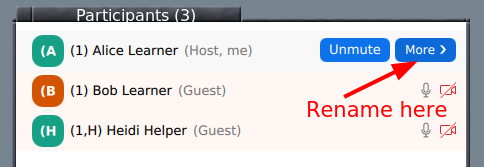
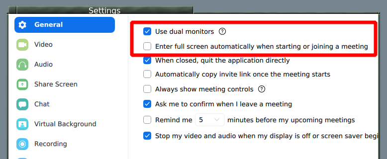

CodeRefinery operation manuals
This site contains various manuals about CodeRefinery workshops and teaching/lesson development in general.
These pages document past history, but they don’t dictate future. They are a starting point: feel free to be adventurous.
Attending an livestream workshop
We are glad you would like to attend an livestream workshop. This page will help you prepare and get the most out of the workshop and take advantage of the diverse ways to attend.
Even though it’s a one-to-many livestream, the course is still interactive. In fact, it’s more interactive, since everyone can Q&A at the same time via Notes Doc. Since we can record without privacy risk, you are better able to catch up and review. Read on to learn more.
You might register to Zoom breakout rooms, which are interactive.
Notes allows you to ask questions anonymously - even better than a normal workshop! Once we have a few tens of people in any workshop, people don’t ask voice questions anyway.
In some workshops, you can register for breakout rooms to get interactive assistance during the exercise/breakout sessions.
How it works
You open the livestream in a web browser. This is the “TV”, it is always on (but sometimes silent).
If you are part of an exercise/breakout group, be with them. The stream will tell you when the exercise/collaboration times are, and you go to there.
If you are attending Zoom exercise session, open this at the beginning. Leave it minimized when it’s not active.
If you are with an in-person group, be together. When the stream is quiet, you can interact freely.
The livestream is a portrait screenshare, so that it will only take up half of your screen (and the other half is for you to work). (If you are in a physical meeting room with a projector or second monitor, it can be half the livestream and half the Notes - this will make sense when you see it).

Screen layout with livestream on one side and workshop on the other.
General prerequisites, software installation, etc.
Check your workshop page for the general setup specific to that workshop.
Often, there is something to install on your own computer. (We usually ask you to set up your own computer, so you can continue working independently later.)
There may be some basic skills, such as the command line shell, to review in advance.
Do the installation and configuration in advance, and double check it. Our instructions are standard enough that someone local should be able to help you, if some central install help isn’t provided. The livestream can’t wait for individual people (but a local group can provide live support).
Take the workshop seriously
It’s easy to think “it’s just online, it’s easy to passively watch”. And that is OK! We’d rather have someone watch in case it might be useful, than exclude people who don’t have time. Our material is available for later. In this case, please don’t register for our Zoom/in-person sessions, since that can take a spot from others.
However, we design the workshops to be interactive, and there is a lot of time scheduled for hands-on work and Q&A. Reading this page and preparing will help you to make the most of it: don’t do multiple meetings, reserve the entire timeslots on your calendar, attend every session, do the preparation.
Workspace
Get a good, quiet workspace. Make sure it is comfortable enough to stay at for a while.
An extra monitor is useful but not required, since there is a lot of stuff to follow: the stream itself, the lesson webpage, and the window where you are doing the assignment. You could also use a second device to watch the stream. However, we do design things to fit on one computer.
If you have registered to attend breakout rooms, you’ll be expected to talk at some times and take part, not simply be quiet and listen all the time. Try to be in a place where you can speak without disturbing others. By the same token, you’ll be listening for a long time, and your ears may get tired of headphones. If you have good enough external speakers, be somewhere that you can use them (perhaps only sometimes - when it doesn’t interfere with your microphone.)
If you work in a large office, consider attending from home or in a meeting room so that you can speak and listen more freely. If you need and extra monitor or more comfortable seating space and don’t have that at home, consider working at your office. Yes, these are conflicting ideas, you need to find what works best for you.
Time management
Paying attention to something requires time, whether it is online or in-person.
Don’t schedule overlapping meetings, reserve the entire timeslots, minimize distractions. It’s easy to think you can do multiple things at once when doing it online, but really it’s a trap.
Plan to join the stream 10 minutes early to get ready - we start with icebreakers and discussion then.
There will be breaks, but even long ones go by very fast, and this gives you limited time to make coffee, eat, etc. We try to limit ourselves to half-days because of this, but consider preparing food, coffee, etc. in advance.
Make sure you take the breaks, walk around some, etc.
Accessibility
We believe that livestream workshops offer a wide variety of tools which are useful to allow everyone to succeed. Consider how you want to attend to make it the best for you:
Our material is provided in writing (lesson websites), by voice, and by demo. You don’t have to strictly follow along at the speed we teach.
We record videos and post the notes so you can review at your own pace later on. Videos don’t include audience voice or video, so you don’t have to be afraid to interact.
Notes Q&A allows anyone to ask questions anonymously and asynchronously, without interrupting others. On the other hand, there are a lot of questions, so don’t watch too closely if it is distracting. We continue answering questions for a little bit after each day ends, so you can ask even if you can’t write the question on time.
Lesson websites/Notes use standard web technologies, so that browser accessibility plugins can be used (for example making the font more accessible, check browser extensions).
Twitch can be live-captioned using the Google Chrome browser. Our videos on YouTube provide automatic captions immediately, since videos are released immediately they don’t come too late for you. Other standard browser extensions can also provide other video accessibility services without asking us.
You can follow along without providing any personal data (registration, Twitch works with cookies blocked) - though registration helps our reporting.
Communication
Most communication goes through Notes. Make sure that you open it and try it out during the icebreakers - it will become obvious then. There will be an absolute flood of information there, so watch strategically and don’t let yourself get overloaded.
Notes is much better than chat, since you can ask anonymously, you can ask at the same time as others, and multiple people can answer, and we fix it up and publish it at the end.
Final notes
Join the stream 10 minutes in advance. There is some advance icebreakers and discussion you can take part in, and you get to breath before we start.
There is usually discussion after the workshop. If you want, stick around and give us immediate feedback and ask more questions.
Sign up on the notify me list to hear about what comes next.
Attending a Zoom workshop
We are glad you would like to attend an online workshop. This page will help you mentally and physically prepare.
Our workshops are interactive and hands-on, and you will get the most out of them if you can take part in all exercises, unlike a normal academic lecture where you mainly listen. Thus, please read this and come prepared!
General prerequisites, software installation, etc.
Check your workshop page for the general setup specific to that workshop.
Often, there is something to install. We usually ask you to install things so that your computer is set up to do work later.
There may be some basic skills, such as the command line shell, to review in advance.
Do the installation and configuration in advance, and double check it. In real workshops, problems here slow us down a lot, and if you don’t prepare, you will immediately fall behind. If there is a pre-workshop session for installation, go there if needed.
If all else fails, join the workshop well in advance and ask for help then. Usually, there will be enough time to get ready for the day.
Take the workshop seriously
It’s easy to think “it’s just online, it’s easy to passively watch”. However, for an interactive workshop you do need to take part to get the most of out it, and our workshops are targeted to that. If you read this page and the workshop prerequisites, you should be OK.
Don’t do multiple meetings, reserve the entire timeslots on your calendar, attend every session, do the preparation.
Social
Attend with someone! Register together and try to be in their same group. You could even reserve a room and work together. This will create a network of learning and practice that will last much longer.
If you can attend a group, that is even better. You can bring your own team leader to guide you (if the workshop works this way). Research shows that groups that have multiple adopters have much more uptake of new skills.
Workspace
Get a good, quiet workspace. Make sure it is comfortable enough to stay at for a while.
An extra monitor is useful but not required, since there is a lot of stuff to follow: the stream itself, the lesson webpage, and the window where you are doing the assignment. You could also use a second device to watch the stream (but if you do, see the Zoom page for info about screen sharing).
You’ll be expected to talk at some times and take part, not simply be quiet and listen all the time. Try to be in a place where you can speak without disturbing others. By the same token, you’ll be listening for a long time, and your ears may get tired of headphones. If you have good enough external speakers, be somewhere that you can use them (perhaps only sometimes - when it doesn’t interfere with your microphone.)
If you work in a large office, consider attending from home or in a meeting room so that you can speak and listen more freely. If you need and extra monitor or more comfortable seating space and don’t have that at home, consider working at your office. Yes, these are conflicting ideas, you need to find what works best for you.
Time management
Despite what most people think, attending things online can be harder than in-person.
Don’t schedule overlapping meetings, reserve the entire timeslots, minimze distractions. It’s easy to think you can do multiple things at once when doing it online, but really it’s a trap.
Join the workshop 10 minutes early to get ready.
There will be breaks, but even long ones go by very fast, and this gives you limited time to make coffee, eat, etc. We try to limit ourselves to half-days because of this, but consider preparing food, coffee, etc. in advance.
Make sure you take the breaks, walk around some, etc.
Live streaming
If the workshop is also streamed, see Live streaming for how to attend that way.
Final notes
Join the stream 10 minutes in advance. There is some advance icebreakers and discussion you can take part in, and you get to breath before we start.
There is usually discussion after the workshop. If you want, stick around and give us immediate feedback and ask more questions.
Sign up on the notify me list to hear about what comes next.
Attending an in-person workshop
We are glad you would like to attend an in-person workshop. This page will help you mentally and physically prepare.
Our workshops are interactive and hands-on, and you will get the most out of them if you can take part in all exercises, unlike a normal academic lecture where you mainly listen. Thus, please read this and come prepared!
General prerequisites, software installation, etc.
Check your workshop page for the general setup specific to that workshop.
Often, there is something to install. We usually ask you to install things so that your computer is set up to do work later.
There may be some basic skills, such as the command line shell, to review in advance.
If all else fails, join the workshop well in advance and ask for help then. Usually, there will be enough time to get ready for the day.
Take the workshop seriously
It’s easy to think “it’s just a class, it’s easy to passively watch”. However, for an interactive workshop you do need to take part to get the most of out it, and our workshops are targeted to that. If you read this page and the workshop prerequisites, you should be OK.
Social
Attend with someone! Register together and try to sit near them. This will create a network of learning and practice that will last much longer.
If you can attend a group, that is even better. You can bring your own team leader to guide you (if the workshop works this way). Research shows that groups that have multiple adopters have much more uptake of new skills.
Computer and equipment
Bring your laptop and charger, of course. If you use external mice, etc, it would be good to bring them too. You’ll be on your device a lot.
Usually, you’ll need to look at both the lesson webpage and the window where you are doing the exercises at the same time. Consider how you can arrange windows to do this best.
Time management
Try your very best to attend the whole workshops; at least don’t miss the early sessions. Later sessions depend on earlier ones, and it’s easy to get behind. Tell others this is important so that you can free your schedule.
Arrive 10 minutes early to get ready.
Final notes
Arrive 10 minutes in advance to get set-up. There is some advance icebreakers and discussion you can take part in, and you get to breath before we start.
There is usually discussion after the workshop. If you want, stick around and give us immediate feedback and ask more questions.
Sign up on the notify me list to hear about what comes next.
Zoom mechanics and controls
Basics
Most Zoom controls are probably well known by now, but if not, view Zoom’s basic guide
Mute and unmute yourself from the buttons on bottom.
You can rename yourself from the participants list (hover over your name.
We don’t use Zoom chat for typical questions: use HackMD instead.
Chat OK for administrative questions.
When joining, please use the name you used to register for the course.
In livestream workshops, there is nothing in the main room: that is broadcasted via livestream in a separate browser window, and you switch as needed.
Audio/video on or off?
Main room: Stay muted, video off, unless you want to speak up.
Breakout rooms: Try to leave on for most interactive atmosphere.
Workshops with teams: your name should indicate your breakout room
You will be told if this section is relevant to you.
Have your breakout room number in your name:
(number) Your Name
(number,H) The Name for helpers

Rename yourself in a meeting by starting participants list:

Rename is found if you hover your name and click “more”

Breakout rooms
Click the “breakout rooms” button at bottom and you can join a room.
You can click “Join” to join your breakout room by yourself.
If you are joined via web, make sure your name is correct (see above) and use Zoom chat to ask host to assign you to the room.
Return to main room: “Leave” button at bottom has an option for “Return to main room”.
Reactions
We watch the participant list and can see these reactions (in the application):

Task completed: Green check
Technical problem: Red X
Need more time: Slower “<<”
You can signal go faster and go slower
You can Raise your hand
Other settings

Automatic fullscreen when screenshare starts can be turned off
Dual monitor mode makes separate windows for screenshare and participants
See also
The old version of this document is available at Zoom mechanics and controls.
This is licensed under CC-BY and we encourage and appreciate reuse, modifications, and contributions.
Collaborative document mechanics and controls
Hackmd or HedgeDoc are real-time text editor online. We use it to:
As a threaded chat, to answer questions and provide other information without interrupting the main flow of the room.
provide everyone with a more equal opportunity to ask questions.
create notes which will be archived, for your later reference.
You do not need to login/create an account to be able to edit the document.
Basic controls

This may look slightly different on mobile devices and small windows.
At the top (left or right), you can switch between view, edit, and split view and edit modes.
You write in markdown here. Don’t worry about the syntax, just see what others do and try to be like that! Someone will come and fix any problems there may be.
Please go back to view mode if you think you won’t edit for a while - it will still live update.
Asking questions
Always ask questions and add new sections at the very bottom. You can also answer and comment on older questions, too.

Questions and answers in bullet points
Since we plan to publish the questions and answers later as part
of the workshop page, we recommend to not use any names. You can indicate
your own name to make it easier to discuss more during the workshop but
then always use this form: [name=Myname]. This makes it easier for
us to automatically remove all names before publishing the notes.
Other hints:
Use
+1to agree with a statement or question (we are more likely to comment on it).Please leave some blank lines at the bottom
NOTE: Please don’t “select all”, it highlights for everyone and adds a risk of losing data (there are periodic backups, but not instant).
It can be quite demanding to follow the collaborative document closely. Keep an eye on it, but consider how distracted you may get from the course. For things beyond the scope of the course, we may come back and answer later.
Don’t get overwhelmed
There can be a flood of information on the collaborative document. Scan for what is important, then if you would like come back later. But it is important to keep checking it.
Privacy
Assume the collaborative document is public and published: you never need to put your name there.
The collaborative document will be published on the website afterwards. We will remove all non-instructors names, but it’s easier if you don’t add it there in the first place.
Please keep the link private during the workshop, since since security is “editable by those who have the link”.
You can use
[name=YOURNAME], to name yourself. We will remove all names (but not the comments) before archiving the notes (use this format to make it easy for us).
Roles overview
CodeRefinery has been able to scale online workshops while maintaining an interactive feeling. This page describes the roles that we use in our workshops.
Despite the many different roles documented here, in practice many of them are occupied by the same people. Best practices below tells more about what tends to happen. One of the advantages of our large workshops is that we have many more staff on hand (often 10-15), thus allowing much more specialization than small workshop can have (thus, the large number of roles below). Many of our instructors give feedback such as “this is so much easier: we only show up and teach!”
A common pathway goes (Learner/team leader) → (Expert helper/Instructor) → (More specialized roles). Note that thanks to our team teaching or “co-teaching”, it is really easy to join as an instructor!
You can also find the common tasks in checklist-format under each roles section in the Workshop playbook.
Workshop roles
Learner
Comes and learns.
Does necessary preparation and attends the workshop
More info: Learners section
Team leader
Team leaders are only a small step above learners. They aren’t expected to know everything, but mainly keep their breakout rooms on track - they could even be a slightly more confident learner.
Leads a breakout room
keeps on track
makes welcoming community
answers some questions
ask for more help when needed
Attends a one-hour team leader preparation / onboarding session.
More info: Team leaders / Helpers / Exercise leaders
Instructor
Obviously, instructors teach. Uniquely in our system, they have a lot of support and generally can focus on the teaching part.
Prepares lesson and “just teaches” without worrying about other workshop matters
Team teaching, you are not alone
Attend instructor preparation calls
Usually receives one-on-one mentoring in advance
Other times during the workshop, usually serves as an expert helper
More info: Instructors
Expert helper
Expert helpers are generalists who don’t have other assigned roles. Thanks to HackMD and breakout rooms, they have plenty to do.
All-around generalist who assists wherever is needed
Answers questions in HackMD
Supports team leaders in breakout rooms: rotates between breakout rooms and checks how things are going
Identifies important issues and raises them to the instructors, “voice of the audience”
More info: Expert helpers
Behind the scenes
HackMD manager
The HackMD manager closely watches HackMD to keep it organized and by reading it in detail, can serve as the “voice of the audience” to the instructors.
Ensures everything gets some answer quickly
Even if it is “will be answered later”
Can raise issues to instructors immediately if needed.
In general serves as the instructors’ “ear on the ground”
Maintenance during the workshop
Copies old information to archive HackMD if too much traffic
Organizes sections and questions
Notes break and exercise times
Processes and archives HackMD after the course.
More info: HackMD manager
Host
The Host serves as the manager of learners during the course.
Learner Zoom meeting host (often). Often the registration coordinator.
Helps learners with organizational issues during the course
Ensures that everyone is welcomed and knows what is going on
Assign learners to breakout rooms
Answers technical questions about the course itself
Often the same person as the registration coordinator.
More info: Host
Director
The director manages the flow of the course: preparing and cueing instructors, switching the livestream scenes, announcing schedule, adjusting schedule as needed.
Instructor Zoom meeting host (often). Often the instructor coordinator.
Cues the sessions, makes sure they flow together well.
Adjusts the flow when things do not go according to schedule.
Has sufficient knowledge of the tech setup to do the scene switching.
More info: Director
Broadcaster (livestream)
The broadcaster is responsible for the livestreaming tech.
Only needed in livestream courses
Installs and manages OBS control for livestreams
Ideally is not teaching in the first session
Is around in case of problems, otherwise the director does most of the scene switching.
Makes sure videos get processed and to Youtube in a timely manner, or at least saves them where someone else can do it.
More info: Broadcaster
Registration coordinator
Oversees registration and generally everything on the participant side.
Communicate with participants
Organize installation help session
Contact person for learners
Collect feedback
Provide participation certificates
More info: Registration coordinator)
Instructor coordinator
Find instructors
Coordinate the schedule and instructors for each event
Organize instructor onboarding
Collect feedback
More info : Instructors.
Outreach and marketing coordinator
Makes sure workshop gets advertised in different places
You can find a list of commonly advertised places in the bottom of the Workshop checklist template.
Team leader / Exercise coordinator
Communicate with all team leaders, contact person for them
Makes sure all exercises are ready and commicated before and during the workshop
Organize the team leader onboarding session
Usually attends as an expert helper to generally be available and support all leaders.
Collect feedback from team leaders
More info: Exercise coordinator
Video editor
Watches videos and prepares for YouTube upload
Uses ffmpeg-editlist to process videos after the Broadcaster has made them available.
Work should be done the day/evening of of the course
Best practices
Roles that are often combined:
Registration coordinator and Host
Instructor coordinator and Director
Expert helper and anything
Instructor and any other role (but not Host)
Roles that should not be combined:
Registration coordinator and Instructor coordinator (these two together tend to form the “core team”)
Broadcaster/Director and Instructor on the first sessions of each day.
HackMD manager and other roles (so delegate HackMD while you do something else! this is OK.)
Host and any active teaching (in big workshops at least - learner management keeps you busy)
Other notes:
HackMD manager can rotate between different people.
Expert helpers can replace team leaders if they cannot join the full workshop
Coordinators delegate
Team leaders / Helpers / Exercise leaders
We use this page during team leader onboarding.
The minimum to mention/read when preparing:
The summary
Code of conduct
What can I do to prepare for the workshop?
What we want to avoid
Thanks for being a team leader! Without you, these large online workshops would not be possible.
TL;DR (Summary of this page)
Everyone watches the CodeRefinery stream (how to attend via livestream)
All communication, questions, and feedback happen via collaborative document (Collaborative document mechanics)
Exercises can be done individually or in a pre-formed team, online or in person
Team leaders are an important link between the instructors and learners. Please:
In the collaborative document let us know about progress of the team and any issues
Be available for learners to ask their questions and lead discussions
Please write questions that you cannot answer in the collaborative document (then others will answer)
If idle, check the collaborative document for open questions and try to answer them
If you have questions before the workshop, write to support@coderefinery.org or you can join the
CodeRefinery chat (we recommend the #tools-workshop stream,
and if you can’t find it then #general is good).
If you have fun being a team leader for the workshop, please visit our contributing page page, to find out about further volunteering possibilities within CodeRefinery.
Code of Conduct
We follow a code of conduct for all our sessions before, during, and after workshops.
We’ve designed the workshop so that it is very hard for one person to ruin it for everyone. Within your team, you will need to take on the role of ensuring a good environment.
If you see anything that is not supporting an positive learning environment, please let us know.
If it’s a general issue that can be mentioned publicly, write it immediately in the collaborative document.
Send a message to support@coderefinery.org if it is private and can be handled asynchronously.
CodeRefinery project
We teach all the essential tools which are usually skipped in academic education so everyone can make full use of software, computing, and data. We don’t just give courses, but we are a training network that you can join to share the effort and bring better courses to your community.
..and you?
Shortly introduce yourself in the collaborative document of the onboarding session:
Who are you?
What do you do?
Where are you connecting from?
What is needed to be a team leader?
Most importantly, you do not have to know everything (we don’t, either). If you aren’t sure if you can be a team leader: you probably can be one!
This is what we expect:
Have been to a CodeRefinery before and used Git some since then, OR have some general experience with Git (branching, pull requests) and command line work, OR be able to generally follow the path of the exercises that we have laid out.
Be present in your teams physical/virtual room at least during exercise sessions of the workshop.
Show a positive, motivating attitude to learners.
Keep exercises going and let us know when there are difficult questions!
Who is joining this workshop?
Be aware of the different
Career stages (students, postdoc, researcher, professor, industry),
Backgrounds (computer scientist, IT, domain scientist, coding beginners,…),
Infrastructure (operating system, access restrictions, preferences on graphical vs command line interfaces, …) and
Preferred programming languages (Python, R, Matlab, Julia, Fortran, …) of your learners.
There is also usually a great variety of pre- knowledge on the different topics of the workshop.
Overview from the pre-workshop survey
What will happen during workshop?
The workshop schedule on the main workshop page contains links to lesson material, including lists of exercises.
The best analogy is watching a popular sporting event on TV. There are periods of lots of activity, and clear periods of breaks where you do your own thing.
Everyone follows stream during lessons - lessons, demos, exercise intros, going over solutions, etc.
For questions and instructions we use a collaborative document (more below).
Exercises during the lessons are done individually or in teams and there is many ways to do this:
Watch and work alone
Watch together and interact during exercises/breaks (in-person or online)
Reviewing/doing exercises later
Overview of the different options of doing the exercises individually or in a team.
Exercise sessions
We try our best to be very explicit about what is going on. Your first goal should be to make sure the learners are engaged and no one is left behind.
The instructors should clearly tell which exercises and for how long (we try to make all exercise sessions at least 20 minutes long). If anything is unclear please ask via collaborative document, you are our safety net.
Make it easy for learners to ask for help:
Make sure your group knows your name and that you are their team lead.
Always start by greeting people and ask how the lesson is going; report back if there is something instructors should be aware of.
Encourage your team to also put answered questions in the collaborative document, someone else might be wondering the same thing.
Want extra help?
It is OK to not know something!
Use the collaborative document if there is questions that you cannot answer. Our instructors and expert helpers are watching it and try to answer every question.
Major problems?
Exercise time is limited, watch the time and keep things moving.
If some debugging takes to long, it’s reasonable to describe the problem in the collaborative document. An expert helper may have seen the problem before.
If any one problem takes too long, it’s OK to say “we don’t have time, let’s come back”

Example of collaborative document during an exercise session. a) clear description of topics of the exercises. b) team status. c) as always, questions at the bottom.
What can I do to prepare for the workshop?
As a team leader, we do not expect you to know all our CodeRefinery training material, but if you have time:
Take a look at the exercises in advance of each day (the exercise plan is on the workshop page. Lessons have an “exercise list” page that shows everything), check that you understand the general point of each of them.
Often we only manage to adjust exercises and lessons shortly before the workshop. Thank you for your understanding and patience.
If you are interested, also read through the instructor guides for the lessons (there is a link at the top or sidebar of each lesson).
Use GitHub issues on the lesson GitHub pages to point out issues with exercises and the materials.
How to create a positive learning environment?
As a team leader, you have a crucial role during workshops:
You are between the learners and the organizers and instructors, please use the collaborative document to communicate.
Encourage learners to learn from each other.
Acknowledge that some of the material can be difficult and that people in your team will learn more working together.
Acknowledge when learners are confused and raise it to the instructors. Understanding why learners are confused provides useful feedback for instructors. You are our eyes and ears.
As we said, you don’t have to know everything, just like learners don’t necessarily know everything (we don’t know everything, either). It’s more important to be responsive and work together.
If you meet virtually: Turn on your camera, and encourage everyone else to do so as well. Have an introductory round in the first exercise session, to get to know your group. Whichever strategy you choose for your team, be present and encourage learners to ask questions.
In an in-person workshop: Stand up and walk around, try to make rounds by everyone. If you are convenient, students will ask. If you are sitting in the back, student’s won’t. Students rarely try to get your attention from across the room if you don’t look ready.
What we want to avoid
Take over the learner’s keyboard (neither physically nor remotely). Instead, try to have a sticky note pad and pen / use the collaborative document and write the commands that they should type.
Criticize certain programs, operating systems, or GUI applications, or learners who use them. (Excel, Windows, etc.)
Talk contemptuously or with scorn about any tool. Regardless of its shortcomings, many of your learners may be using that tool. Convincing someone to change their practices is much harder when they think you disdain them.
Dive into complex or detailed technical discussion with the one or two people in the audience/team who have advanced knowledge and may not actually need to be at the workshop.
Pretend to know more than you do. People will actually trust you more if you are frank about the limitations of your knowledge, and will be more likely to ask questions and seek help.
Use “just”, “easy”, “simply”, or other demotivating words. These signal to the learner that the instructor thinks their problem is trivial and by extension that they therefore must be stupid for not being able to figure it out.
Feign surprise at learners not knowing something. “You’ve really never heard of (sometool)?” signals to the learner that they do not have some required pre-knowledge of the material you are teaching, that they don’t belong at the workshop, and it may prevent them from asking questions in the future.
Strategies for leading a team
There are several strategies you can use to run your team, no matter if you meet in a physical or virtual room (Physical room would need a larger screen for every one to see though):
Strategy 1:
Everyone does the exercises themselves until someone has a question
Encourage learners to ask multiple times; if necessary share your/learners screen and discuss.
If everyone is active, this can be good, but there is a risk that the barrier for disturbing the silence is too big.
Strategy 2:
To start things off, team leader can share the screen.
Do not try to hide mistakes (they make good learning opportunities, “can you spot my mistake?”) and discuss your solutions.
It might be good to give learners some lead first, and use this only if no one volunteers.
Strategy 2:
Team leader asks someone to share the screen and go through the exercise.
You can encourage the others to guide the one who is sharing the screen. Or let the person go on her/his own pace.
If no one dares at first, you can also start sharing your screen and let the room tell you what to write.
That way they see how it can go and the barrier shrinks.
Try to alternate who is sharing the screen for each session.
When someone has an issue, it is a good idea to switch screen share to them and maybe even continue from there
You don’t actually have to do the exercises. You could apply lesson material to your own team’s work, review what was just said, have a free-form discussion, etc. - if those are more valuable. You can always come back to exercises later, or let learners do them as homework.
How to solve common problems in teams?
One learner asks very many questions, ends up monopolizing all of the time. Other learners are left without help, and the whole group may not get the exercises done
Encourage them to ask in the collaborative document
It can be very hard to say “no”, but it’s more important to have balance than answer every question you are asked. If you need to say no, you can try things such as “I’m sorry, but in order to finish we need to go on now. We can keep working on it later - would you like to watch?”
There is some sort of problem that ends up taking a lot of time
Work on it for a minute or two.
Encourage to describe the problem in the collaborative document. Our expert helpers may be able to help. Nothing wrong with this, because there is no deadline or time limit.
No one asks any questions
Make sure people know that you are there for them if they need help
Some exercises are easier than others and people really may not need any help with some of them
Remind that the recording can also be watched later, if people cannot keep up
Use your time answering questions the collaborative document
Any questions?
Send us an email to support@coderefinery.org
If you want to, sign up for our Zulip chat to ask us anything, anytime. Use
#tools-workshopduring the workshop itself (you need to join the stream, it is not default for new chat members).During the workshop, please use the collaborative document.
Path ahead
Would you like to
become an instructor?
help organizing a workshop?
contribute to lesson material?
have any other ideas to contribute?
community calls: see https://coderefinery.org/organization/meetings/
See our website and Contributing to CodeRefinery. Best way to get started is to join the Zulip chat.
More background about scaling workshops
Traditionally, a workshop has instructors and team leaders/helpers, but the capacity is limited by instructors, so we are limited to ~30-40 people at most. Then, we tried to scale to larger numbers: even up to and beyond 100 people. For this, we have to rely on team leaders . A team leader does not have to be an expert in the material, but should be able to keep things flowing.
Team leaders are an essential part of the CodeRefinery workshop team and allow CodeRefinery to scale to many more people than we could otherwise handle. Team leaders will guide their team through the course, keep time, and let us know when more help/time is needed during the exercise sessions. Instructors and expert helpers are always available via the collaborative document. It is very likely that you’ll grow as a mentor and learn how to be a more efficient teacher.
More background about teams
A team could be for example a group of colleagues/friends where one of the team members has a bit of knowledge on the tools presented in the workshop. This person can act as team leader for the workshop, but may still learn a thing or two themselves. In that way you can work with people you know and the barrier for asking questions and discuss together may be a bit lower than in a group of strangers.
Sometimes we also allow learners to register as individual learner with interest in being in a team. We then try to arrange those people in teams which stay together for all exercise sessions on all days and provide a zoom breakout room with a team/exercise leader. Since this is dependent on our team leader capacities, we cannot accept infinite amount of learners. Being assigned a team as a learner allows people to form a bond and get the rooms started sooner. We will try to keep you in the same team room as long as we can, but we give no promises and will rearrange as needed when people can’t attend.
See also
Carpentries instructor training
Teaching Tech Together chapters 8, 9, 10.
Instructors
Instructors are the ones who “lecture” in the workshops - but of course there are many other roles which are helping with the teaching, most notably team leaders and other helpers.
This page links guides on various aspects of being an instructor.
Join the #workshops stream in the coderefinery Zulip chat and see what workshops are planned.
Below a few things that might be of interest if you want to teach with us:
Instructor introduction
This page gives general instructor and expert helper introduction material. These people are responsible for more than one breakout room, and have to have an overview of more of the course. In short, if you want to take the next step in CodeRefinery, this is the place to start.
What’s it like as an instructor?
We teach online, livestream, and with co-teaching. That means the lesson is a conversation between two instructors, instead of one person alone and many students. It’s especially easy to get started this way: co teach with someone experienced!
You can see a demo of what livestream co-teaching is like here: https://youtu.be/WjmttAniZX8?t=3 (15 min, many different scenes)
How do you get started?
That’s what this page is about (well, and the instructor training). We believe that you best learn by working with others in practice, and provide plenty of opportunities to do that.
Starting materials
Reading here: the other pages in the section, see sidebar.
Co-instructors - Quick intro for a first-time co-instructor
Team teaching - Details on team-teaching
Lesson presentation hints - Generic presentation hints
Also read the team leader information
Team leaders / Helpers / Exercise leaders - general on motivation and how to prepare for breakout rooms
Reading elsewhere:
As an instructor
Most of our workshops are very collaborative arrangements: you are rarely alone. This is one way of looking at it:
Look at and revise the workshops before they teach, making small, incremental improvements. But, you don’t have to (and in some sense, it’s good if they stabilize some more).
Especially go over the examples when preparing.
Have a chat with someone else (probably another instructor or expert helper) before teaching. We encourage this for everyone, even experienced instructors, to better transfer knowledge among each other and stay up to date with the latest developments.
Teach independently or co-teach. Ideally, co-teach the first time(s). Really, we’d like to get to the point where we always co-teach. Co-teaching doesn’t mean different people take different lessons, but two people teach all parts of the same lesson by turning it into a discussion between the two instructors. TODO: produce information on this.
in the main session
As an instructor, when preparing your lesson you first need to decide how to balance between the main room and breakout sessions.
Clearly say when a learner watches, when they type along, when they should work on something independently as an exercise.
CodeRefinery is traditionally a hands-on workshop, so breakout-room sessions should be a large part of the workshop.
We usually keep the main room mostly for general discussions. Small exercises or polls can also be done in the main room, for all hands-on exercises we divide the learners into breakout-rooms each with one team leader.
To give you an idea about how the work in the breakout rooms is going, monitor the hackmd closely and if time allows try to visit a few breakout rooms to see how it is going and if needed adjust the timing.
Preparing for the breakouts (in the main room)
As an instructor, you need to clearly define what the tasks of each breakout session is (even if it is just “explore and discuss”). Online courses need more “meta talk” about how you expect things to go, since it’s not as easy to read the room or fill in expectations later (distractions, hard to communicate to breakout rooms after opened).
Clearly say what the tasks of the breakout session will be.
Put that task and a link to the part of the lesson in the hackmd.
Clearly say how long each breakout session will be (make sure it’s long enough and adjust during the exercise session if needed)
Clearly say if things in the future will depend on this exercise (is someone completely lost if they don’t make it to the end. Halfway?)
Try to make breakout sessions longer:
imagine a 5 minute overhead for each session, getting people there, deciding who does what, acquainted with what they need to do, and debugging problems.
10 minutes is quite short, 20 minutes is best.
Can you say less and let people discover it for themselves?
As a team leader, if anything is unclear to you, it is very unclear to others. Comment/Ask in the HackMD or speak up and ask!
Top issues new instructors face

An example of a beautiful screenshare. Note the portrait orientation (you have half the screen free for notes and HackMD, learners have half the screen free to do their own work). The terminal is dark-on-light, a minimal prompt, no other fancy shell distractions, there is a shell history visible, and slightly distinct colors between the web browser and the terminal.
Breaks are not negotiable, minimum 10 minutes.
Breakout sessions too short. Make them as long as possible, don’t expect to come back for new intro, then go back.
People will accomplish less than you expect. Expect learners to be 5 times slower than you, at best!
All the other tools and stuff will go wrong. Try to not bring in a dependency when you don’t need it.
Trying to accomplish too much: it’s OK to cut out and adapt to the audience. Have a reserve session at the end you prepare, but are ready to skip.
Not clearly separating (in the learner’s mind, by meta-talk), the differences between demo, type-along, and exercise/exercise-prep.
Demo and type-along are hard to do at the same time: they are very different types of focus
Type-along and exercise of the same thing are not good to combine, leads to duplication
Explaining how, but not why.
Running out of time to making your environment match the learner’s.
Running out of time to set up good screen sharing practices (terminal history, portion of screen, remote history) in advance.
Assuming learners remember what they have already learned, or know the prerequisites. Or have stuff installed and configured.
Not managing expectations: learners think that you will accomplish everything, and feel sad when you don’t. Instead, say explicitly what everyone should follow along, what you might want to watch, what is only a demo.
Following the lesson as written at all costs.
For livestream courses:
Worrying too much (forgetting that there is a co-teacher and break time where you can discuss and plan your next step).
Speaking like learners should be able to speak up with voice, instead of “answer in HackMD or discuss within your groups.”
Forgetting to save time for Q&A: there is more Q&A because of HackMD. You might take a few minutes to screenshare HackMD and after each exercise session, after each break, after each episode, and at the end of each day.
“Stop screenshare” instead of letting the other person start and take it from you. Or, the broadcaster switching the scene. Never do “stop screenshare”.
Forgetting to screenshare the HackMD during Q&A time (this is the most important way learners know it is active, and thus feel a connection to the course).
Forgetting there are multiple ways to attend: not everyone is in a breakout room, not everyone has helpers nearby. Instead, use phrasing such as “for those of you in breakout rooms, go there now. Everyone, remember to ask any questions in the HackMD, even if you are alone.”
Planning to do a demo during team breakout sessions (teams will still hear your voice, if they mute the stream it’s hard to bring them back).
Sharing a fullscreen, not the 840x1080 portrait layout.
Showing non-creative-commons material on the stream.
Being an instructor in livestreamed CodeRefinery workshop
Basic setup
In a livestreamed CodeRefinery workshop, we have two types of learners: Active learners attending in Zoom and passive learners watching the stream. Learners from both groups will watch the stream from their own browser and have the possibility to interact with the instructors and ask questions via HackMD (a collaborative note taking tool: Collaborative document mechanics and controls). Active, registered learners will additionally get interactive help in Zoom breakoutrooms during exercise sessions. Learners on stream can either form private groups or do the exercises on their own. Following our team teaching strategy, your are never alone as an instructor. While you are teaching, you can fully focus on the task at hand, your co-instructor will watch the chat and HackMD and relay all important information to you.
I am teaching in a workshop, what do I need to know/do?
Attend the instructor onboarding session (Instructor introduction)
Make sure you have your tech setup for the course: Instructor technical setup, online
Consider joining the learners Zoom to help in breakoutrooms and answer questions in HackMD
When your teaching time approaches, join the instructors Zoom.
Stay muted and turn your video off until it is your turn to teach
Setup your windows that you want to share during teaching
When it is your turn to (co-)teach,
All co-instructors, turn on your video
Unmute yourself only when talking
Share only the important portion of your screen in vertical mode
If you need a reaction from learners, use HackMD
Co-Instructor watches HackMD and relays important information/questions
Exercises: clearly state which exercises should be done and at what time the teaching continues
After your lesson, consider joining learners Zoom
If you can, join after-course-day-hangout with other instructors
Give feedback on your teaching experience with CodeRefinery
We have also collected a lot of material around teaching which you are free to read:
Why team teaching?
-> see also Team teaching
makes lesson more lively
less chance of forgetting something essential
one of the instructors can watch for good questions in HackMD and ask/answer them on stream
less stressful for the individual
easier to include new instructors
easier debugging, finding typos etc on stream
you are not alone
Why livestream?
A livestream workshop allows us to reach an unlimited number of people, at the cost of not being as interactive as in classroom/zoom room. However, we have had great experiences with the following strategy:
HackMD as collaborative note-taking tool allows learners to ask questions anonymously and everyone can answer these questions asynchronously.
Learners can register to join Zoom breakout rooms, which are interactive and team leaders can help with any questions during exercise sessions and breaks.
Learners can also form private breakout rooms or meet in person and watch the stream and do exercises together.
While the full livestream setup is a bit complicated, you as an instructor do not have to worry about anything but your teaching. We have setup the whole system in a way that only active instructors are shown in stream, which makes video postproduction faster. What makes our setup different from your ‘usual zoom class’ is that our instructors Zoom room that you are in while instructing is completely separate from the learners, while providing interaction possibility via HackMD.
Teaching via livestreaming
We’ve all done a lot of teaching via Zoom, but the CodeRefinery livestream is a new concept. This introduces teachers/helpers to the idea (and for a detailed reference, see CodeRefinery MOOC strategy).
Video
Watch a demo on YouTube: https://www.youtube.com/watch?v=WjmttAniZX8. (When watching, also carefully read the video description/chapter titles, which provide more the explanation of what is going on).
Compared to Zoom teaching:
You are in a Zoom meeting with only instructors/staff
Someone (not you) captures this meeting and broadcasts it via livestream to all the audience.
The audience can’t directly talk with you (but when there is a large audience, who does anyway?). Instead, always say things like “What do you think? Write in the HackMD. [proceed to screenshare it and discuss answers]”
You don’t need to worry much about managing the audience. Others do this and relay information as you need. You should pay more attention to HackMD.
Basic meeting setup
There is an “instructor Zoom meeting”. There are no students here, and everything can and will be captured, recorded, published, and livestreamed.
In the call are instructors, the Zoom host, and possibly some other helpers who might occasionally comment.
The cameras of instructors are captured via Zoom gallery view. This is show as both a “teacher view” as well as “overlay on screenshare”.
If you have your camera off, you will not appear in the stream. So turn your camera off when you are in the instructor meeting but not presenting. Ask others, but in principle it is fine to join, stay hidden, and interact when relevant.
During the breaks/exercise times, the livestream itself (via OBS) gets muted and switched to another scene. So, you are free to unmute, talk, and chat with other instructors. This is a great way to relax and prepare for the next segments! This actually lowers the pressure to pre-plan every part in advance.
By the same token, you can join the meeting during the previous break to get all set up.
Zulipchat serves as the overall connection between the different parts of the course and instructor backchannel. This is the least important place for the current active instructor to watch (but might be useful for a co-instructor or expert helper to occasionally check).
Screensharing
You can share your screen normally via Zoom. The livestream is fixed to an aspect ratio of 840 pixels wide × 1080 pixels high (this is so that the learner has half of their screen available). You can not do a full landscape live-coding follow-along screenshare (nor is this good practice in other workshops).
In Zoom, you can either share one window or Advanced → Share a portion of the screen → move the overlay to a portrait view. Don’t worry about making it exactly 840×1080, OBS automatically fits it and we can adjust it during the setup time.
If you have a landscape presentation (as opposed to live coding), just share your whole screen, and the OBS operator will scale things properly if it doesn’t automatically work. Note that the 4:3 aspect ratio is better than 16:9, but that usually has black bars on the side. This can be removed via OBS.
Don’t stop screenshare unexpectedly - wait for the broadcaster to switch to gallery view. If you stop screenshare unexpectedly, the stream reverts to someone picture full-screen. Because of Zoom “dual-monitor mode”, sharing screen does not prevent the gallery from showing.
HackMD and audience feedback
HackMD (or similar document-based things) is our preferred communication system. The biggest problem is that it is too useful, and too many people ask questions, which will easily overload you. To solve this, we have co-teachers (non-typer can watch HackMD), HackMD helpers (watch and answer basic questions).
There are several general strategies:
Occasionally screenshare the HackMD. This emphasizes to the audience that questions there do get noticed.
Rely on other helpers to answer most questions.
During Q&A time, go to the HackMD and comment on the most important questions.
Call on co-teachers, “do we have any good questions from HackMD?”
Co-teachers should be more than willing to interrupt with relevant questions right away.
You can’t use Zoom polls and so on. Instead, use HackMD cleverly.
For example, below you see a poll (people add o to make a bar
graph), and a free response:
Have you used HackMD before?
yes: oooooooo
no: oooo
What do you like about it?
- answer
- answer
- .
- .
- .
Team teaching
Listening to only one person talk can be boring. Listening to a discussion is much less so. “Team teaching” can mean many things, but in this case we are referring to two instructors are both actively involved in lecturing at the same time, as some sort of conversation between them. It is a form of co-teaching.
When it works well, it makes a lecture much more dynamic and engaging, and reduces the load for each person to plan everything because you can rely on two minds to do it live. The difficulty is that you need to coordinate and it is our nature to keep talking while teaching, making a conversation difficult.
See also
Demo of CodeRefinery livestream teaching. This shows a demo of many parts of team teaching on a livestream - read the video description for details.
Basics

Demo of team teaching. Two people are speaking, in this case one is typing and giving the small point of view, and one is explaining the big point of view.
We can’t claim to know the best way to do this yet, but we have seen ways that work and don’t work.
The basic idea is that you want to keep a constant conversation going. This can be a mutual discussion, one person explaining big concepts and one the details, one person asking questions and the other answering, or some other combination. This is different that two people teaching different sections.
There is less need for the instructors to prepare every single thing, since you can rely on the wisdom of the group to get you through areas you haven’t perfectly prepared. In fact, this is good, because then your learners will see things go slightly wrong and your live debugging. Still it can be useful to agree with your co-instructor on the choreography of your session (more about this below).
One of the most important principles of ship handling is that there be no ambiguity as to who is controlling the movements of the ship. One person gives orders to the ship’s engine, rudder, lines, and ground tackle. This person is said to have the “conn.”
— James Alden Barber, 2005, “Introduction”, The Naval Shiphandler’s Guide, p. 8. Mark B. Templeton, via wikipedia
As the quote says, in any large enough operation, multiple people are involved, but responsibilities should be clear. At least, the team should know who is pushing things forward (even if, to make it seem live, they still discuss among each other anyway).
We propose two basic models, but of course there is a constant continuum. And in either model it can be good to switch roles every 20-30 minutes.
Model 1: Guide and demo-giver
One person serves the role of guide, explaining the big picture and possibly even the examples. The demo-giver shows the typing and does the examples, and could take the role of a learner who is asking about what is going on, the person who actually explains the details, or an occasional commenter. Anyway, the guide is the one navigating through the course and bringing up material in a logical order for the audience and “has the conn”.
Hands-on demos and exercises work especially well like this. Here, the guide would follow the outline and serve as the director (see below).
Guide |
Demo-giver |
|---|---|
Introduces most material |
|
Goes through theory |
Asks questions that a learner may ask |
Introduces type-along |
|
Explains steps of type-along |
Types during type-along |
Asks questions to Demo-giver during type-along |
Explains details what they are typing and what happens |
Looks at HackMD during type-along |
Looks at HackMD during theory |
Discusses during Q&A |
Discusses during Q&A |
Model 2: Presenter and interviewer
In this case, it is the presenter who is mostly explaining and giving the demos, and generally trying to move the forward through the material. The interviewer serves as a learner or spotter, fills in gaps by asking relevant questions, and tries to comment to the presenter when things are going off track. The interviewer “has the conn”.
This is closer to normal teaching, so feels more natural to do. The big disadvantage is that it’s the tendency of the presenter to keep talking, and the tendency of the interviewer to be nice and not interrupt. This negates most of the benefit you would hope to have, but is much better than solo teaching.
Here, the presenter would follow the outline and serve as the director (see below).
Presenter |
Interviewer |
|---|---|
Asks questions to presenter |
|
Answers questions using their special knowledge |
Follows up with learner questions |
Pushes forward though the material |
|
Asks questions that a learner may ask |
|
Introduces type-along |
|
Explains type-along and material |
Explains type-along and material |
Looks at HackMD when possible |
Looks at HackMD most of the time |
Discusses during Q&A |
Discusses during Q&A |
Hints
With more than one person, there is a risk of seeming uncoordinated when the team doesn’t know who is supposed to move the lesson forward. It’s not bad to have short discussions to decide what to do next, it makes the show seem interactive. But if it happens too much, it becomes noticeable. As quoted above, you could adopt a principle which exists in many domains: at any time, only one person is in control. Implemented in team teaching, it becomes: you explicitly know who is in control (the director). The director is responsible for understanding the current situation and checking with other instructors, but in when you just need to something and no one has strong opinions, you don’t debate, the director decides. The main difference of Model 1 and Model 2 above is “is the director the one mainly explaining new material, or the one asking questions”. There are also multiple layers of director: there may be the director for the whole course, and the director/”conn” for the lesson.
We can’t tell you what works best for you. But the models above and thinking about who the director is should let you have an efficient discussion to decide your model. The need for a director is why we don’t recommend fully equal co-teachers. Instead, divide the course into parts and use the two models for each part.
Of course, there are other roles in a workshop.
The HackMD watcher pays particular attention to the audience questions. They might be a different person from the co-teachers and they can interrupt anytime.
The Meeting host manages the meeting itself.
The Director could be completely separate from the people on screen, and somehow sending signals to the teachers as needed. But, unlike scripted media, the course reacts more to the audience and it is better for the director to be in the lecture.
If you ever go off-plan, that’s OK. You can discuss during the lecture so the audience can know what you are doing and why. You want to adjust to the audience more than you would in a solo course. But at the same time, be wary of deviating too much from the material that the watchers have, since it will be disorienting.
Two people works well. With three, it’s hard to allow everyone to speak equally and people tend to jump on top of each other in the gaps - or no one talks, to give others a chance to say something. You could have particular segments where different pairs of people adopt the main roles, and others speak up if they want. Or, at that point, make it a panel discussion format (multiple presenters and one interviewer)
Of course, it helps to have a good plan of what you are going to do. But if only one person knows that plan, this strategy can still work, especially if that person is the presenter in model 2.
The less preparation you have, the more useful it is to strictly define the roles of each person (to ensure someone is in charge of moving it forward).
Please send us more suggestions to add to this list.
Preparation
This is one proposed model for preparing for team teaching:
Talk with your co-teacher. These hints assume a two-person team.
Decide what material will be covered, overall timing, strategy, etc.
Divide up the material. In each section, decide the model to use and roles. If in doubt, starting with the guide/demo-giver division with the stronger instructor as guide works well.
Decide who will be the director for each part. Perhaps a good idea is to keep it consistent: the guide is always the director.
At least one person prepares the outline (the order of topics to be presented, key questions to ask, etc.) - usually the guide or interviewer. The guide or interviewer should be comfortable with it (and could even do it mostly alone), everyone can give comments and make sure to read it at least once.
Run as above.
You don’t need to plan every step in detail but it can be useful to prepare the session together and step through the choreography (e.g. “now I will show this and then give you the screen and then ask you to do this … you will lead this 20 minute block and then I will lead that 20 minute block and please ask me questions while I present X”).
Then, just go! Don’t worry if it’s not perfect, if either person wonders what to do next, just pause some or ask the other. This imperfection is what makes it more dynamic and exciting, and in almost all cases the audience has been impressed with the co-teaching strategy, even if it’s not perfect.
Lesson presentation hints
This is a checklist/hints on what to do when standing up and giving a presentation. Also see Instructor technical setup.
Before each lesson
Remember: sticky notes, water, extra whiteboard markers.
Make your text large enough to be seen in the back, then bigger. Make your voice loud enough to be heard in the back, then louder.
As people are coming in, encourage them to sit next to someone with a similar operating system - then, when helping each other, the unimportant differences are minimized.
By the same token, don’t allow people to sit alone: ask everyone to set next to at least one other person. That way, people can help each other.
Have a pen and paper next to you. When you notice problems in the material, write it down right away during breaks in the type-along parts.
Set up feedback system (chat, questions, etc)
Starting off
Don’t start off with tech details, say why this is important. Think of what the emotional (“coolness”) appeal is and start off with that.
Why will this be useful?
Team teaching
Discuss with co-teachers and helpers about what each of you will do.
Hand signals for common situations: too fast/slow in general, louder, time for a break, “good enough, move on”, “explain more here”.
It can be hard for one person to manage everything. How can multiple instructors take part? Probably the most common ones are:
Teach teaching: alternating
Commander and navigator: conceptually divide roles of big picture teaching and doing the details.
If “real” alternating, each section should be 10-15 min at least, otherwise too much context switching is distracting.
Teach and assist (master helper going around)
Teach and observe.
Asking directed questions to fill in gaps.
Tell the students the way the teachers will work together, so that it seems coordinated rather than someone is interrupting.
During the lessons
Helpers can read the team leader guide. Encourage helpers to stand and be constantly walking around, people rarely flag helpers from across the room.
Encourage the use of sticky notes (red=need help, green=I am done with the solution). They can also be used for voting, e.g. red/green for two answers of a multiple choice question.
Don’t touch the learner’s keyboard! This is very hard to do, since it’s only natural to want to get things done quickly. The best idea we have is to have a pen and sticky notes, when it’s hard to spell out a command to type, write it instead.
If appropriate for your topic, create a cumulative cheatsheet/diagram on the board as you are presenting.
Take advantage of the mistakes/typos you make when teaching! When you do a mistake and get an error message and realize what you did wrong, explain what happened since this can offer valuable insights to learners.
Ask “do you do X?” where X is what you are teaching. Instead, ask “how do you do Y?”. The first question implies something you are doing wrong, the second is open-ended.
Exercise sessions
What to do during exercise sessions
never stop sharing screen, ask someone else to share instead.
Always go over the lesson with someone else the day before.
Try to stick to the material
Don’t try to show everything, show less, but show it clearly.
Try not to completely deviate from the material. Ideally, rather influence the material before you teach. Of course it is good to react to questions and to adapt the material to the audience, so sometimes an excursion can be very useful, but make clear that you then deviate from the script and be explicit about whether participants should follow what you do or only watch.
If you want to show some extra steps in the terminal, show them perhaps at the end of an exercise block to not “mess up” the exercise half-way and change it with respect to the material.
It is good to mention an anecdote or two but be careful about mentioning too much new jargon which only very few participants may relate to.
Wrap up
Say what you taught and why.
Say what comes next. Say where to get that.
Update the instructor’s guide and file issues for any problems you noticed.
Use the sticky notes to get good/bad feedback: have people write one good and one to be improved thing, and leave the note on the door on the way out.
Get instant feedback from your co-teachers and helpers (students too, if they offer any).
Consider making notes on a 4-way diagram of (content←→presentation) × (went well←→can be improved).
Instructor technical setup
See also
Instructor technical setup, online for screen sharing layouts.
Final checklist
Have you moved your configurations away and done the course setup instead (or left it unconfigured)?:
.bashrc(or equivalent),.gitconfig,.ssh,.conda, etc.Are you using a software environment as described in the workshop instructions (conda, virtualenv, etc). Is it clean and without extra stuff installed?
Is your setup as boring-looking as possible, if you are teaching at the beginning of the workshop? The first sessions aren’t the time for distractions.
Is your terminal
Dark text on light background?
Do you know key-bindings to change the font size quickly?
Do you have command history set up? If in doubt, use prompt-log and
tailthe output in a separate smaller window.Do you have a clean web browser session (different profile for demos)?
If you use an advanced shell, do you have a simpler shell (bash) set up for the demos?
(if online) have you practiced Zoom screensharing “Share a portion of the screen” in portrait-mode? See Instructor technical setup, online.
(if online) have you checked your audio settings? Join a test meeting with someone and understand your microphone sound adjustments. Can you control it for the full range from very quiet to very loud, so that you can make whatever adjustments needed? Is your best microphone/headset ready? Audio quality and balance is critical.
Have you shown your setup to someone else for feedback?
Appearance matters. When you look at other professionally made videos online, they look good. As a presenter, you also need to work to make your screen look pleasing to the eye. It also has to be similar to a learner’s screen, so that they are not distracted with your different configuration or appearance.
Simple or fancy screen?
As a teacher of tech, you also need to make sure that your screen supports the learning process: you have conflicting goals of:
Making your screen look simple, to not distract from what you are trying to teach, and
Showing more advanced setups, so that others can learn and improve.
In general, try to use a simpler arrangement at the beginning of workshops. You, or other teachers, can begin showing more advanced screen layouts once learners are able to see what is important and what is extra.
Check with someone before you start teaching
Most importantly, get your setup done well in advance and show your co-teachers for feedback. Feedback and time to improve is very important to make things beautiful.
Clean your environment
Do you have fancy .bashrc, .gitconfig, etc files? Move them
away so that you are as plain and normal as possible - beyond
appearances, you don’t want to use any shortcuts that every learner
won’t have access to (telling learners to add some configuration won’t
work - some will miss it and be lost, or worse their system may have a
weird behavior in the future).
Relevant files that are sometimes a problem:
.bashrc.gitconfig.ssh/config,.ssh/authorized_keys.conda/*Any config for any program you will be demonstrating
Arrange your windows well
This is mostly the topic of Instructor technical setup, online (our recommendations for in-person window arrangements aren’t so up-to-date, but the same principles apply but you have a widescreen view).
For online teaching, you will want to screenshare a portion of your screen: half the screen in “portrait mode” so that the other half is available. See Instructor technical setup, online.
Desktop environment
Is your overall desktop environment “normal”-looking?
Do your window title bars take up lots of space? Is it possible to reduce their size for the teaching - you want as much space for large fonts as possible.
Since you will only be sharing a portion of the screen, or have a lower-resolution projector, these title bars take up more space relative to the content.
Same for desktop menu bars, etc.
Do you need to go into light-mode theme? Dark text on light background is much better than dark mode, so it is strongly recommended to do this.
Can you easily resize your windows for adjusting during teaching?
Web browser
Are you doing a lot in a web browser? Consider making a separate profile that is just for demos.
Install whatever basic safety extensions / ad blockers are most relevant, but keep it simple otherwise.
Can you turn off unneeded menu- and toolbars?
Does your web browser have a way to reduce its menu bars and other decoration size?
Firefox-based browsers: go to
about:configand setlayout.css.devPixelsPerPxto a value slightly smaller than one, like0.75. Be careful you don’t set it too small or large since it might be hard to recover! When you set it to something smaller than 1, all window decorations become smaller, and you compensate by zooming in on the website more (you can set the default zoom to be greater than 100% to compensate). Overall, you get more information and less distraction.
Terminal
Terminal color schemes
Dark text on light background, not dark theme. Research and our experience says that dark-text-on-light is better in some cases and similar in others.
Make a dedicated “demos” profile in your terminal emulator, if relevant. Or use a different terminal emulator just for demos.
You might want to make the background light grey, to avoid over-saturating people’s eyes and provide some contrast to the pure white web browser. (this was an accessibility recommendation when looking for ideal color schemes)
Do you have any yellows or reds in your prompt or program outputs? Adjust colors if possible.
Eliminate menu bars and any other decoration that uses valuable screen space.
Clearing the terminal
Don’t clear terminal often (or ever - un-learn CTRL-L if possible). Learner’s can follow as fast as you! More people will wonder what just got lost than are helped by seeing a blank screen. Push
ENTERa few times instead to add some white space.
Terminal size
Font should be large (a separate history terminal can have a smaller font).
Be prepared to resize the terminal and font as needed. Know and use keyboard shortcuts for changing the font size when you need to show more columns (it’s also OK if the terminal is wider than your screen if most of the right side is not that important to see). You can have a larger font normally, and make it smaller and the terminal wider when you have long lines that learners need to see.
Prompt
Your prompt should be minimal: few distractions, and not take up many columns of text.
Learners have to read your prompt quickly, understand what you entered, copy it, all the while not being distracted by everything else or your screen. Day 1 git-intro is not the time to have your fancy git-bash prompt, instead show them how to use git to get that information. Set an easily-viewable prompt.
prompt-log(see the next section on command line history) does this for you.The minimum to do is is
export PS1='\$ '.Blank line between entries:
export PS1='\n\$ '.Have a space after the
$or%or whatever prompt character you use.Strongly consider the bash shell. This is what most new people will use, and bash will be less confusing to them. (Later in workshops, using other shells and being more adventurous is OK - learners will know what is essential to the terminal and what is extra for your environment).
Command line history
You need to find a way to show the recent commands you have entered, outside of your main window, so that learners can see the recent commands.
Consider prompt-log by rkdarst (https://github.com/rkdarst/prompt-log/). It adds a interesting idea that the command you enter is also in color and also provides terminal history before the command returns (see below).
Arrange two terminals, so that there is the main work window and the history window with a font smaller size - the history can be off to the side.
See the following screenshot for an ideal arrangement:
S10: HPC Kickstart course. Note the colors contrast of the windows and colors of the prompt and text. The history is smaller and doesn’t take up primary working space. The working directory is in the window titlebar.
Other command line history tools
We used to recommend these, and some are still recommended. But, the long text is a distraction by now, so it is hidden by default.
Also check the shell exporter by sabryr, which copies recent history to a remote server.
Simple: The simple way is PROMPT_COMMAND="history -a" and then
tail -f -n0 ~/.bash_history, but this doesn’t capture ssh,
subshells, and only shows the command after it is completed.
Better yet still simple: Many Software Carpentry instructors use this script, which sets the prompt, splits the terminal window using tmux and displays command history in the upper panel. Requirement: tmux
Better (bash): This prints the output before the command is run,
instead of after. Tail with tail -f ~/demos.out.
BASH_LOG=~/demos.out
bash_log_commands () {
# https://superuser.com/questions/175799
[ -n "$COMP_LINE" ] && return # do nothing if completing
[[ "$PROMPT_COMMAND" =~ "$BASH_COMMAND" ]] && return # don't cause a preexec for $PROMPT_COMMAND
local this_command=`HISTTIMEFORMAT= history 1 | sed -e "s/^[ ]*[0-9]*[ ]*//"`;
echo "$this_command" >> "$BASH_LOG"
}
trap 'bash_log_commands' DEBUG
Better (zsh): This works like above, with zsh. Tail with tail -f ~/demos.out.
preexec() { echo $1 >> ~/demos.out }
Better (fish): This works like above, but for fish. Tail with
tail -f ~/demos.out.
function cmd_log --on-event fish_preexec ; echo "$argv" >> ~/demos.out ; end
Better (tmuxp): This will save some typing. TmuxP is a Python program (pip install tmuxp) that gives you programmable tmux sessions. One configuration that works (in this case for fish shell):
session_name: demo
windows:
- window_name: demo
layout: main-horizontal
options:
main-pane-height: 7
panes:
- shell_command:
- touch /tmp/demo.history
- tail -f /tmp/demo.history
- shell_command:
- function cmd_log --on-event fish_preexec ; echo "$argv" >> /tmp/demo.history ; end
Windows PowerShell: In Windows Terminal,
a split can be made by pressing CTRL+SHIFT+=. Then, in one of the splits, the following
PowerShell command will start tracking the shell history:
Get-Content (Get-PSReadlineOption).HistorySavePath -Wait
Unfortunately, this only shows commands after they have been executed.
# used for the fish shell (note: untested)
tail -f -n 0 ~/fish_history | sed -u -e s'/- cmd:/ \>/'
# used for zsh shell (put this into a script file)
clear >$(tty)
tail -n 0 -f ~/.zsh_history | awk -F\; 'NF!=1{printf("\n%s",$NF)}NF==1{printf("n %s ",$1)}'
Instructor technical setup, online
See also
This is online-specific instructor tech setup. For general, see Instructor technical setup which also applies here.
The information in this is currently specific to Zoom teaching and livestream teaching.
Final checklist
See the list in Instructor technical setup, which includes points for online.
Audio
Audio quality, and balance between instructors, is absolutely critical to good online work, especially teaching. Consider the following:
Can you adjust your microphone volume from very low to higher-than-needed? Make sure your dynamic range is larger than “barely working”, so that you have some room to adjust for later.
Do you have a high-quality headset? A headset with microphone is the most reliable, but if you can get a desktop setup working well, that can be good too. Always have a high-quality headset for backup anyway.
If you have a bluetooth headset, consider:
Bluetooth headsets have significant latency compared to wired or purpose-built wireless protocols like gaming headsets have.
The microphone might not have enough bandwidth (if it’s part of the same headset).
Bluetooth 5 is much better in both latency and quality.
Consider investing (or getting your work to invest in) some high-quality headset or desktop audio gear.
“Ducking” is when the first words are silenced/quieted by noise cancellation, until it detects speaking. To avoid this, don’t use “high” noise cancellation (as low as possible is better, reduce environmental noise / use headset mic instead). If you need high cancellation because of background noise, switch to your headset.
Set your microphone’s hardware volume to something relatively high - and control via the software.
Screen sharing
You have to assume the smallest screen from learners and plan for that. You should share a portrait screen: either a portion of your screen, or one window in portrait mode. See the examples below.
Learners have a small screen, and need room for their own terminals and web browser open, too. A big screen or multiple monitors is the special case.
Sharing a 1920x1080 screen is not a good idea: you need to make all the text size large so that learners can scale it down to have room to do their work. Pixels are wasted. Instead, force yourself to save space by using a normal font size but sharing less of your screen.
Zoom now has a “share portion of screen” (Screen sharing → Advanced → Share a portion of the screen).
For livestreaming, our aspect ration is 840×1080 (portrait). This is a bit less than half your screen. This is 43% of the width of your screen and the full height, for a standard FullHD screen.
When streaming/recording: Never stop sharing a screen, ask someone else to take it over. There is a chance that the view goes to “gallery view” in the recording or stream, which makes video editing harder or disrupts learner privacy.
Screen share examples
These are layouts of the actual screen or portion of screen being shared:

S1: A FullHD 1920x1080 screen shared.

S2: A vertical screen layout shared. Note the extra shell history at the top. The web browser is at the bottom, because the Zoom toolbar can cover the bottom bit.
S3: A sort-of GUI (Jupyter) shared vertically.

S4: This isn’t a screenshare from CodeRefinery, but may be instructive. Note the horizontal layout and shell history at the bottom right.

S5: Similar to above, but dark. Includes contents on the right.

S9: Similar to S8. Lesson + terminal, tmux plus terminal history
and dark background.
S10: HPC Kickstart course. Note the colors contrast of the windows and colors of the prompt and text. The history is smaller and doesn’t take up primary working space. The working directory is in the window titlebar.
Screen layout: learners
This is how learners can arrange their screen:

L1: Learner with a large screen, Zoom in dual-monitor mode so that the instructur pictures are not shown. Screenshare is on the left side, HackMD at bottom left, terminal and web browser on the right.

L2: A learner with a single large screen (Zoom in “single monitor mode”). Instructor screen share at right, learner stuff at left.

L3: A learner with a particularly small screen. Instructur screenshare at left, your windows at right.

Responsibilities of an instructor
Review, triage, and work on lesson issues
Define exercises
Communicate exercise list to Exercise coordinator
Set up and test a quality screen share
Coordinate with co-instructor
Communicate software requirements to Instructor coordinator
Communicate timing adjustments to Instructor coordinator
After planning/editing the lesson: Do a dry run (prefereably with someone “new” to the topic)
From team leader/helper to more
Here is one possible pathway from learner to (whatever else). This is an idea for a pathway but by no means a requirement - you can join at whatever step you like, and steps don’t have to happen in order. Maybe you are interested in some or the other. There are also roles completely outside of this pathway.
After being a learner, you come back as an team leader/helper.
When you have a solid understanding of all materials, you may join as an expert helper.
You begin co-teaching episodes with someone else
We find that co-teaching is a good way to start. In this, there are two people, one person assumes the big-picture discussion, and the other the typing and explaining what they are doing. By making the lesson a discussion instead of a lecture, it’s more dynamic.
Eventually, you get confident enough to teach yourself (though really we should always be co-teaching…)
Somewhere in there (before or after instructor, depending on your interests), you may want to try to be a HackMD helper or Zoom host. These are more about coordinating all the other people involved in the workshop.
Let’s emphasize again: this is one pathway, but you should do what you want.
Co-instructors
Since we focus on Team teaching, almost everyone is a co-instructor. But this page is focused on onboarding new co-instructors in their first lessons, so focuses on explaining the most common starting point.
Why co-teaching?
Demo of team teaching. Two people are speaking, in this case one is typing and giving the small point of view, and one is explaining the big point of view.
The dream of interactive teaching is hard to achieve: most audiences are very quiet and even if someone does speak up, it is a small fraction of the audience. We have found a better way: Build the interaction straight in to the course by co-teaching. Instead of trying to have a conversation with students, we have a conversation among co-instructors.
Co-teaching provides other benefits, such as easier preparation and easier presentation.
How co-teaching works: guide and demo-giver
Main article: Team teaching.
We have developed several ways of team teaching, but for starters we suggest the “guide and demo-giver” approach. The guide manages the overall flow through the lesson. The demo-giver does the typing during the demonstrations. So, for example:
The guide introduces a type-along session and walks through the steps while…
… the demo-giver does the typing in the screenshare
The guide and demo-giver ask each other about what is happening.
During other times, the demo-giver and guide ask each other questions when the other is talking.
Preparing for your first time
An example of a beautiful screenshare. Note the portrait orientation (you have half the screen free for notes and HackMD, learners have half the screen free to do their own work). The terminal is dark-on-light, a minimal prompt, no other fancy shell distractions, there is a shell history visible, and slightly distinct colors between the web browser and the terminal.
There is some generic technical setup for your own computer - make a clean environment that matches learners, make a good prompt, and so on. See Instructor technical setup and Instructor technical setup, online.
Watch the Demo of CodeRefinery livestream teaching (read the description for an explanation).
Talk and plan with your co-instructors: decide which model of co-teaching you will give.
Plan the material, try to go through all of the exercises and type-along.
Do a run-through of the lesson, practicing what each person says. This can be relatively quick (remember, most of the time in an actual lesson is learners doing exercises alone).
Also check the technical setup - make sure that it looks good on screen.
Top issues new co-instructors face
See the instructor-intro for now.
See also
HackMD manager
We have one person who is a “HackMD helper”. This isn’t the only person that should edit and answer, but one person shouldn’t have too much else on their mind so can focus on it. They also make sure that HackMD is updated with exercise, break, and other meta-information to keep people on track.
Below, (*) = important.
Before the workshop
Create a new hackmd for the workshop
make sure that editing is enabled for anyone without login
Add workshop information, links to the workshop page and material and an example question and answer to the top of the hackmd (see below)
Most things to edit (everyone)
Make it easy to post after the course and consistent to follow:
Tag all names with
[name=XXX](so they can be removed later), remove other personal data or make it obvious.Add in information on exercises (new section for them, link, end time, what to accomplish)
Make a logical section structure (
#for title,##for sections,###for episodes, etc. - or what makes sense)
General HackMD practices

A live demo of HackMD during a Q&A time. The two instructors are discussing some of the import answers. Multiple learners have asked questions, multiple answers, and some remaining to be answered
Keep it formatted well:
(*) Tag names you see with
[name=XXX]so that we can remove it later.Heading level
#is only the page titleAdd a new
##heading when a new lesson or similar thing is started (introduction, icebreaker, break between lessons, etc)Add a new
###heading when a new episode, exercise, break (within exercise session)Ensure people are asking questions at the bottom, direct them there if they aren’t.
(*) Ensure each question is a bullet point. Each answer or follow-up should be a bullet point below.
Should you use more deeply nested bullet points, or have only one level below the initial question? It depends on the context, but if a conversation goes on too long, try not to let it go too deep.
Update with meta-talk, so that learners can follow along easily:
Add Icebreaker and introductory material of the day. Try to talk to people as they joined to get them to open HackMD and answer.
Anything important for following along should not be only said via voice. It needs to be in the HackMD, too.
New lessons or episodes, with links to them.
For exercises, link to exercise and add the duration, end time, goals. If these are unclear, bring it up to the instructor by voice.
Add a status display about breaks.
Screenshare it when necessary:
During breaks and other times, share the HackMD (including the notification about break, and when it ends).
It is nice if the arrangement allows some of the latest questions to be seen, so people are reminded to ask there.
Someone else may do this, but should make sure it happens.
Answer questions
If there is an question that should be answered by the instructor by voice, bring it up (by voice) to the instructor immediately.
During breakout sessions, watch for HackMD notifications about breakout rooms that need help and direct someone to that room.
How soon do you answer questions? Two points of view:
Answer questions right away: can be really intense to follow.
Wait some so that we don’t overload learners: reduces the info flow. But then do people need to check back more often.
You need to find your own balance. Maybe a quick answer right away, and more detailed later. Or delay answers during the most important parts of the lecture.
Avoid wall-of-text answers. If reading an answer takes too long, it puts the person (and other people who even try to read it) behind even more by taking up valuable mental energy. If an answer needs a wall of text, consider these alternatives:
Progressive bullet points getting more detailed (first ones useful alone for basic cases)
Don’t be worried to say “don’t worry about this now, let’s talk later.”
Figure out the root problem instead of answering every possible interpretation
Declare it advanced and that you will come back later.
Ensure it can be posted quickly:
HackMD gets posted to the workshop webpage. For this, it needs some minimal amount of formatting (it doesn’t need to be perfect, just not horrible).
All names and private information needs to be stripped. This is why you should rigorously tag all names with
[name=XXX]so they can be removed (see above).Learner names can be completely removed. CR staff names can be
[name=CR]or something similar.There may be other private URLs at the top or bottom.
If possible, send the PR adding the HackMD to the workshop webpage (though others can do this, too).
HackMD format example
# Workshop, day 1
## Lesson name
https://coderefinery.github.io/lesson/
### Episode name
https://coderefinery.github.io/01-episode/
- This is a question
- Anwser
- More detailed answer
- question
- answer
### Exercises:
https://link-to-exercise/.../.../#section
20 minutes, until xx:45
Try to accomplish all of points 1-3. Parts 4-5 are optional.
Breakout room status:
- room 2, need help with Linux permissions
- room 5, done
### Break
:::danger
We are on a 10 minute break until xx:10
:::
## Lesson 2
https://coderefinery.github.io/lesson-2/
Posting HackMD to website
HackMD should be posted sooner rather than later, and hopefully the steps above will make it easy to do so quickly. You could wait a few hours, to allow any remaining questions to be asked an answered.
Download as markdown
Remove any private links at the top
Adjust headings so that they are reasonable
Look for private info and remove it
Search document for
[name=???](change to[name=staff]or[name=learner])Any names not tagged with
[name=]usernames in URLs
private links
Feedback template
## Feedback, day N
:::info
### News for day N+1
- .
- .
:::
### Today was (multi-answer):
- too fast:
- just right:
- too slow:
- too easy:
- right level:
- too advanced:
- I would recommend this course to others:
- Exercises were good:
- I would recommend today to others:
- I wouldn't recommend today:
### One good thing about today:
- ...
- ...
### One thing to be improved for next time:
- ...
- ...
### Any other comments:
- ...
- ...
Expert helpers
We mainly have expert helpers for large workshops.
As an expert helper, your main job is to move between different groups and make sure that groups are doing well.
You might be summoned to a group whose helper needs extra help, or take the place of a helper if a group doesn’t have one.
Watch HackMD/Zulip for this, though requests might come in from other channels, too.
No one is expected to know everything, but an expert helper should be able to find a person who can answer, or confident enough to say they should move on.
Make sure you have a new (newer than 15 october 2020) Zoom client, so that you can join arbitrary breakout rooms.
If you don’t, then you have to ask to be put into some room, and then you can swap to any other room.
Report an overview of the pulse of the breakout rooms in zulipchat (or hackmd). Is everyone behind? People finishing early? Big differences between them? Questions which we should bring up in the main room?
Monitor if any team leaders need extra help or training. Should we improve our team leader training?
Tasks
There’s not much difference between a team leader and expert helper, but we envision this role standing by and jumping into rooms when there’s a difficult problem.
Sometimes, you wait around for a problem that needs your attention. But it’s better to be proactive and go into the rooms yourself and check them out. Talk to the organizers/instructors to see which you should do.
You aren’t assigned to particular breakout room, but you can switch between them (but it’s not obvious how):
To do this, you do get assigned into one room initially. Join that room. After you are in the room, click on “Breakout Rooms”, and then
Jointo switch to a different room of your choice.You also always have the option “Leave breakout room” (if in a room) or “Join your assigned room” (if in main room and assigned one).
Your role is to switch between breakout rooms and check up on them.
e.g. join room 1, take a look/ask how it is, then join room 2, then 3, then back to 1, and repeat.
Of course, stay in one longer, if it’s needed.
Make a note of any important questions to be asked in the main room afterwards.
Try to divide up the breakout rooms between the staff, and try to join and catch up with the same rooms (this promotes familiarity).
E.g. A rotates between rooms 1-3, B gets rooms 4-7, C gets rooms 8-11.
Make sure to watch the HackMD for expert helper requests, this could help you decide which room to jump to next. Comment when you are heading there.
Concrete example for an expert helper’s time:
I join breakout room 5 randomly. I spend 15 seconds watching, then ask if things are going OK. If everything is good, I move on within a minute since I am not needed (if there is a good break, I’ll ask “everything OK? good, see you around.”). If there are questions that I can help with, I answer them. If they seem to be struggling, then I will make a note in the HackMD and stay a while longer and watch/help.
Common issues and solutions
A room is very slow, the person sharing the screen is working quite slowly.
Kindly suggest that you or someone else take over and go through it faster
Yes, this is hard to say nicely
No one wants to take initiative and screen share
If you think everyone is confident enough, this can be OK
But especially at the beginning of the workshops, you can share your own screen and go along with people.
Someone is having trouble installing software
“Perhaps we can take a look at this after the workshop? We try to make sure everything is installed beforehand, but “
Other reference:
Team leaders / Helpers / Exercise leaders: important reference
HackMD manager: You may spend a lot of time watching hackmd.
Host
WARNING: page out of date, this is also split to the director.
Make all of other staff and expert helpers co-hosts.
Take attendance in spreadsheet, if we do that.
TODO: provide sample spreadsheet
It might be easiest to take attendance all at once, in the middle of the session, after everyone has been assigned to breakout rooms.
Breakout rooms
Rename people to include breakout room number (other co-hosts should help and hopefully do most of this work too), though. (this is a continuous process as people drop out and rejoin)
Assign people to breakout rooms (this is a continuous process)
Merge breakout rooms as necessary, to try to keep them balanced well
Constantly watch for new people joining, rename them, and assign them to breakout rooms.
Note, you might have merged the room they were originally in, so they might end up in an empty room!
Plan for the future: how many helpers might be missing, which rooms need to be merged. Can you keep the merging somewhat consistent over time?
Recording
Recording workshops provides a way for learners to get an instant review of what was covered, increasing learning. We don’t currently intend for workshop recordings to be useful to new people learning later, but they could be.
Record the workshop or give permission for others to record.
If you are recording, you can’t leave and go to other rooms.
Perhaps a separate computer could record?
spotlight speaker
dual monitor mode?
ensure that screen is always being shared?
stay in speaker view (not gallery view)
start and stop recording
rename recording immediately
dayN-lessonname-zoom.mp4and upload to google drive.
Streaming
All of the steps needed to record mean that you can stream, too. In fact, you could look at streaming as a side-effect of recording (or a way to record).
spotlight speaker
start streaming
dual monitor mode?
ensure that screen is always being shared?
stay in speaker view (not gallery view)
have stream feed open. If you see it change to gallery view, fix it immediately.
stop streaming
download recording from twitch, rename to
dayN-lessonname-twitch.mp4and upload to google drive.
Registration coordinator
The registration coordinator is responsible for the Indico registration page and the workshop homepage. Usually the registration coordinator has the best position for sending emails. Drafting can be collaborated with outreach and marketing coordinator. They keep and eye on the Helpdesk before, during and after every workshop and make sure everyone is registered and knows where to go. After the workshop, they make sure the CodeRefinery webpage is up-to-date and all changes needed in the planning HackMD are ported to the template. The registration coordinator also has the overview over statistics for reporting and adds those to the webpage after the workshop.
Exercise coordinator
Also called team leader coordinator.
The exercise coordinator makes sure that the hands-on idea of the workshop is preserved. They remind the instructors to check and report their exercises before the workshop. They are also the contact person for the team leaders and organize the team leader onboarding before the workshop.
If wished, they can also host the exercise Zoom room and support the registration coordinator with building the teams for the breakout rooms in Zoom.
Workshop marketing
The workshop marketing and outreach coordinator makes sure (by delegation) that the workshops are advertised in all known channels. They also coordinate mass communications with all entities of the workshop.
Some thoughts on target groups that should be tried to be reached:
Learners (many sub-categories with different time vs need trade-offs: students, junior researchers, senior researchers, lifelong learning) (join a workshop)
team leaders (bring your friends, join to learn more and lead groups)
Research leaders (people who can tell their students they need to attend CR)
University staff (Computing, open sci, etc.) (people who can serve as local organizers and serve as local helpers)
Potential instructors (teach, etc.)
High-level management (provide us funding)
You can find a list of commonly advertised places in the bottom of the Workshop checklist template.
Director
The director manages the flow of the course, and in particular the flow when things do not go according to plan. During livestream courses, the director also manages the stream scene/audio selection.
Gives introductions and wrap-ups (to the days, sessions, and instructors), or at least ensures they happen.
Ensures good flow of the course overall
Is aware enough of the schedule so that they can decisively adjust it when needed.
Keeps time, ensures breaks
Actively discusses with the instructors about these practical arrangements (e.g. negotiating best break times)
(livestreaming) Flips the livestream scenes when necessary, cues instructors.
Managing the schedule
The director manages the overall flow: making sure the instructors are ready, icebreakers happen, transitions are smooth, people are introduced, breaks happen, HackMD is shared at the appropriate times, and so on.
During large courses, there are many different instructors and certain exercises/lessons may randomly take longer (no matter how much preparation there is). The audience expects this, and in practice decisively accepting and adjusting the schedule (or deciding not to) makes things smooth.
The Director is usually the instructor coordinator, so knows the schedule well. The instructor should be empowered to decide (after checking chat, HackMD, and other instructors) what to do, and can directly announce the new schedule. This takes confidence, but don’t worry: you have plenty of people to consult with, ask advice from those around and then make your choice.
You should also make sure that HackMD is updated with breaks, exercises, and so on. You will probably be the one sharing HackMD during the breaks.
Switching scenes and audio
During a livestream course, various video inputs are mixed (screenshare, instructor gallery, title card, HackMD) and broadcasted. This gives one extra level of management that is needed: yes, it is more overhead, but the advantages are that the instructors can mute the livestream and have a private discussion. This is great for breaks and exercise times, and really helps with the flow a lot.
So, for example:
Start the course on the “title card”
Switch to gallery view for introduction
Switch to screenshare (and adjust PiP size) during teaching
Share HackMD during the break and then make PiP size zero
Repeat for next courses.
The available controls include:
Audio: the audio capture can be turned on and off:
“Instructors”: the capture of the Zoom
“Mic”: this is the local microphone of the capture computer and should not normally be adjusted.
Scene selection: there is a button to select among these scenes
“Title card”: graphics used before learners arrive
“Gallery”: instructors
“Screenshare”: capture of the Zoom screenshare
“Hackmd”: just what it says
In the upper left of the screen you see the instructor PiP
overlaid on the HackMD screenshare.
Picture in Picture display: adjust size and layout of this
The size can be adjusted to fit the screen
To turn it off, make the size zero
The cropping can be adjusted based on the number of people in the Zoom display.
OBS remote control via obs-tablet-remote
The broadcaster will provide you with a URL to go to the remote control. TODO: picture
This is an example (note: it won’t work, because you don’t have OBS running):
coderefinery.github.io/obs-tablet-remote/#!auto&host=HOST&port=4444&password=PASSWORD&config=https://raw.githubusercontent.com/coderefinery/obs-config/master/obs-tablet-remote-config.json
Go to this URL. It will prompt you for a password (or the broadcaster might add the password to the URL already). The OBS remote control will open with a pre-arranged configuration for your course, with buttons corresponding to the controls you see above.
See also
(none yet)
Broadcaster
This page explains the setup and how-to guide for the OBS broadcaster. This person manages the technical setup of OBS and thus the streaming. This person often is, but does not have to be, the OBS director [todo: link] who switches the scenes and manages the broadcast after it has started.
Role of the broadcaster
As the broadcaster, you manage the OBS application that captures Zoom and sends it to the world. This is different from:
The Director manages the scenes and the overall flow of the workshop (switches scenes, cues instructors when to start talking, shares HackMD during the breaks). This person is often the broadcaster, but for clarity we use more precise terms.
The Host is the interface between the instructors and the audience: e.g. announcing instructors, keeping to the schedule, etc.). They are very often the same as the Director.
The Instructors connect to Zoom and teach. If there is no designated director, at least one instructor needs to know a bit about that.
The broadcaster has a lot of preparation work to do the first time they get set up (future courses aren’t so bad). They should expect some panicked fixing of stuff right before each course starts. During the courses themselves, the broadcaster is mainly sitting back making sure nothing breaks.
Initial setup
Prerequisites:
A somewhat powerful computer dedicated for broadcasting (not used for teaching as an instructor, the broadcaster can use an instructor computer, but that is much more complicated).
Stable internet connection (speed is not too important these days).
20/5 download/upload Mbps is probably plenty good. 100/10 Mbps is far more than is needed.
Wired connections, rather than wireless, are better (WiFi, non-cellular uplink). However, you probably know your overall stability the best: you want a continuous, smooth connection without much jitter. However, OBS settings can be tuned to have a larger buffer to handle this.
Software installation:
Install OBS (Linux, Mac, Windows - this is a mass market product so there is good support)
Install obs-websocket. This is also fairly widespread, but slightly less so than OBS.
Zoom (but you likely already have that)
Zoom setup:
Install Zoom. There’s not much you need to do differently.
Some Zoom settings:
General → Use dual monitors → yes. Despite the name, this gives Zoom two windows: one for the gallery view, one for the screenshare (or active speaker if there is no screenshare).
General → Enter full screen automatically when starting or joining a meeting → false
Screen Share → Enter full screen when a participant shares screen → false (important)
Screen Share → Scale to fit shared content to Zoom window → true.
OBS setup:
Clone the obs-scenes repository. This contains some pre-made scenes which will set your OBS up for teaching nicely.
Import the TeachingStreaming profile (Profile → Import →
obs-scenes/profiles/Teaching_Streaming). This contains things like audio and encoder settingsTODO: this may need adjustment for your particular situation. At least things like file paths will need to be adjusted. Look at the obs-scenes readme for more information.
Most importantly, this sets it to 840 horizontal × 1080 vertical (portrait mode).
Import the Teaching_Streaming_ZoomCapture scene collection (Scene Collection → Import →
obs-scenes/scenes/Teaching_Streaming_ZoomCapture).You now need to configure some window captures, for example, you need to tell OBS which window has the gallery of all instructors in it. From the “Scenes”
Scene
_GalleryCapture[hidden]→ sourceZoomMeeting-Galleryright click → Properties → Window → select the Zoom gallery view (for me it is titled “Zoom meeting”). TODO: adjust the size of this window until it fits the pre-made scene [it looks nice and large]Scene
_Screenshare-Zoom-Capture[hidden]→ sourceZoom-SecondWindowright click → Properties → Window → select the Zoom screenshare/active speaker window (for me it is titled only “Zoom”). Adjust the size of this window until it nicely fills the preview pane (the ideal size is 840×1080).(optional) Scene
_Hackmd-Capture[hidden]: similar, select the shared HackMD(optional) Scene
_Broadcaster-Screen[hidden]: configure your local desktop capture.
Configure the audio
Settings → Audio → Desktop Audio → “Default” (or if you want, select an explicit device). This is what will capture Zoom by monitoring your speakers/headphones.
Note: prevent audio feedback! Be careful if you set this to speakers, and you have a separate computer which you use for teaching with a microphone that would hear those speakers: you would get feedback.
Settings → Audio → Mic/Aux Audio → “Default” (or whatever device you want). This would capture that computer’s local microphone, if you use it. (More likely, you would join the meeting as an instructor, and thus use a separate computer to speak to people)
From the main OBS scene, rename the audio devices:
Bottom panel → Audio mixer → one of the devices → gear icon → Rename →
Desktop capture to “Instructors”
Mic to “BroadcasterMic”
Configure obs-websocket (set the listening socket + authentication).
Tools → Websocket server settings → {Enable websockets server=true, Server port=(something), Enable authentication=true, Password=something}. Share your IP address, server port, and password with your other instructors.
Allow outside connections. On of these two:
Use ngrok to forward the connection (including SSL). Read more from the obs-websocket documentation: https://github.com/obsproject/obs-websocket/blob/4.x-current/SSL-TUNNELLING.md . Note that the free plan limits to 4 simultaneous connections and the connection information will change every time you restart, which is not great.
Configure your router/firewall to allow incoming connections to you IP address, on the port configured above. (it is this external IP address that you need to share with other instructors.
Verify the obs-tablet-remote connection (see TODO director-setup).
Before each day
Set Twitch stream data: stream title, stream description, channel about page.
Configure and check streams
Test everything
Basic information private message:
* zoom info: * zoom link: * attendee hackmd: * notes hackmd: * live preview: * control panel: http://rkd.zgib.net/obs-tablet-remote/#!auto&host=HOST&port=PORT&password=PASSWORD&config=https://raw.githubusercontent.com/coderefinery/obs-config/master/obs-tablet-remote-config.json
Before each broadcast
Ensure anything from the above is done (obs-tablet-remote connection, scene layout, etc).
Ensure Zoom scenes are correctly captured, flip through them to verify.
Wait for first instructors to join.
Zoom: Disable sound on participants joining
In zoom, right click on a participant without video and “Hide non-video participants”. You may need three participants in order to do this: if you have fewer, join through a browser or something.
Make other instructors co-hosts in the Zoom so that they can share screen without the other person stopping.
Start recording / start streaming ~20-30 minutes in advance, with audio muted and on the title card scene. Start recording at the same time as streaming so you don’t forget it!
Hand it off to the director (possible yourself) to flip the audio and scene once icebreakers start.
During the broadcast
You can not share screen with Zoom (it messes up the windows: screenshare becomes gallery, the old gallery window disappears).
Instead, there is a separate OBS scene for local screenshare.
But we recommend using a separate computer for broadcasting and instructing, to avoid this problem.
For the most part, the director does the scene switching (and you might be the director)
You don’t need to always be in front of the broadcasting computer, but be available in case there are emergencies.
Common problems
Internet connection goes down
OBS crashes While this happens somewhat often during testing, during live productions, when the settings are not being changed, it has never been observed. Set all settings in advance, and maybe quit and restart right before starting the broadcast.
Audio is capturing the wrong inputs, or audio quality is bad
So once when broadcasting, the audio quality was horrible. It turned out that the sound system got confused and the desktop audio capture (zoom capture) was actually capturing the microphone. This was not reflected in the OBS settings.
To solve this, go to the OBS settings (you can adjust most, but not all, settings while a stream/recording is ongoing). Flip the audio devices to “disabled”, then back to what it should be (possibly you need to save in between?).
It’s possible there are other times you need to adjust the audio.
I have HackMD open in view mode (to share) and HackMD open in edit mode (to edit), but OBS keeps switching to share the editable one. OBS seems to go by window title. Try this: Use a different browser, or run one of them in private mode (so that the title is different).
See also
There is plenty about OBS and streaming online, since it is a big business now. You can find answers to most questions once you know the basic theory.
Video editor
The video editor takes the raw recorded files from the broadcaster, processes them, and uploads them to YouTube (or whatever).
Overall priorities
No learner (or anyone not staff) video, audio, names, etc. are present in the recordings.
Good descriptions.
Removing breaks and other dead time.
Splitting videos into useful chunks (e.g. per-episode), perhaps equal with the next one:
Good Table of Contents information so learners can jump to the right spots (this also helps with “good description”.)
Modern: livestream method
Modern livestream courses produce videos without any learners in
them. In this case, using
https://github.com/coderefinery/ffmpeg-editlist is sufficient. Look
at that repo for instructions. As an example, check out
https://github.com/AaltoSciComp/video-editlists-asc for some past
workshops. For example, kickstart-2022-winter.yaml is a
reasonable starting point to copy.
It’s our standard to have these videos on YouTube by the same evening the course is held. It may be hard, but it’s better to reduce the quality to make it happen quickly than wait a while to get it perfect (otherwise it might not happen at all).
If the learner Zoom is recorded
If learners may be in the recordings, they need detailed checking before they can be posted. See Video checking OLD for the preparation work and Video editing OLD for the processing work.
In practice, if things are recorded this way, they are almost never released because it is too much work and it never gets done.
Workshop organizers
Everyone can be part of the workshop organizing team. But we are mostly looking for help from the community for team leads, expert helpers and instructors. If you want to help ‘in the background’, join the ´#workshops´ stream in the coderefinery Zulip chat and see what is planned. There is a lot of roles to fill already before the actual workshop, as well as after:
Workshop requirements - in person
This checklist is for the pre-planning phase of in-person CodeRefinery workshops: where you are deciding if you can host one and what room to use. Let us know about the items on this list when you contact us.
Lecture room
The room needs to be sufficiently large (a typical workshop is attended by around 20 learners and 4 instructors).
There needs to be enough space for instructors to walk around and interact with learners individually (a “flat” room is required).
Learners should face the same direction, and learners should be able to sit side-by-side for pairwise work.
The room should preferably have windows, and be ventilated well enough so that 20-30 people (and same amount of laptops) will not make it too warm.
A coffee room (or similar) should be located nearby for the coffee breaks.
Two overhead projectors are desirable, but if only one is available that will work too.
The projector screen needs to be large, and the resolution of the projector needs to be good.
Stable wireless connectivity for 20-30 people.
Sufficiently many electricity outlets so that all participants can charge their laptops.
Standing board for instructor.
Helpers
CodeRefinery workshops are hands-on and interactive, and a lot of time is spent on exercises where participants learn by doing. Participants explore themselves, and that means they need guides to help them if they get stuck.
We recommend that each site takes proactive steps to recruit at least two helpers per workshop. We’ve noticed that helper diversity promotes learning, so we recommend that organizers also make proactive steps to have diverse helpers (male/female, international, etc.). Local organizers should directly contact possible helpers and invite them.
Good candidates are people who have any of:
have attended a previous CodeRefinery workshop
have a passion for teaching, scientific software development, open source, open science, etc.
are research software engineers or hold a similar technical research position
have experience from teaching e.g. Software Carpentry workshops
want to experience CodeRefinery but already have a good idea of most basics
Other requirements
When we organize a workshop or event at a new site, we may need help with some local arrangements, including:
Booking a lecture room.
Ordering coffee and refreshments.
Advertise the workshop through local dissemination channels.
After the workshop
Would you like to become a helper, instructor, or partner and make more workshops possible?
Organizing a CodeRefinery workshop
Anyone can organize a CodeRefinery workshop and teach the CodeRefinery lessons which are licensed under CC-BY. However, making it a successful workshop requires careful planning and preparation. Here we will go through practical aspects of organizing a workshop.
Email templates
A collection of email templates:
Advertising workshop
Dear Professor X,
My name is NAME and I work as a XXX in YYY. I’m contacting you now to spread the word about a workshop which I am co-organizing in LOCATION together with the CodeRefinery project (http://coderefinery.org/) organized under the NeIC organization. I found your contact information via ZZZ…
CodeRefinery (http://coderefinery.org) aims to reach out to diverse academic communities which use and develop software in their research, and advocate more modern and efficient software development methods (such as collaborative distributed version control, automated testing, code documentation, managing code complexity, etc). CodeRefinery is not about efficient code, but rather efficient coding, and experience has shown that researchers have a lot to gain from our course material!
A CodeRefinery workshop is planned for LOCATION in CITY on DATE, see the website here: URL
The most natural audience for our workshops is PhD students and postdocs, but both more junior and senior people may find it valuable to attend.
On behalf of the CodeRefinery team, NAME
Looking for helpers
This was part of a SNIC training newsletter. Saving it so that we can reuse in future:
Engage as a tutor on the CodeRefinery online workshop, Nov 17-19 and 24-26,
9:00-12:00
Engage in the successful CodeRefinery workshop program, by becoming a tutor for
the exercise sessions and discussion groups. If you have been to a
CodeRefinery workshop, you will have experienced a very hands-on approach to
training with frequent exercise sessions and group discussions. In online
workshops these sessions take place in breakout rooms with 5-7 participants and
1-2 workshop tutors. Tutors answer questions from the learners, guide them
through the exercises and try to keep time. If needed, tutors can call on
experienced trainers in the background to help answer tricky questions. The
tutors are an important part of the CodeRefinery teaching concept and all the
workshops to scale to many more people than the instructors could otherwise
manage!
If you have previously attended a CodeRefinery workshop, and/or use some of the
tools and methods covered in a workshop (Git, software testing, modern
documentation platforms etc.), then please consider joining a CodeRefinery
workshop as a tutor! Being a tutor is fun, it expands your network and develops
your teaching and mentoring skills. You always learn something new about a
subject by teaching it!
If you would like to help on the upcoming workshop in November, please sign up
as a tutor on https://coderefinery.github.io/2020-11-17-online/. If you would
like to engage in later workshops, please register as a tutor on the notify-me
form (https://indico.neic.no/event/135/surveys/36).
Notify-me announcement
Dear all,
You are receiving this email because you have previously signed up for the “notify-me” list to get updates on upcoming online or in-person CodeRefinery workshops.
We now have the pleasure to announce that an [in-person/online] 3-day workshop will be held on LOCATION, on DATE. Registration has just been opened, see the workshop webpage: URL
If you want to attend, don’t wait too long to register since the number of seats is limited.
If you wish to unsubscribe from these announcements, please reply to this email.
Hope to see you there!
On behalf of the CodeRefinery team, NAME
Post-workshop survey
First email
Subject: [CodeRefinery] 5-minute post-workshop survey
Dear CodeRefinery alumnus,
We hope that you enjoyed participating in a CodeRefinery workshop last semester and that it was
beneficial for your work and research! We don’t keep an attendance list, so apologies to those
of you who couldn't make it to the workshop...
Please help us to improve our course material and teaching methods by answering our very brief questionnaire at
https://indico.neic.no/event/109/
about whether and how the CodeRefinery workshop affected how you develop code.
All information you provide will be useful. Your participation is extremely valuable
and will help us to develop the project further. The average time to fill the form is around 5 minutes.
Would you be interested in being a helper or instructor in future workshops? It's a great way to continue
developing your skills and expanding your network! We're always interested in recruiting new helpers
and instructors. If this sounds interesting to you, please get in touch by writing to
support@coderefinery.org or join our chat: https://coderefinery.zulipchat.com
On behalf of the CodeRefinery team,
Thor
Reminder 1 week after first email
Dear all,
It's us, CodeRefinery, again. We just want to send this one reminder to kindly ask you to participate
in our 5-minute workshop-followup survey. To participate, please go to:
https://indico.neic.no/event/109/
Sorry for spamming (particularly to those of you who already participated), this is the last
you'll hear from us regarding the survey!
Cheers,
Thor
Practical info (online)
Dear all,
The online CodeRefinery workshop TITLE is approaching! It will take place on DATE at START - END in Zoom room ZOOMID. On the first day, we also have an optional session starting half an hour before START where you can connect, test your video client and iron out any technical issues (we recommend attending this if you haven’t used Zoom before).
If it turns out that you cannot attend, please let us know as soon as possible so that we can offer your seat to someone on the waiting list.
We will be using a Zoom room with ID ZOOMID. We recommend that you install the Zoom client (https://zoom.us/download). In order to join the room you will need the password ZOOMPASSWORD. You will be encouraged (but not forced) to use a webcam during the workshop. If you don’t want the physical room you’re in to be visible on the webcam, Zoom allows users to set up a virtual background: https://support.zoom.us/hc/en-us/articles/210707503-Virtual-Background You might also be asked to share your screen during group exercises or in interactions with a workshop helper. Remember to keep private information away from the screen you share!
You are expected to install some software on your computers before the workshop starts. Please visit the workshop webpage WORKSHOPURL and go through each tool under “Software requirements”, and install whatever you’re missing before the workshop starts. Note that you also need to create some accounts. Note that each of these tools/accounts can easily be removed/deactivated after the workshop, if you so wish (see https://coderefinery.github.io/installation/accounts/).
Don’t hesitate to get in touch (support@coderefinery.org) if you run into any installation problems or have questions relating to Zoom or other practical details. Note that we maintain a list of common installation issues that can occur at https://coderefinery.github.io/installation/troubleshooting/
If you haven’t already filled the pre-workshop survey, please do that soon since it helps us with workshop preparation. You can find it at: SURVEYURL.
The workshop will be very focused on version control with Git. Some of you are already familiar with Git, but not all. While we will be starting from the basics, we will be progressing quickly so it’s useful if you spend a few minutes to read up on the basic idea of Git. For this purpose, we have prepared this “refresher” material: https://coderefinery.github.io/git-refresher/ Note that this material also contains important Git configuration steps which all of you should go through before the workshop starts, to save valuable time during the workshop.
CodeRefinery strives to follow a Code of Conduct. Please have a look at https://coderefinery.org/about/code-of-conduct/ so that we all are aware of how to treat each other respectfully.
Don’t hesitate to get in touch if you have any questions!
Best, MYNAME
Practical info, in-person
Dear all,
The CodeRefinery CITY workshop on DATE is approaching! The location and schedule is available on the workshop webpage: URL
If it turns out that you cannot attend, please let us know as soon as possible so that we can offer your seat to someone on the waiting list.
You are expected to install some software on your laptops before the workshop starts. Please visit the workshop webpage (URL) and go through each tool under “Software requirements”, and install whatever you’re missing before the workshop starts. Note that you also need a couple of accounts (GitHub and Read the Docs). Note that each of these tools/accounts can easily be removed/deactivated after the workshop, if you so wish (see https://coderefinery.github.io/installation/accounts/).
Don’t hesitate to get in touch (support@coderefinery.org) if you run into any installation problems. We also maintain a list of common installation issues that can occur at https://coderefinery.github.io/installation/troubleshooting/
If you haven’t already filled the pre-workshop survey, please do that soon since it helps us with workshop preparation. You can find it at: URL
The workshop will have a strong focus on version control with Git. Some of you are already somewhat familiar with Git, but not all. While we will be starting from the basics, we will be progressing quickly so it’s useful if you spend 10-20 minutes to read up on the basic idea of Git. For this purpose, we have prepared this “refresher” material: https://coderefinery.github.io/git-refresher/
Please have a look at this material before the workshop starts. Note that it also contains important Git configuration steps which all of you should go through before the workshop starts, to save valuable time during the workshop.
CodeRefinery strives to follow a Code of Conduct. Please have a look at https://coderefinery.org/about/code-of-conduct/ so that we all are aware of how to treat each other respectfully.
Don’t hesitate to get in touch if you have any questions!
Best, Thor
Waiting list
Dear NNN,
thank you for request about the course:
https://coderefinery.org/workshops/COURSE_HERE/ The workshop is currently full but you are placed on the waiting list and I will inform you in case somebody else cancels and a seat frees up.
In case this is too uncertain for you and you make other plans, please let me know.
If you want to make sure to get a seat on the next workshop near you, please register on the “notify-me” list: https://coderefinery.org/workshops/upcoming/
We would love to give more courses and hope it works out for you.
Thank you in advance and best wishes, CCCC
When adding new ones, add to an existing page (make a new section) or. Try to avoid too much markdown formatting, so that a rendered version can be copied to plain text email easily still.
Select a workshop coordinator
One or two persons coordinate the workshop preparation and debrief. This does not mean that they do all the work - they are encouraged to delegate tasks - but they make sure that nothing gets forgotten.
Other documents and references
Workshop organization overview: https://github.com/orgs/coderefinery/projects/4
Instructions on how to set up a registration page in Indico (for NeIC affiliated staff): Indico registration system
Email templates for workshop communication:
Before the workshop
First steps
Recruit instructors - having at least 3 instructors is highly recommended.
Find 1-2 workshop helpers with an appropriate background.
Reserve dates (coordinate this with the instructors)
Reserve room
Select a workshop coordinator
Workshop coordinator creates a ticket with a checklist on https://github.com/orgs/coderefinery/projects/4 and takes it (self-assigns)
Lecture room
Start looking for an appropriate lecture room early.
See this list of requirements for the lecture room.
Set up workshop page
Import the template at https://github.com/coderefinery/template-workshop-webpage to your username or the coderefinery organization, and name it like “2019-10-16-somecity”.
Update the required fields in
index.mdand push the commits. The page should now be served at username.github.io/2019-10-16-somecity/.If the workshop will be customized to the needs of a particular audience, modify the schedule accordingly.
If the workshop should be listed on https://coderefinery.org:
(Fork and) clone https://github.com/coderefinery/coderefinery.org
Under
coderefinery.org/_workshops/, add a file named like2019-10-16-somecity.mdwhich contains the fields permalink, city and dates. For example:--- permalink: https://username.github.io/2019-10-16-city/ city: Somecity dates: October 16-18, 2019 ---
send a pull request with your new file.
Create a registration form following Indico event setup.
Open and test registration
Announcing the workshop
Twitter
Email persons who registered to notify-me form
Use local mailing lists and all channels possible
For self-organized workshops:
Write an email to support@coderefinery.org to get a pre-workshop survey link and registration form on https://indico.neic.no
Distribute the work
Make sure lessons are distributed
Preparing lessons
Go through the lesson material you will be teaching and think about how you intend to teach it, and how much time you will be spending on each episode.
Are there any unsolved issues that you can fix?
Go through the instructor guides of the lessons you will be teaching.
Review the intended learning outcomes, and try to keep these in mind while teaching.
Try to memorize the typical pitfalls and common questions.
Go through the lesson presentation hints.
Go through the helping and teaching guide, and request all helpers to go through it too.
Prepare practicals
Order catering (coffee, tea, water, fruit, something sweet, etc.)
Organize sticky notes
Organize extension cables if needed
Organize alternative wireless for those without Eduroam (if any)
Communication with participants
Send out practical information, including installation instructions, around 2 weeks ahead. Here is a template.
Emphasize that all software should be installed before the workshop starts, and point out the configuration problems and solutions.
Remind registered participants that they are either expected to show up or to cancel participation
Also ask those without Eduroam to speak up.
Maintain waiting list if needed
Make sure we have enough pre-survey answers
Close registration on the workshop page
1-2 weeks before the workshop
Workshop coordinator organizes a call with all instructors and helpers to discuss the schedule to leave no doubts about timing. Also discuss the survey results.
Point helpers (and instructors) to the tips for helpers.
Right before the workshop starts
Prepare a shared Google doc or https://hackmd.io with global write permissions, consider creating a memorable short-link (e.g. bit.ly)
Create exercise repositories
The collaborative Git lesson requires exercise repositories to be set up. For this follow the instructor guide in the lesson material.
Workshop preparation checklist
This checklist can be set up as an issue under https://github.com/coderefinery/coderefinery.org/ or on another repository to keep track of the progress
- [ ] reserve dates - [ ] decide workshop organizer - [ ] (online) prepare Zoom link or (in-person) book lecture room - [ ] announce (twitter, notify-me, mailing lists) - [ ] team of instructors complete - [ ] workshop website up - [ ] lessons distributed - [ ] prepare lessons - [ ] create exercise repositories - [ ] (in-person) prepare practicals (coffee/tea, sticky notes, extension cacles) - [ ] (online) Zoom roles distributed - [ ] registration open - [ ] team of helpers complete - [ ] registration closed - [ ] enough pre-survey answers - [ ] install instructions sent - [ ] pre-workshop briefing held, helper training - [ ] survey results shared with co-instructors/helpers
As participants arrive
Emphasize to participants that you need to sit with someone - don’t work alone.
Try to have participants sit next to someone with a similar operating system if they have no preference, since they will face similar problems.
Introduction talk
Have a 10 minute ice-breaker session where participants and instructors introduce themselves and either describe their research in 2-3 sentences or what they hope to get out of the workshop.
During workshop
While teaching, keep these tips in mind
Don’t start off with tech details, say why this is important.
Try to stick to the material, although some excursions are useful.
Keep up interactive feel by encouraging and asking questions
Keep time
For presentations which have shell commands, create a cheatsheet/reference on the board in real time.
Remind participants about sticky notes.
Make sure we take regular breaks (at least a short break each hour)
Give participants some time to also experiment (do not rush the classroom through exercises)
Encourage optional feedback at the end of each day or end of each lesson on sticky notes. Process the feedback immediately and adjust your teaching (pace etc) accordingly
Create GitHub issues for points which are confusing or problematic
Take active part even in the lessons you’re not teaching, e.g. by asking questions and (politely) interject with clarifications when you think something is confusing to the learners
Wrap up, say what you taught and why, and what comes next.
At the end of workshop
Give credit to those who contributed and helped
Post-workshop
Process and distribute feedback to co-instructors and others (e.g. type up in shared document)
Debrief with instructors
Process certificate requests
Post-workshop survey
To measure the long-term impact of CodeRefinery workshops it’s useful to send out a post-workshop survey. This survey can identify which topics taught in workshops are particularly useful and which have less benefits for the participants.
Indico registration system
This describes the Indico registration system as used by CodeRefinery. Indico is a open-source registration system suitable for large scientific meetings. NeIC runs one at https://indico.neic.no which we routinely use.
Indico event setup
We use the NeIC Indico service, https://indico.neic.no/, so you need to create an account at https://indico.neic.no/login/.
Radovan is manager of the CodeRefinery category in indico.neic.no and will need to grant you permissions to create event pages.
To create a new workshop page, it is easiest to clone a previous event. This copies the registration form and metadata, but not the pre-workshop survey which needs to be manually imported as a json file.
Step-by-step instructions:
Copy basics from latest event
Visit https://indico.neic.no/, and click CodeRefinery which takes you to https://indico.neic.no/category/5/.
Click the latest workshop event. You might need to show “events in the future” to see the latest event.
Go to admin mode (click the pen symbol on top toolbar, “Switch to the management area of this event”).
Click the “Clone” button, and select “Clone Once”. Click “Next” button.
For “What should be cloned”, select “Registration forms” (do not clone “ACLs and protection settings”). Uncheck “Refresh user information”. Click “Next”.
Confirm category “CodeRefinery”, and click “Next”.
Select the start date and time of the workshop, click “Clone”.
You are now on the cloned event page (confirm that the event number changed), and you should start updating the information.
Update copied event information
Adjust permissions so that only the workshop organizer(s)/coordinator(s) has/have access to the forms and data. In order to have better control over who has access we do not copy “ACLs and protection settings” from older events.
Update the Title, Description, Date, Time, Room, Venue and Address fields by clicking the pen symbols on the right.
Click “Protection” and remove administrators who were copied from past event but should not have access to this event.
Click “Registration” from the left-hand menu, and confirm that there is one or two registration forms, probably with a wrong title.
Click the “Manage” button on the “List of registration forms”,
Click “Edit” on the “General settings”
Update the registration form name and both the fields “Contact info” and “List of recipients” with your own email address to get notifications on new registrations.
Waiting list:
Indico doesn’t have an actual waiting list functionality. To implement a waiting list, we use moderated registrations and confirm all registrations up to max capacity (eg. 40). Registrations after that up to maximum number of participants (eg. 60) are left unconfirmed and an email is sent manually from Indico to the registrant that they are on the waiting list. Now we have a waiting list of size 60 - 40 = 20.
Activate “Moderated” which will require each registration to be approved.
Set maximum number of participants (after which registration is closed), this should be room capacity + waiting list size. Click “Save”.
Then go back to “Manage” and verify and configure the “Registration Form”: read all fields and check that nothing outdated has been cloned to this event. Adapt the dates.
The Description field in the general settings should contain additional information about the registration process:
Welcome to the registration page for the Online CodeRefinery workshop March 22-24 and 29-31! To complete your registration, you need to: 1) Enter your registration details by clicking the "Register now" button below. 2) Fill in the pre-workshop survey by clicking the "Fill out the survey" button below. Confirmation email After filling out the registration form you will receive an automatic confirmation email, but please note that all registrations go to a waiting list first. Please contact to support@coderefinery.org if you don't receive this confirmation email within a couple of days after signing-up. Questions? If you have any questions about your registration status, please write to support@coderefinery.org. Looking forward to seeing you at the workshop!
Import survey
Now click “Surveys” from the left hand menu. You will now import the standard pre-workshop survey from a json file.
Go to https://github.com/coderefinery/pre-workshop-survey and clone the repository.
Go back to the Indico Surveys page, and click “Create survey”
Name the survey “Pre-workshop survey”, enable the option “Anonymous submissions” and disable “Only logged-in users”. Click “Save”.
Back on the “Surveys” page, click “Manage” on the newly created “Pre-workshop-survey” survey.
It will say “Survey not ready”. Click “Prepare questionnaire”.
Click the “Import” button, click “Choose from your computer”, and find the file exported-survey.json” from the pre-workshop-survey repository you cloned. Click “Save”.
Go back to the survey page (click “Surveys” on the left), and click “Manage”. Click the “Open now” button to let the survey go live.
Open registration
Go to the Registration page from the left-hand menu, and click “Manage”.
It will say “Registrations are not open yet”. Click “Start now” for both regular and staff registration forms to open for registrations.
Click the blue “Switch to display view” on the top left.
Confirm that both the “Surveys” and “Registration” links can be seen.
Click both links to do a test registration
Once you manage to test-register, update the workshop webpage, and announce via Twitter.
Exporting registrations
Go to the Registration page from the left-hand menu, and click “Registrations” which takes you to the list of registrations..
Click the check-box on the menu just above the list of registrations and select “All”.
Click on “Export” from the top menu, select “CSV” and choose a download directory.
You can use the read_csv.py to parse the CSV file and print selected fields, e.g. email addresses to be used in sending out information to participants.
Indico in-person workshop workflow
Indico online workshop workflow
This describes the workflow in Indico online workshops
Basic types
Registration types = {Learner, team leader, Livestream only}
Flow
People may register in any of the types.
When people get accepted to
Type={Learner,team leader}, they are confirmed using the Indico moderation “approve registrations” feature. (These people then becomeState=Completed)After soft deadline, accept the number of learners you think you can handle (see above).
Non-accepted people are moved to
Type=Livestreambut this is mainly to help them, people can still register.
A new field “I confirm I can attend via Zoom” is made visible. Everyone in
State=Completedis expected to log in and click this box.Other non-accepted people
Those who do not make
Confirm=Yesare moved toType=Livestream.Note: any saving of the form, even by staff, will set
Confirm=No. SoConfirm=Nodoes not mean that they declined, it could also be staff who saved the form.
If there are remaining free spots, they are given to those who are
Type=Livestream Confirm=Yes.Everyone else is set to
Type=LivestreamThe event registration form is edited, so that the number of
Type=Learnerspots is set to the actual number registered. Then, no one else can register as a learner.This could be done a bit earlier in the process, but it prevents even organizers from moving people between categories. Thus, it’s slightly more convenient to leave it free than have to adjust the registration form every time you need to switch someone to learner (for example, registering on a team)
Email filters
During registration
People who want to in Zoom,
State!=Withdrawn Type={Learner,Exercise Leader}
After confirmation
People in Zoom,
State!=Withdrawn Type={Learner,team leader}PEople in livestream,
State!=Withdrawn Type=Livestream
Indico hints
Emailing people
Go to registration list
Filter people based on who you need
Select all (this selects only the visible people; you can confirm this by looking at the names in the email box, though you can’t see them all our count them)
Actions → Email
Compose your email (warning: it is easy to lose everything, there is no saving)
Preview email to make sure it works
Ensure that it is sent from support@coderefinery.org
If you want a real test, you could register and send the first draft to yourself (make sure you copy the full text first, otherwise you lose the placeholders)
Copy full text before you send the email, otherwise you lose the form fields.
Click send
Don’t worry
Icebreakers
This is a list of possible icebreaker questions.
You should make it very clear that everyone should answer the question, and thus it should be very broad. The point is to make sure they know how to use the tools. Make sure that the question feels inclusive - not just that people can answer, but that it doesn’t make people feel they are far behind others.
If you ask people to add there name as part of an introduction, the document becomes personal data and must be controlled more, and sets you on a path to extensive editing before it can be released. Think before you do this - maybe you just ask for information about backgrounds without names.
Other references
Relevant to workshop
An icebreaker isn’t supposed to be relevant to the workshop, but it could be useful some days or as a second question.
What from this workshop are you going to use in the near future?
What was the most confusing thing from yesterday?
Have you already used what you have learned in the course during your work? If so, what?
What is the most useful thing you know, that you wish someone had just told you about computing when you first started it?
Adapted from pre-workshop survey
What is the operating system that you will use during the course (on your laptop)?
macOS
Linux
Windows
Other
Have you used version control? If yes, which?
I don’t know what it is
I haven’t used version control but I know what it is
I have used version control, but I don’t know which system
Git
Mercurial
Subversion
CVS
Perforce
Bazaar
Other
Which programming languages are you using or will you use in your projects?
Matlab
R
Python
Perl
C
C++
Fortran 77
Fortran 90+
Julia
Haskell
Go
Rust
Other
Are you using automated testing platforms (e.g. Travis CI, Jenkins or GitLab CI) in your programming project(s)?
No and I don’t know what it is
No but I know what it is
Yes
Are you employing code review in your programming project(s)?
No and I don’t know what it is
No but I know what it is
Yes
Are you using the Jupyter Notebooks in your programming project(s)?
No and I don’t know what it is
No but I know what it is
Yes
Are you using a web-based repository for your code(s)? Which ones?
I’m not using a web-based repository
GitHub
GitLab
Bitbucket
Redmine
source.coderefinery.org
Other
How would you describe your programming experience?
I have no programming experience
Basic understanding and experience, I have looked through code and made minor adjustments
I have written my own simple programs
I have written many small codes and/or contributed to large complex software
I am an expert
How comfortable are you with the Unix/Linux command line working in a terminal window?
I know what most of the following commands do: cd, ls, cat, mv, rm, chmod, man, mkdir, cp, ssh
I do not know what most of these commands do
Please mark the sessions that you are most interested in.
Introduction to version control
Documentation
Jupyter notebooks
Collaborative distributed version control
Managing complexity and modular code development
Automated testing
Git branch design
Software licensing
Reproducible research
General questions
What’s a good icebreaker question?
Let’s select a mascot for this workshop. What should it be?
How is the weather where you live?
How are you doing?
Are you happy to continue this workshop for another week?
Is that an Iphone?
If you could have anything what you want for dinner today, what would it be?
What cool thing/tool have you discovered/learned the past days? (independently of this course)
Is this course part of your work? Or do you spend free time on it?
Do you like olives?
Are you annoyed at the size of anaconda?
What’s your favourite pizza?
Do pineapples :pineaplle: belong on pizza?
What did you have for breakfast?
Do you like Python?
Where’s your favorite place to nap?
Do you use git or identify as one?
When and how did you learn to program?
Credits
Most of these questions came from a “What is an icebreaker” question in the first Mega-CodeRefinery workshop.
Video checking OLD
Note
This is old information, these days we use ffmpeg-editlist and ensure that no learners are in the videos in the first place.
See also
Video editing OLD tells how to edit yourself. This page describes how to check a video for processing.
The purpose of this page is to give video processing volunteers a starting point. CodeRefinery produces a lot of videos, and learner privacy is important: we can’t post videos until they are checked. These videos are mainly useful to the learners of the very workshop, so we need them quickly (and for every workshop).
Overview
Ask for the directory of videos. It is on Google Drive or something similar, but is not public.
Look at the tracking issue. Find a unclaimed section of the course.
Watch the video.
Carefully look for any appearances of learner video within the video.
Copy the template below.
Fill out the template.
Paste the answers into an issue.
Segment report
Template:
* [ ] Title:
* Filename:
* Start:
* End:
* Segments to cut:
* Audience visible:
Other notes for channel description:
Example:
* Title: git-intro basics
* Filename: day1-obs
* Start: 25:13
* End: 45:00
* Segments to cut: 36:12 - 42:10
* Audience visible: none
Other notes for channel description:
In this first episode, we go over the basics of using git for a single
local directory.
https://coderefinery.github.io/git-intro/02-basics/
Why do we ask all this? It saves time for the person who has to upload it to YouTube.
Title: what would it be called? You don’t need to include the workshop name, someone will add it.
Filename: you don’t need the full filename but indicate what file you were searching (often we have a recording and backup recording for each day)
Start, end: start time of the segment
Segments to cut: Segments which should be cut out. Don’t be strict, it is better to get it out fast than cut out every 3-minute break. But if there is a ~10 minute break or idle time, then we can cut it.
Audience visible: Time periods where any audience (not including staff).
Other notes for channel description: Describe the content of the video, include any links. You can think what is useful for someone to find this (but it doesn’t have to be perfect).
Other comments
How small should segments be? First, it’s better for videos to exist than be perfect, so the 3-hour segment is better than nothing. Short lessons (1.5 hour) are probably fine to be at once, and long ones (git intro/collab) could possibly be each episode separately. Discuss with others to see what you would like.
Ideally, there are two videos from each day: one recorded by Twitch (raw dump of the stream), and one recorded by OBS/Zoom (local recording). The OBS/Zoom recording is preferable. You can tell them apart via the filenames.
Video editing OLD
Note
This is old information, these days we use ffmpeg-editlist and ensure that no learners are in the videos in the first place.
See also
Video checking OLD for how to check a video and give an edit-list to someone else to do the editing.
The purpose of this page is to give video processing volunteers a starting point. (It also has some hints for workshop organizers).
For some of our online lessons, we release videos on YouTube. This is not necessarily for brand new people to watch and learn the material (though they may), but especially for people who attended the workshop to review what they saw. As such, it’s more important to get them published fast, than make them perfect.
What we want
Our workshops consist of lectures, demo, and exercises in breakout rooms. We record the main Zoom room, and also livestream the main room via Twitch. We would like the video of the workshop to be processed so that it can be released on YouTube. This should not be a major production: it is more useful to those who want to review what they saw in person, rather than a new person watching.
We will provide the following:
Raw video files (probably two copies one recorded from Zoom and one from Twitch - so there is a backup.)
List of lessons (= final videos) and which raw files contain them and when.
List of instructors
We want out:
One processed video file per lesson.
With irrelevant breaks removed.
Without any video from learners. We use Zoom so that learners should not appear in the stream, but we can’t be sure it works so this needs to be checked.
The rough process is:
Load up the right video files in the editor.
Find the start of the lesson (hint: look for a change of instructor - ask us if you need help!) and cut off the stuff before.
Watch through the videos. Most of the lecture parts are fairly standard and can be fast-forwarded through (it’s rare for a learner’s picture to appear here).
Cut out the idle time during breaks.
In exercise sessions, learners go to breakout rooms, which are not recorded. This part can be cut out, but sometimes the instructor stays in the main room to do the exercises for the stream.
Don’t be too precise. We aren’t trying to make a masterpiece to end all masterpieces, but a something for those who were at the workshop to refer back to. So:
Imprecise start/stop/break times are fine
Other random off-topic chat is fine
Voices of learners is fine and expected
Video of learners is not ok (really, this is the only thing that needs care).
Before/during/immediately after the workshop
From day 1, advertise that “the workshop may be recorded and put on YouTube. We will prevent any pictures and names from going there, but your voice may be. Please don’t include your name in hackmd unless you accept it may be published. We support your right to be anonymous in this workshop.”
Same announcement at the start of the workshop.
Record in zoom. Note: when you start the recording, make sure that someone is currently sharing the screen, and the screen is a good size (e.g. normal Full HD, as opposed to some vertical shape). The dimensions when the sharing first starts determines the dimensions for the entire course.
Immediately after workshop, go to Twitch and download the raw streamed version. You have to be logged in as the channel, then the option is naturally provided to you.
Choose some standard, shared place and immediately upload videos there. Recommended naming scheme:
day1-topic1-topic2-zoom.mp4 day1-topic1-topic2-twitch.mp4
Processing
Processing principles:
Remove any participant videos, if they accidentally make it into the video file. This is really the only serious rule in the processing, if we didn’t have to check this we could just upload the raw ones and it would be good enough.
Create one final video per lesson in the workshop
Work incrementally, upload processed ones when you can, get quick feedback.
If it’s not clear, the course organizers will provide a list of the lessons (final outputs) and the respective inputs (which source files go into it).
You can generally:
Use some video editor
iMovie on Mac
OpenShot is a simple cross-platform editor (tutorial)
(please give more ideas here)
(so far, this is not a general “how to edit video” guide… you will need to find one for your editing program)
Create a new project for the output (e.g. the Jupyter lesson)
Import the raw video files which contain Jupyter (e.g. day 4). If one lesson is split over multiple files, combine them.
Cut off the part before and after the lesson itself (saving frequently). You’ll have to figure out the start and end times, this may be hard when there are several files.
Begin watching the lesson. Look for the following things:
Break time? Exercise session with irrelevant stuff in the video? Cut the time out.
Any non-instructors pictures in the stream? Cut it out. Sometimes you might need to blank the picture while
Don’t be too perfectionist - the goal is to get something done, not maek the perfect videos.
Export the videos with a high quality, e.g.
jupyter.mp4. It will go to YouTube which will render lower resolutions, so you don’t need to worry about this so much.Upload the videos to the
processedsubdirectory of the google drive. Do this immediately, video by video. It’s better to get continuous feedback on this. You are done!
Publication
We upload them to YouTube (not that we agree with all the ethics of YouTube, but it seems like the least bad and most useful of the options).
Preview the processed videos, do a quick check for any issues.
Upload to the channel. For one workshop, put all related videos into a playlist. CC-BY license.
This is a prototype channel description you can copy:
git-intro 1/2, CodeRefinery 25.may-4.jun 2020 day 1 Day 1: git-intro: LINK-TO-LESSON Part of a series of video recordings of the CodeRefinery workshop, 25.may-4.june. CodeRefinery teaches intermediate software development skills to researchers in the Nordics. Workshop page: LINK-TO-WORKSHOP Q&A for day 1: LINK-TO-HACKMD (table of contents below)
Create a table of contents (can be done later, after uploading). This divides the videos into chapters, with clickable links in the description and labels in the video’s time slider. In the bottom of the description, put this text and it is automatically parsed:
00:15 Introduction 02:30 Motivation - https://coderefinery.github.io/git-intro/01-motivation/ 17:17 Basics - https://coderefinery.github.io/git-intro/02-basics/ 38:29 Staging - https://coderefinery.github.io/git-intro/04-staging-area/ ...
You may want to ask someone for help with this, since it can take some time to go through the videos.
Example with table of contents: https://youtu.be/r1tF2x5OLNA
Workshop checklist template
This page is a checklist that we use when planning a CodeRefinery workshop with 300 or more participants but may be useful in organizing other workshops as well.
Let’s keep this brief and copy-paste-able to HackMD/HedgeDoc for the actual planning.
CodeRefinery workshop YYYY-MM-DD
[toc]
Links
- [Workshop page]()
- This document: copy-paste link here from the Share-menu
- [Q&A document]()
- [Archive Q&A document]()
- [Twitch channel](https://www.twitch.tv/coderefinery/about)
- [Emails and communication]()
- [Zoom for onboarding and install help]()
:::danger Add missing links! :arrow_up: :::
Workshop roles
Overview of the roles: https://coderefinery.github.io/manuals/roles-overview/
If you want to take part, add your name here, sign up in Indico and select “I am interest in being a helper, co-instructor, or observer”, and you will be contacted.
Instructors
Two names per lesson, first is primary
[ ] day 1 - git-intro: ???, ???
[ ] day 2 - git-intro: ???, ???
[ ] day 3 - git-collabiorative: ???, ???
[ ] day 4 - reproducible research: ???, ???
[ ] day 4 - social coding: ???, ???
[ ] day 5 - jupyter: ???, ???
[ ] day 5 - documentation: ???, ???
[ ] day 6 - testing: ???, ???
[ ] day 6 - modular code development: ???, ???
Expert helpers
If a central Zoom exercise room is provided: Help in our learner zoom, circle around breakout rooms; there will probably be 2 or 3 rooms where we need to provide the helper. Else: Help answering questions in Collaborative Q&A document.
[ ] day 1 - git-intro: ???, ???, …
[ ] day 2 - git-intro: ???, ???, …
[ ] day 3 - git-collab: ???, ???, …
[ ] day 4 - reproducible research: ???, ???, …
[ ] day 4 - social coding: ???, ???, …
[ ] day 5 - jupyter: ???, ???, …
[ ] day 5 - documentation: ???, ???, …
[ ] day 6 - testing: ???, ???, …
[ ] day 6 - modular code development: ???, ???, …
Managing collaborative document
Keep the document organized, check for unanswered questions, and archive notes each day.
[ ] preparation before workshop:
[ ] day 1 - git-intro: ???, ???, …
[ ] day 2 - git-intro: ???, ???, …
[ ] day 3 - git-collab: ???, ???, …
[ ] day 4 - reproducible research: ???, ???, …
[ ] day 4 - social coding: ???, ???, …
[ ] day 5 - jupyter: ???, ???, …
[ ] day 5 - documentation: ???, ???, …
[ ] day 6 - testing: ???, ???, …
[ ] day 6 - modular code development: ???, ???, …
Workshop organization; roles “behind the scenes”
Organiser roles and their responsibilities. This does not mean that a person will do everything that is part of their responsibility, but they will make sure that their responsibilities are followed-up and not forgotten.
Event director
lead:
backup:
:::spoiler Checklist
Before workshop
[ ] Create planning document by copying this template
[ ] Distribute roles using this document
[ ] Ask collaborators/stakeholders to pick roles
[ ] Add all sessions to CodeRefinery calendar separately
[ ] Send calendar invite to all organizers, instructors, expert helpers, with all relevant links
[ ] Decide if certificates will be possible and what is needed for getting a certificate/credits (ask from partner universities)
[ ] Remind co-organizers to register
[ ] Send summary email to all co-organizers will all important links in one place
After the workshop:
[ ] Summarize lessons learned and make it a blog post in coderefinery.org repo
[ ] Coordinate post-workshop survey eg. in Indico
[ ] Merge new edits from here (no names ofc) to the Playbook
[ ] Port changes from workshop page to template page
[ ] On CR website move from “upcoming” to “past” :::
Registration coordinator
lead:
backup:
:::spoiler Checklist
ca. 2 months before = When workshop details are set:
[ ] Create Indico registration page for the event
[ ] Include event information
[ ] Customise the registration form
[ ] Customise the confirmation email (with outreach and marketing coordinator)
[ ] Add Zoom link if any
[ ] Point to workshop page
[ ] Add collaborative document link if any
[ ] Set up a workshop page from template page
[ ] Add workshop to “upcoming courses”
Remember to add all the emails to workshop page
[ ] Open the registration
Every day:
Check support email (Freshdesk) for requests/questions
Every week:
Check registrations for problems and read notes to organizers
Identify if need to do something – basically, “playing” with the registration data to not forget anybody and not to forget follow-up
Update stats
Update workshop-webpage if new local organisations
ca. 1 month before:
[ ] Reach out to participants (examples from Mar 2023)
Two weeks before
[ ] Send general information to all
Next steps, onboarding, installation
Those who have a team, please organize your own zoom/video
[ ] Try to match up learners and helpers who want to be part of a team
ca. 1 week before
[ ] Update Ondico auto-reply for last minute registrations
[ ] Send email with all links
1 day before!
[ ] Send a reminder with links
During the workshop
[ ] Send daily summaries (with exercise coordinator)
After the workshop:
[ ] Add viewing statistics to CodeRefinery webpage
[ ] Use statistics repo (feel free to edit)
[ ] Close registration :::
Broadcaster
lead:
backup:
:::spoiler Checklist
[ ] Prepare ice-breakers for each day
[ ] Create instructor Zoom and communicate it (with exercise coordinator and outreach and marketing coordinator)
[ ] Publish recordings (does not do all the work but coordinates it)
[ ] Prepare for upload (use ffmpeg-editlist and collaborate)
[ ] Upload videos and communicate (with outreach and marketing coordinator) :::
Instructor coordinator
lead:
backup:
:::spoiler Checklist
[ ] Confirm that each lesson and session has co-instructors
[ ] Schedule calls with each instructor pair to distill most important questions and tasks to them
[ ] Show where the detailed schedule is and recommend to move it to instructor guide
[ ] Discuss that the detailed schedule can and should be improved
[ ] Show where Q&A and feedback from past workshop can be found
[ ] Discuss plans for exercises: try 3 exercises each half-day, each not shorter than 20 mins
[ ] Ask them to check their lesson’s exercise list
[ ] Ask for any software requirements changes
[ ] Inform about audience (at the time of writing half of registrants prefer to follow on their own) - adapt exercise expectations to audience
[ ] Check/test for high-quality screen share
[ ] Discuss how we can give learners get a good experience
[ ] Test software install instructions
[ ] List instructors on the website (with exercise coordinator)
[ ] Organize team leader on-boarding sessions (with exercise coordinator)
[ ] After the workshop copy detailed schedule to the individual lesson repos as issues :::
Exercise and team leader coordinator
lead:
backup:
:::spoiler Checklist
Before the workshop
[ ] Make sure exercise list is communicated (with outreach and marketing coordinator)
[ ] List all team leads (who consent to being listed) on the website (with instructor coordinator)
[ ] List expert helpers on the website (with instructor coordinator)
[ ] Organize staff & helpers on-boarding sessions (with instructor coordinator)
[ ] Send team leader onboarding summary email + save it to the website (with outreach and marketing coordinator)
After the workshop
[ ] Organize a de-briefing call with team leads to learn about their experiences and suggestions
[ ] Help other roles in putting everybody who contributed and consents on the website as credit
[ ] After the workshop remove the exercise repositories
[ ] Help event director with post-workshop survey :::
Outreach and marketing coordinator
lead:
backup:
:::spoiler Checklist
[ ] Create/update advertising texts and relevant news on the workshop page
[ ] Newsletter
https://tinyletter.com/coderefinery/archive
draft: https://hackmd.io/@coderefinery/CRnewsletter_1_2023
[ ] Advertising texts on the workshop page
https://coderefinery.github.io/2023-03-21-workshop/communication/
https://github.com/coderefinery/2023-03-21-workshop/tree/main/content/communication
[ ] CodeRefinery Twitter
https://coderefinery.zulipchat.com/#narrow/stream/119815-general/topic/tweet-toot-suggestions
[ ] CodeRefinery Mastodon
https://coderefinery.zulipchat.com/#narrow/stream/119815-general/topic/tweet-toot-suggestions
[ ] CodeRefinery LinkedIn
https://www.linkedin.com/events/coderefineryworkshopmarch21-23a7031623728480272384/comments/
[ ] CHCAA LinkedIn (Aarhus University)
[ ] Partner Twitter, retweet and own tweets
[ ] Aalto Scientific Computing
[ ] Partner newsletters
[ ] Sigma2
[ ] SNIC/NAISS
[ ] ENCCS
[ ] CSC
[ ] Partner websites training calendars
[ ] CSC
[ ] ENCCS
[ ] UiB
[ ] AU (Aarhus University)
[ ] Partner and other email lists
[ ] Aalto STEM students
[ ] Aalto triton users
[ ] Delta doctoral network
[ ] UiB researcher
[ ] UiB HPC
[ ] NERSC Bergen
[ ] Bjerknes Bergen
[ ] University of Oslo computational biology
[ ] University of Oslo Phd and Postdocs
[ ] University of Oslo Dcince contact (?)
[ ] Research institutes in all countries
[ ] Partner posters
[ ] Aalto (CS,U,NBE,PHYS,VAARE) :::
Certificate coordinator
https://coderefinery.github.io/2023-03-21-workshop/certificates/
lead:
backup: ASC team (the process can be run by anyone and we are now using a ticketing system to track requests)
:::spoiler Checklist
[ ] Make sure that instructions on certificates are disseminated multiple times
[ ] Workshop page, emails
- Learner sends materials to scip _at_ aalto.fi. This opens a ticket in Aalto "esupport" system - The person who generates the certificate verifies quickly that the tasks were completed. - We then work with https://github.com/coderefinery/generate-certificates to generate PDF certificates - Certificate is sent to the person and ticket is closed - Aalto specific: - The local version of that repository is at /scratch/rse/generate-certificates/. The commands were slightly modified so that the default working directory is not the home folder - Aalto students can also obtain directly the 1 ECTS credit. See internal process at ASC pages.
:::
Online teaching
In 2020, we were forced to start teaching online. Is this good or bad?
The promise of the Internet was that we could reach everyone in the world. Instead, we immediately learned to hide or Zoom links from anyone except the people who register in advance to hide from trolls. We directly translate in-person to online, and wonder why we don’t have as much engagement. It doesn’t have to be this way. CodeRefinery has developed a vision of this teaching that can take the best of both worlds.
Video: The future of teaching
“The future of teaching”, https://www.youtube.com/watch?v=S9Jor12Cxdc (45:31) is a talk describing many aspects of this strategy in a concise form.
What is different about online?
Online teaching requires a certain mindset.
First off, it is different, and different is not better or worse. You must rethink your existing assumptions and design for the current world.
Some differences in mindset include:
If the material is online, why pay attention now. Why not find the same or similar material when you need it? If the course isn’t online, still you realize you can do a web search and find something equivalent later.
Why dedicate myself to this now? Why night attend a course passively now, get the basics, and come back later when I need to really understand something?
How to best use the tools? I might have only one screen to take the course (and no projector to watch), but the instructor material is also closer. Why type things myself, if my normal work is copying from StackOverflow anyway?
Related to the above, you can’t use attendance as a proxy for engagement. You have to actually engage people, or accept that passive attendees are OK. Do you measure the benefit of people watching the course later?
Everyone knows how to way of attending in-person courses. But there are different ways to attend online courses, and you don’t get as much feedback from others. You need to be explicit.
Once you learn to take advantage of online formats, you might never go back!
Taxonomy of online teaching
This isn’t a strict division, but here is a rough vision of steps to take, from simplest to more advanced.
(1) By yourself, in a meeting
It’s you and a group of students in a meeting (e.g. Zoom). This can reach people, but it’s easy to lose the attention of attendees. Because you need to avoid trolls and protect privacy, you may have a private registration and you may not publish recordings. This gives limited usefulness in the future.
Key aspects:
Set up a good screen share (Instructor technical setup, online)
Be explicit on how to attend. Plan for not only attention during the course but something that has a lasting usefulness.
Possibly use HackMD for discussions/questions (Collaborative document mechanics and controls, HackMD manager, need new info)
(2a) Group teaching, in a meeting
One of the advantages of online teaching is it doesn’t require full-time physical attendance, so you can more easily bring in a diverse set of helpers, which greatly reduces your load.
Definitely use HackMD instead of chat (Collaborative document mechanics and controls)
Separate roles more, so that the instructor only needs to focus on teaching. Other helpers can come and go or attend part-time. (Instructor introduction, general info: Roles overview)
Exercise/breakout room leaders
Expert helpers, helping students
Zoom host
HackMD watcher
At the same time, you can start grouping learners together into small groups. This is the equivalent of different tables in a physical workshop.
Zoom breakout rooms can group people together
You need to be explicit about how the groups work. Even in person, many learners work independently even when forced into a group.
Add “team leaders” (helpers, former students) to guide each group.
(2b) Higher production values
Now we reach the real promise of online teaching: by using streaming platforms, you can reach everyone in the world. No registration is needed and anyone can take part. The disadvantage is that you don’t have close interaction with the learners (by design: removing these close interactions how you can accept everyone).
This focuses on technical setup
OBS Studio for producing good recordings/stream (Open Broadcaster Software theory)
HackMD for questions from the audience (Collaborative document mechanics and controls)
(2c) Multiple ways of attending
One no longer has to limit yourself to interactive watching
Streaming
Encourage in-person “watching parties”
Make videos available (Video editor)
Make videos available immediately, for catch-up purposes
(3) High-accessibly zen-level courses
Finally, we get to our final state: You can combine the contradictory options: privacy for learners, but anyone can attend. Interactive course, but people can refer to it later.
This is more a mindset thing, and combines everything from above.
CodeRefinery MOOC strategy
This page documents the CodeRefinery MOOC (massive open online course) strategy. It is not a real MOOC (it’s not massive enough yet), but it does reach out from one to many, and can scale to basically all the world.
Video: The future of teaching
“The future of teaching”, https://www.youtube.com/watch?v=S9Jor12Cxdc (45:31) is a talk describing many aspects of this strategy in a concise form.
Technical setup summary
We have a public broadcast, with goes out via a livestream. Disconnected from this, people are watching the broadcast in a separate Zoom meeting and doing exercises/breakouts there. Or, people can watch via the livestream alone. Or there can be different meetings. Or people could watch recorded videos later.
The mental model here is “Watching TV together”. We collectively watch a show together. There are periodic intermissions where each watching community discusses among themselves and works on the exercises. Everyone feels they are a part of something big and that keeps people interested.
We have clear communication channels from learner→instructor (HackMD), helpers→instructors (chat), instructors→learners (livestream). Of course instructors can directly communicate with the audience during their breaks.
The Director controls the stream and is responsible for keeping things running smoothly.
Instructors
There is an instructor Zoom meeting. This is broadcasted via Twitch, using OBS (there is usually a separate director or production manager for this, instructors don’t need to worry themselves with this).
Compared to the classic style, advantages include:
You are freed from student management, others help manage the audience and convey these important parts to you.
Audio/video is muted during breaks, there is more opportunity to discuss and plan what comes next with the instructors.
Disadvantages:
You lose the direct access to all students (but how often would someone speak up anyway?).
Instructors should keep in mind (many of these are not special to the MOOC format, but are even more important):
At all times you will have a director to help keep you on track: just teach and watch chat (and HackMD when you have time, but others do this and let you know).
You will have a private Zoom meeting with only instructors (and any other key helpers who want to be there).
Share a vertical screen (840 × 1080 is our standard and your maximum). This allows students to keep half of their screen open for their own work.
HackMD is the main way of receiving questions from students (just like in our current courses). The HackMD helper can be in the main stream to immediately ask questions from the audience, or your co-instructors could do this. Really, perhaps both.
During breaks and pauses, the livestream will be muted, so that instructors (and helpers there) can talk without the audience hearing. This greatly increases professionalism and makes it easier to coordinate.
There is the standard text chat (Zulip) to use to communicate with other helpers.
Of course, you can go join the student room during breaks, other sessions, and so on.
Zoom polls won’t work, since the instructors and audience aren’t in the same Zoom meeting. This is one reason we already use HackMD for polls (though there are other options, such as presemo.aalto.fi, which could work in even larger courses).
You will have more than just the registered students in another room as an audience. Your audience includes students in the breakout room meeting, livestream watchers, people in their own meetings with a private team we don’t know about, people broadcasting it to physical rooms, people watching recordings later, and who knows who else.
Try to speak with awareness of this diverse audience. You don’t need to change much, but go slowly and give plenty of time, and you can say things like “If you are registered, … . If you are on your own, … .”
Repeat back questions before answering them, so that people across channels can follow. This is a usually good idea anyway, and also it is natural when questions are coming through chat or notes.
Speak in terms of breaks and exercises sessions.
Speak in terms of relative times, since people will be in different timezones. For example, say “We resume at 50 minutes past the hour” and write “xx:50”.
Realize there are different learning styles. Some people will attempt all exercises. Some will passive watch and want demos.
We propose this general model for each lecture-exercise cycle:
Give the lecture part
Introduce the exercises
Short break (~5 minutes). People attempting exercises themselves go into their other meetings and work on it. The learners attempting it themselves will mute the stream.
On-stream, do the exercise as a type-along or demo. This is useful for some audience, and also is very useful in recordings.
At the designated time, the learners come back to the livestream. Depending on what you want, you could use the outcome of the demo to discuss what we learned, do a whole new demo (perhaps faster this time), or you go on.
You should also make it clear to the audience (mainly helpers/team leaders) what the expectation for each exercise session is. This should be written in the HackMD!
It is OK to decide you can’t make things perfect for every audience. The rest will understand this if you make this explicit.
Director
You job is to be aware of everything going on, and when there is a question like “Do we need more time?” or “what should we do now?”, you can answer it. You can give people the pushes when they get slightly off track (though others should always be willing to speak up when this is needed, too). You maintain this awareness by watching as many of the communication channels as you can.
Hint: find your computer’s detailed audio controls, so that you can adjust volumes of multiple sources independently. This helps you be in multiple meetings at once. (This may be useful for others that want to attend multiple meetings.)
Expert helpers and other staff
As a helper, your job stays pretty much the same. There is more emphasis on making sure that all questions and comments are in the HackMD.
Some helpers can join the instructor meeting and directly relay questions and thoughts, and in general provide the “voice of the audience”. This is a logical role for the HackMD helper.
Audience and team leaders
The learners and team leaders focus on watching the material and asking questions in HackMD, much as in a regular course.
In the main meeting with breakouts
Here, there is a meeting (e.g. Zoom) which has a lot of learners in it. There are two options for lectures:
Meeting host shares the livestream (video + audio)
Participants individually open the livestream and watch, and go back to the meeting when it is time to do exercises.
All audience members ask questions and discuss in HackMD (just like in regular workshops). The meeting chat is mainly used for practicalities, and is not designed to be monitored by the audience.
The most significant risk here is that learners have to mute the livestream (or turn it off) during the exercise sessions if there are demos going on while they are doing exercises. This means we may have trouble getting their attention.
Via livestream
Here, each audience member watches Twitch independently. During the exercise sessions, they can work alone, watch the demos, or work with their own self-organized teams.
Live
The stream is broadcast in the physical classroom or meeting room where a class or team is located.
Recording
You can watch the recording, refer to the lesson page, and refer to the archived HackMD notes afterwards.
Open issues
It can require some cognitive effort to understand and keep track of all of these different channels. But when we did it in January/February, learners picked up quickly and there were few complaints in the end.
HackMD spam: Lately, we have had one HackMD for all students (registered or watching via the stream). There has yet to be any spam or trolling problems, but it will happen if we get big enough. We need a transition plan to private HackMD if needed. (Proposal: have a backup HackMD. If spam starts, we email the new one and go from there.
Chat/Q&A scaling: Will HackMD actually scale enough for us? What alternatives do we have?
See also
Livestream teaching demo video: https://www.youtube.com/watch?v=WjmttAniZX8 (carefully read the video description to understand what is going on)
Open Broadcaster Software theory
This page describes the theory around OBS. For practical steps to run a course, see Broadcaster.
Open Broadcaster Software is an amazing open-source audio/video production tool. It’s probably not professional grade, but is used in serious events and will make a non-professional feel professional. The main point is that, instead of being limited to what your meeting software can do, you can:
create more advanced mixes of screens/video/etc, without having to do post-processing.
do more with the (local recording, streaming)
do this all better, for example, exclude the audience speaking from the recording.
It is a GUI application, so is not that hard to figure out, but there are a lot of initial concepts. This page isn’t a comprehensive tutorial, but will introduce the basic concepts and what you can get out of it, and you can either figure out the rest or read other tutorials.
Vision
When teaching online, we are usually limited by our online meeting software. This forces us to make certain trade-offs to fit the limitations of the software, so that we can’t reach our full potential. By using more advanced technology, we can do more: have interactive sessions while also recording and preserving privacy. For more information, see the online teaching guide.
Basics
Basic audio/video glossary
- Open Broadcasting Software (OBS)
OBS, whose current implementation is known OBS Studio. It is a multi-platform audio/video mixer, recorder, and streamer. It doesn’t do any editing, but you can flexibly mix stuff when producing for a one-shot product.
- streaming
Media which is delivered to the user continuously. The term implies over the Internet.
- livestreaming
Streaming of source that is live, delivered in near real-time. Lately, it is popularized by livestreaming games and other activities, which provides us a lot of accessible tools to use.
Livestreaming tools have opened a significant way for anyone to be able to interact in real-time with a large audience online.
- recording
Saving the streaming data locally for later use. And other stuff, you probably know this.
- Twitch
A popular livestreaming site. Popular with gamers, but has all kinds of live-streaming events.
- codec
COding and DECoding. As a noun, the algorithm used to encode and decode sound or video. There are many different codecs, with different properties of compression, CPU usage, etc. The codec is independent of the program actually used to encode/decode, and also (somewhat, not entirely) independent of the container format.
- container format
File format that contains the audio/video data. There are different formats, and the container format is independent of the codec of the material inside (but not all codecs work in all containers). There are containers for both streaming and recorded media.
- encoder
The program that compresses raw video to the codec for distribution. Of course, there are also decoders. You need the right decoder for each codec, but most things you would use these days are widespread.
- bitrate
Amount of data of the media stream over time. Usually measured in Megabits (not bytes, also note the actual unit is Megabit/second). As an example, Netflix on mainstream “high” quality is about 5 Mbit, and Twitch recommends ~6 Mbit at most. Netflix on low quality is about .7 Mbit, but of course all these are for movies, not relatively static screenshares.
The more movement in a scene, the more bitrate required to encode that at a constant quality.
- constant bitrate (CBR)
Encoding method where the bitrate does not vary over time. There is only a small encoding buffer to handle times with a large amount of movement.
Twitch and other live streaming sites recommend CBR because of the way the Internet works. With a live stream, a constant stream of data is needed. Internet congestion control protocols can keep a constant stream going when the stream is constant. If there is a sudden increase in instantaneous bitrate (with VBR and a section with lots of movement), congestion control not be able to keep up and buffers empty, causing lag.
Similar considerations apply to other playback modes, such as embedded devices with limited CPU power, thus the idea of encoding “targets” (profiles optimized for certain classes of devices). Mainstream personal computers tend to have enough power to decode anything, so this isn’t a major consideration.
- variable bitrate (VBR)
Encoding method where instantaneous bitrate varies depending on how much information is needed at each instantaneous point of time, to encode the complexity of the current scene. In x264, this is usually done as “CRF”.
- latency
Time delay between two events. In a livestream, time delay between the performer’s actions and the audience seeing it. This is caused by countless buffers: encoding buffer, network buffers, network transmission time, decoding buffer, etc. Lower latency increases performance demands on the hardware and network, so you need to strike a balance.
On Twitch, “low latency mode” gives you 10-15 seconds of latency.
- x264
A common open-source encoder. Used as an internal encodign backend for many different programs.
- x264 → crf
In x264, a variable bitrate encoding mode (constant rate factor). Values are between 0 and 51, but reasonable values are low 20s. For example, 23 is the default and looks good for all practical purposes.
- Real-time messaging protocol (RTMP)
A common protocol for live streaming. It is proprietary, but was later opened and is now one of the main standards.
- HTTP Live Streaming (HLS)
The other common streaming protocol.
User interface basics
OBS is a graphical program. Once you start it up, you see various user interface features:
Basic OBS control layout
Of primary note are the following concepts:
- Preview area
Shows what is currently being broadcasted or recorded, or will be if you turn it on. There is also a separate “Studio mode” with a preview area, and live area. The preview area is used to prepare the stream, you can make it live when you want.
- Scenes
A certain layout that can be broadcasted. On the lower left is your scene collection, and you can add, delete, reorder, and rename scenes. By clicking on a scene, you switch to it and it begins broadcasting/recording.
- Sources
An image source which can be composed together in a scene. Scenes can be added, deleted, recorded. Via the preview area, sources can be graphically moved around to your liking. There is a comprehensive set of positional and image effect transforms you can make.
Sources can have filters applied to them, which do some sort of video transformation (for example, background removal). There are also transformations, which affect the position in the scene. Put together, you can do almost anything you would like.
- Audio sources
You can take audio input from various sources: mainly, microphones or as a monitor of a computer audio device (to, for example, play sound). Audio sources are configured in settings, but can be muted/have volume adjusted in the respective area of the screen.
Audio sources also have filters.
- Control buttons
There are buttons to start/stop recording/streaming. The output locations are configured in the settings.
Configuration
Here, we will go over the main parts of configuration. We won’t say everything, since this is graphical program and you can mostly click around and find your own customization you would like.
Because of the popularity of streaming, it is easy to find more tutorials and recommendations for anything here. Add “streaming” or “OBS” to your search.
Basic configuration
These options are found in the “Settings” dialog. These are just generally suggested defaults and when you might want to tone them.
- File → Settings → Stream
Here, you would configure the streaming service, if any.
- File → Settings → Output
Here, you configure streaming/recording output parameters.
If you use Simple, you pretty much can’t go wrong. If you are mainly screensharing and don’t have much action video, you can make the bitrate much lower, for example 1500 Kbps. The slower “encoder preset” is, the more CPU power that will be spent to get that quality, so the less space it will use. The better your CPU is, the slower you can make it; “fast” to “slow” are reasonable.
If you use advanced you have more options:
Streaming: Rate control=CBR, 1500 Kbps, other options don’t matter so much, defaults should be fine. You can search for recommendations online, but realize that most others stream high-action games so their settings are much higher than you need.
Recording: Recording format, mkv (mp4 is completely unusable if the recording dies, mkv can be uploaded to youtube if it has a supported coder inside of it). Encoder=x264, Rate control=CRF, CRF=22, Keyframe interval=auto, CPU preset=medium (or slower, for better CPUs) (slower=use more CPU to do better encoding, either higher quality or lower bitrate. Veryfast–Slow is a good range), Profile=main, Tune=None
If you use the streaming encoder for the recording, then it will only have to encode it once and it will save CPU power.
- File → Settings → Video
Here, you set the base size of the picture you will be using. You could do FullHD at 1920x1080. For vertical recording, we recommend you do 840x1080. Use your chosen value for both Base and Output resolutions. 30 FPS.
When setting your video size, traditionally people tell you to be as large as possible (to attract viewers). However, this guide is focused on teaching and learning, and for that a) we want our content to be as accessible as possible. There is no need for as many pixels as possible, as we often say “present from your smallest screen”, and you can do that by artificially restricting yourself. b) We have found a vertical screen works well: a learner can have the video/stream taking up half of their screen, and the other half available for doing their own work.
Click around through the other menus in settings and see if there is anything to configure to your own needs.
Scene configuration
After the above, you can set up scenes basically however you would like. However, as a starting point I propose these scenes to get you started (and I propose we standardize on these names, so that we can make some uniform scripting tools):
Title, the logos and titles of the event.
Gallery, a gallery of the people presenting (or the one). When presenting from a Zoom meeting, this is a capture of the gallery view in dual-monitor mode.
Local is a local screenshare, that you get by capturing your own screen.
Remote is a screenshare by someone remote. If you are capturing from a Zoom meeting, it is the capture of the second window of the dual-monitor mode.
Notes is some HackMD or other material you might want to show during discussion periods or breaks.
Common types of sources (scene elements) include:
Static image (e.g. logo or background)
Desktop capture, for your local desktop. You can crop it (in the source config) to share only a portion of your desktop.
Single-window capture. Note that this is smarter than Zoom, since it can capture the full window even if is not on top.
Text (which works, but is not very powerful)
Solid colors
Other scenes. You can make one scene, then insert it into other scenes to avoid duplication of scene elements scene elements.
The sources themselves can be moved around graphically, which is good for setting things up. When there are more demanding needs, the source transformation can be edited for more precise control (right click on source in preview → edit transformation). There are source filters, which can do video effects such as removing a color. Some sources can be cropped in the source-specific config as well.
Audio configuration
Audio configuration is simpler than video configuration, since there are fewer different sources. On the other hand, it is harder to see what is going on (no preview) so it is harder to adjust it perfectly, and easier to cause problems like loops.
The main concept is that your computer may have different input and output sound devices (“cards”). For example, I can output sound from some application on my monitor’s speakers, while sound from other applications on the headphones at the same time. Find your computer’s way to see and configure what is going on under the hood.
There are two types of audio inputs:
Microphones, obviously recording from a microphone.
Monitors (as in, monitor a sound card), recording what is currently being played on another sound card. This is what is used to capture audio from a remote meeting, such as Zoom.
You set the active audio input in the application settings. The volumes of these can be independently adjusted - you want typical volume to be in the yellow zone. Advice for various operating systems include:
Linux using PulseAudio:
pavucontrol(GUI) orpulsemixer(terminal)Windows: ???
MacOS: ???
Under “advanced audio properties” (a menu item, also available from the gear icon in the audio area) you have several more options.
You can add various filters, such as noise reduction.
You can group audio sources into various audio tracks, and the stream/recordings can use different tracks. For example, a person may stream with music but leave that out of the recorded video. Or, you might record a video with two different audio tracks, one just the presenter and one with presenter + audience.
You can monitor the audio, which plays what is being recorded back over the headphones and speakers for you to check. Make sure you don’t make any loops!
Audio configuration is a big deal. You can look at these other guides:
High-quality audio is quite important. I’ve spent far too long playing with it, and my conclusion is that I don’t know enough to make it better than what I have now. What I know is in the “instructor tech setup, online” page linked above. I propose a central recommendation: talk about audio quality. Start meetings early and test it. Communicate about problems early, don’t ignore and think it’s “good enough for now”.
Recording and streaming
Once you have done the above, you can record and stream by clicking the buttons.
One piece of advice: always keep the recording going, and then stop/restart it when you need to cut. It’s easier to delete the unnecessary segments than realize you forgot to push “record”.
Projector and loopback output
Beyond recording and streaming, there are several more ways to use the output that can feed into other applications.
With projectors you can display the scene locally on another monitor or window.
The fullscreen projector displays the scene to a monitor. As the name says, this could be used to send it to an external projector or capture card via HDMI. Or even preview locally, or screenshared in an online meeting.
The windowed projector does similar, but makes a new window that can be moved and resized. This can be captured as a single-window screenshare in an online meeting.
The loopback output creates a virtual camera device. This appears to other applications as a camera, just like the camera that captures your video. Other applications can use this as the input just like another webcam. So, you could make a fancy scene that is used instead of your normal camera’s picture. Or, in Zoom you can share screen from “second camera” - which would use this scene. (Note in Zoom it will interpret it as a landscape picture, regardless of what aspect ration you actually use. Thus, this isn’t very suitable for vertical screen sharing.)
Example configurations
Recording your own demo
Scenes: Title, Gallery, Local. Variable bitrate.
Online teaching event
Scenes:
Title
Gallery - contains galleryCapture
Local - capture of your screen, when you need to teach. Has galleryCapture in top-right corner
Remote: capture of Zoom second window (which has been adjusted to be same resolution as your base canvas size). Also has galleryCapture in top-right corner.
Notes: contains HackMD + galleryCapture
galleryCapture - contains the Zoom gallery capture. This gets inserted into the other scenes above.
Audio:
Microphone capture
Monitor of sound card which has the Zoom output
Outputs:
Recorded locally. Start and restart recording after every transition that you would want to publish separately. (Better to cut more than less, to have logically organized shorter segments. Also, always keep it recording, in case you forget to turn it back on!).
Stream to your preferred site.
Use windowed projector or Zoom capture to send the output directly to a Zoom meeting. But, that requires careful audio routing.
Online training manual OLD
Note
This hasn’t been updated since we developed our MOOC strategy.
Also please read our lessons learned.
This manual covers general guidelines for conducting online training as well as specific tips on using Zoom.
For the instructors
If you have an old spare laptop, connect to the call as a second “you” and you can watch and verify your screensharing and fontsize to avoid “Am I sharing the screen? Hopefully you see what I see.”
How to avoid “Zoom bombing”
Either set a password or use waiting rooms
Share connection details only with participants and helpers, not on the web
Disable file transfer
Disable “Allow removed participants to rejoin”
Preparation
Schedule the meeting/webinar in the online Zoom system
do not auto-mute participants’ microphones, as this also happens when you enter breakout rooms.
Decide roles:
Decide the Zoom host and co-hosts
Use panelists? (Zoom webinar feature)
Decide instructor and backup-instructor in case of network issues
Decide helpers. One helper should be responsible for monitoring Zoom, i.e. the chat window, hand-raising and other feedback
Co-hosts, breakout rooms and feedback controls need to be enabled (on website) before the meeting starts. If options are reconfigured, the meeting may need to be ended and restarted for them to take effect.
Create enough breakout rooms at the beginning since this cannot be easily changed during the meeting.
TODO: set up pre-lesson polling? (zoom feature) Maybe unnecessary in view of pre-workshop survey
Instructors and helpers should use a reliable camera and microphone. Computer microphone might not be enough since audio quality will depend on instructor’s head angle and proximity to screen.
Workshop owner creates a HackMD which will be used for collaborative note taking.
At the beginning of the session
Allow time at the beginning of the session to debug video/audio and to arrange windows. This takes few minutes so better do not start with teaching from minute 1. Plan for an early 5-minute break to debug this.
We cannot assume that all Zoom participants have the same and up to date client and some clients do not contain “sticky notes” feedback or a button to raise hands so agree with participants on signals (e.g. typing
\handin the chat window seems to be standard).-We demonstrate how HackMD works and use it in an ice-breaker (roll call or asking a questions).
Recording of sessions
If you plan on recording and publishing the session, prepare in advance so that you don’t have a difficult editing job later. Make sure that you (or users) don’t show any personal or confidential information. Think about what happens if users speak: do you ask for permission to publish in advance (maybe encouraging people not to), or edit it out later (taking your time later).
If you plan to record the session, make sure that everybody is aware that the sessions is recorded, informed about how the recording will be used, and gives consent to be recorded: https://support.zoom.us/hc/en-us/articles/360026909191-Consent-to-be-Recorded
In Zoom it’s important to start recording in the form you want the video to be in (e.g. start recording when screen is shared so that it stays there): https://support.zoom.us/hc/en-us/articles/360025561091-Recording-layouts
Set screen background to black. We saw a glitch in Zoom which caused the background image to flash above the screen, if it was pure black it would be less distracting.
Zoom-specific installations instructions sent out before workshop/lesson
Recommend to install Zoom app. Browser is possible but more limited
Test-launch zoom and test microphone, speaker and camera (lower left corner buttons)
Instruct participants to watch a zoom introduction (TODO: insert link), and play around with zoom.us/test to get acquainted with interface.
Optional: set up virtual background
“During the workshop, you might be asked by a helper to share your screen. Make sure to keep private information away from the screen you share.”
Contingency plans
Be prepared for intermittent network problems.
There should be a backup instructor in case the main instructors disconnects
Learners might occasionally experience lag and temporary network hickups. This makes it particularly important to speak slowly and repeat important topics.
Breakout rooms
Breakout rooms can be used both by helpers to assist individual learners during an exercise, or for multiple learners working on a group exercise.
When creating groups, the host or co-hosts can choose automatic setup, where only the number of groups is selected and the distribution into groups is automatic, or manual setup where the host/co-hosts distribute learners into groups.
Host needs to move helpers, co-hosts cannot enter rooms on their own.
Somebody asking for help gets assigned to a room together with a helper.
TODO: is it possible to create breakout room for only some participants, leaving other learners unaffected? This is crucial for helping participants during exercises who have raised their hand. Need to test this
Host and co-hosts can join any room and jump between rooms. This should be used during collaborative exercises to see how the exercise is progressing or participate in the group work.
When a collaborative exercise is about to end, the host/co-hosts can broadcast a message into all groups.
When the host/co-hosts end a breakout room session, participants in groups have 60 seconds to finish before the session terminates.
Exercises
Just like in a regular workshop, demonstrations and type-along sessions should be interspersed with frequent exercises
For pairwise or group work exercises, the instructor (or Zoom assistant) should create breakout rooms with chosen number of participants in each
For single-person exercises, no breakout rooms are needed
Learners should be instructed to raise their hand when they need help. This corresponds to putting up a red sticky note in in-person workshops.
TODO: what signal should be used for green sticky notes?
Polling can be used as formative assessment questions. The host creates a poll based on a lesson template and requests learners to answer. (TODO: polling seems not available in kth-se zoom subscription)
Breaks
Following an online event can be even more tiring than a physical event and therefore also during online sessions we need to plan for breaks as we would for an in-person event.
Lesson design
This is a checklist and hints when writing and designing a new lesson. The master material is in Teaching Tech Together, primarily chapters 6 and 12 for practicalities and 2 and 4 for big picture considerations. But really, all the book. See the summary we made or the actual book. The article Ten quick tips for creating an effective lesson is also a good summary of the main points. Finally, the Carpentries Curriculum Development Handbook gives practical information on how to design a new lesson and covers the entire lesson life-cycle with a good overview of the lesson release timeline.
This doesn’t replace your own knowledge in doing the actual teaching part. Instead, the first half gives pointers on making sure your audience can connect to the material, and the last half gives hints to help you come up with good exercises and examples.
Backwards lesson design
Think test-driven development: decide what you want students to be able to do, design exercises to measure it, then fill in the gaps with teaching. You can see their summary. The steps are:
Brainstorm what you want to cover.
Create or reuse learner personas - understand who you want to teach. What do they care about? Perhaps as important is what they don’t care about: make sure that you don’t go too in depth too early and turn people off.
Create some summative assessments, that show what learners should learn by the end. Try to connect these to the learner personas.
Create formative assessments (exercises) that let the learners practice what you want them to learn. See below for hints on coming up with good exercises. These should also connect to things the learners will actually do, but can also be more of checkpoints.
Put exercises in a logical order, and fill in any gaps. Ideally there should be 15-20 min of teaching between each exercise. Perhaps most are short (a few longer examples as needed), to identify a certain learning goal and misconception.
Write just enough material to get from one exercise to the other.
The most important point here is to start from learner’s needs and how they can feel connected, not from the tech details.
When advertising the course, connect it to your learner personas so that you get the right audience and they know why they should come.
Emotional and intrinsic appeal, other basics
You can think of why people should feel emotionally connected to your material - maybe it’s too much to expect people to get emotionally invested, but if you try for that, you’ll end somewhere better.
Try to design around tasks and exercises which your audience will care about. For example, don’t say “here are some shell commands”, but “aren’t you tired of copying all of these files one by one… check out the shell… once you know it, you will really feel at home. Here are some typical things you might do.”. Intrinsic motivators include sense of agency (being able to do things themselves), competence (usefulness of what they are doing, feeling they know something), and relatedness (doing things that others are doing).
A manual is reference, a tutorial builds a cognitive model. If you can build the cognitive model and tell them the “why”, students may be able to refer to the manuals themselves and become self-sufficient. Thus, teaching should be more of a tutorial, with good links to manuals (it can also explicitly teach how to use the manuals).
Perhaps a related point is inclusiveness: make sure there’s not some “in” crowd. Perhaps the best description I have seen: don’t assume that some people are missing something, but that others have had the fortune of learning it earlier. This may not matter in a purely factual lesson design, but if you are trying to make things intrinsically or emotionally appealing, it is essential.
Who is the audience?
Making the learner personas are essential to making a good lesson, even if you think you know who you are teaching to. This is because it grounds you into what your audience already knows (or doesn’t know) and what they are interested in.
You also have different ways people can refer to the material:
In a class, with an instructor guiding them
Reading along by themselves
In a class, being much more advanced than others, so that they skip ahead and do advanced material themselves.
Planning
Do some planning, and document it - the design process helps others to teach and modify. At least put it in the README. (this is the designer/maintainer’s guide)
Put the main points from the “backwards lesson design process” in here, enough that it is easier for someone to improve your lesson than to redo it.
Make learner personas: what is your target audience?
Decide learning objectives based on the personas: high-level end goals. What students get out, not what they do.
Also make a guide for teaching (instructor’s guide), “if you want to present this, do this”.
How much preparation is needed? Is it enough to know the topic and have read the material?
Things to prepare before the presentation. Does anything need to be set up?
Practical notes on presenting.
Are there solutions to exercises somewhere? Are they needed?
Include some pre-assessment questions which can be asked at the beginning.
Perhaps you should do this at the end, but at least starting the instructor’s guide at the beginning will frame your writing.
Writing
There is not much here yet, mostly just follow the “backwards lesson design” above. The hardest part is coming up with good exercises, so our practical advice is to mix and match from the two taxonomies at the bottom and the exercise types. Try to think of diverse types of exercises.
Exercise design is the time it is most useful to be with others to do brainstorming, so we highly recommend discussing with others at this point. Because exercises are used to set the overall outline of the lesson, this also gives people a say in the overall outline - in a very concrete way.
Make sure you include the emotional starting point at the beginning - why should you care and why is this cool?
This should also be at the start and end of each section: not just what or how, but why?
Part of this is also having a student’s guide, so that people independently studying can know how to follow the material.
It’s OK to have more material than can be presented or than people should know, but label things well, including labeling the difficulty.
In the beginning, what sections are expected to be taught in short/long versions? What’s advanced/optional?
Label advanced and optional sections as such. Perhaps also really basic sections that can be skipped for that reason.
Plan for mixed abilities. It’s OK to have optional (basic) and advanced sections, as long as they are clearly labeled. Mainly, don’t have people think that you are uncoordinated because you are skipping advanced sections.
Once you are done, update maintainer’s and instructor’s guides.
Introduction (and conclusion)
The introduction is the first thing people hear, and needs special thought. Don’t start with a cold open, just going straight to the topic (“what” or “how”). Instead, have some careful motivation (“why”). It could be especially good to talk about what is wrong with the current state of affairs (give a good, simple example) and why it should be improved. Then start talking about what the improvements are.
Ideally, the introduction should serve as an self-contained abstract of your material. If you need to teach your lesson in only 10% of the time you have, can you use just the introduction to do it?
Conclusion should remind people about why this is cool and discuss what comes next.
Thinking of exercises
Not every exercise has to be an amazing hand-on example. It’s mixing with smaller, more conceptual things to reduce the cognitive load and be able to have more frequent exercises.
One of your other primary goals should be to make your exercises relevant. Abstract will lead to disconnection. Connect the exercises to the real world. Also, can you tell a complete story with exercises? (Remember, in backwards lesson design, the exercises form the story of the lesson.)
Remember that not every exercise has to be long. Try to have frequent short exercises to get immediate feedback, with some long ones.
Good exercises are the most important factor in a good lesson. Even if you are preparing the rest of the lesson mostly alone, consider a good long brainstorming session to go from “list of topics to cover” to “sequence of exercises”.
When you are stuck thinking “how can I make an exercise that covers X”, think of the lists below inspiration. Not every exercise has to be an sophisticated hands-on thing, so don’t be afraid to use different types:
Basic types:
Multiple choice (easy to get feedback via a classroom tool - try to design each wrong answer so that it identifies a specific misconception).
Code yourself (traditional programming)
Code yourself + multiple choice to see what the answer is (allows you to get feedback)
Inverted coding (given code, have to debug)
Parsons problems (working solution but lines in random order, learner must only put in proper order)
Fill in the blank
More advanced:
Tracing execution
Tracing values through code flow (e.g. what is the sequence of values that
xtakes on?)Reverse execution (find input that gives an output)
Minimal fix (given broken code, make it work)
Theme and variations (working code, adapt to other type of situation/problem)
Refactoring
More conceptual:
Draw a diagram
Label diagram
Matching problem: two sets of Q/A, match them.
Thinking through the learning taxonomies also helps to come up with diverse types of exercises:
Bloom’s taxonomy: hierarchical skill levels (can you help students to “grow a level”?):
Remembering
Understanding
Applying
Analyzing
Evaluating
Creating
Fink’s taxonomy: complementary types instead of hierarchical:
Foundational knowledge
Applications
Integration
Human dimension
Caring
Learning how to learn
Lesson review
This presents a checklist for reviewing lessons that already exist. You should also read lesson-design.md as well - this is roughly a checklist to the things there.
Remember to keep the story of the lesson in mind. Many people are focusing on the small matters (during every change), but only occasionally do people look at the big pictures. That’s why a proper review starts with looking at the big picture, instead of adjusting small things and possibly derailing the story.
This is roughly sorted from highest priority for short review to lowest priority for big refactorings.
Issues
Look through the issue tracker to see what is relevant, remember and follow up when going through the sections below.
Lesson guides
Instructor’s guide:
What sections should be taught for what audiences?
Common pitfalls when teaching
Any required setup in advance?
Any special config files that need to be cleared on instructor’s computer when teaching?
Maintainer’s guide:
Learning objectives (necessary to know its place)
Learner personas (necessary to know its place)
After you’re done analyzing, is there anything in the maintainer’s guide you need to update? (The maintainer’s guide is probably in most cases the same as the instructor’s guide)
Design philosophy, how to modify while preserving the overall character.
Student reference guide:
Anything to fix or already?
Keep this in mind when you get to episode details.
Lesson overview
Is the introduction intrinsically motivating enough? Does it promote an emotional connection to existing problems?
Student’s guide and framing: will a student know when this is relevant to them and how it will benefit them?
Doesn’t need to include word-for-word learner personas, but should convey this somehow.
Are the difficulty and prerequisites stated?
Episode overview
Read the intro and conclusion to every section/episode.
Do they make sense when you read them in order, without reading the text in between?
Do they motivate each section well enough (not just explain what, but why it’s cool?)
Do they have learning objectives at top and food for thought at the bottom?
Are optional or advanced episodes marked as such?
Does the episode (or lesson overall) say what is next, to keep people interested in growth?
Episode details
Read through each exercise (with no other text in between). Does it make a logical progression?
Exercises labeled with difficulty, optional, etc.
Optional advanced exercises or material in places where advanced users may get far ahead.
Each exercise is self-contained: a helper can read just the exercise area and get an idea of what is supposed to happen and why.
Update the student’s reference guide as you are going through the details.
Remove duplicate or unnecessary information when possible. Things are always added, rarely removed. Shorter is usually better. If something shouldn’t be removed, perhaps mark it as advanced or optional.
Major Refactorings
Always start with the big picture: does it make sense? When refactoring, always start off with backwards lesson design again (see lesson-design.md) and fully go through that.
After the above, do the details. Remember the guides still.
Before you start major refactoring and rewriting, think if it makes sense. Have you figured out why it’s the way it is based on the instructor’s guide? If you do a big refactoring, make sure you update the maintainer’s guide!
Before you embark on a big refactoring step, please pitch your idea in a GitHub issue and collect feedback from others. Maybe even hold a brainstorming session.
Writing technical docs
This is a guideline for non-teaching technical documentation, for example HPC infra usage. Since many of us overlap with HPC or other support roles and our CodeRefinery mindset partially overlaps, we have some brief guidelines here.
There is far too much professional information for us to reproduce here, but hopefully this is useful quick reference for a typical person to get started. Check the links at the bottom for more.
What kind of doc?
Tutorial - emphasis on concepts and mental model, after reading you can do limited things.
Reference - more likely to read if you know the concepts and want to know more advanced stuff.
Example - example of one specific thing. Good for copying and pasting if you know enough to understand it.
“A good tutorial is different from a good reference. Very few things are good at both at the same time.” - (I don’t remember who, seen in Teaching Tech Together). Thus, both tutorials and reference are useful. Sometimes, we need a tutorial for our stuff and can point to outside material as a reference. People also really want examples they can copy - is your infra similar enough that outside examples can be copied?
Recommended sections/things to include
(Of course, depending on what type of doc it is)
Introduction that says when this material is relevant and why you might want to use it. (who it is written for, when it was updated). Prerequisites.
If relevant, there is a concepts section at the beginning. Perhaps define a few key terms. Possible prerequisites (required or possibly useful).
Is the actual content good and understandable? Are any conceptual or technical prerequisites mentioned in the introduction (or when they are needed, if minor)?
Examples spread throughout.
A conclusion that wraps up and what happened, why, and what comes next.
“See also” section at the end if relevant.
If relevant, exercises at the end or spread throughout. Even if this isn’t the point, it makes people think and makes it minimally useful for informal teaching.
Style suggestions
(not standards, since of course people do what they want anyway. Not all things apply in all cases)
Bold for definitions or the first time a concept is introduced. Basically, a time where someone is likely to scan up the document to remember what a certain concept is, such as “what’s a git stash?”
Italics for local emphasis.
Never feel bad to use simpler text, in the best case someone can now understand, in the worst case there’s less mental effort.
Use an active/imperative voice (Y does X, do X to get Y), not passive (X can be done by Y). Try to use present tense.
Make the docs skimmable - by looking at headings and first words in each section, can you figure out what you need to focus on?
Use gender neutral text, of course.
Style guide
(Is it worth making a minimal academic HPC/tech doc style guide? The benefit would be that we can share stuff better. There’s no need to emulate or reproduce actual professional ones, since we probably aren’t that formal.)
Other ideas
Consider documentation-driven development. Write basic docs, review, then implement it.
See also
Of course, there is far more professional information than you can find above.
The Write the Docs guide seems useful - especially about organizational aspects.
Styles and list of style guides, though most are probably too long for hobbyist reference.
lesson-design.md might be useful to understand. The “backwards lesson design process” is especially important to think about: while you don’t have exercises, you do have goals to accomplish you can design to.
Code Refinery lesson on Sphinx and Markdown
Meeting checklist
This checklist was made because we had a major issue with not announcing good events to our community because we weren’t sure what to do, thus a community doesn’t form. These steps should be taken to announce any event unless there is a specific reason not to (for example, a workshop is well underway and organizers known). You don’t have to follow what you see here, but the point is to make announcements as boring as possible, so that it gets done quickly and well-enough.
As soon as meeting topic/time is decided
Decide central HackMD/join link. (Join link can be decide later by putting it in the hackmd).
Create a calendar event for yourself, and send it to related people. You should be ready to forward this to people who request. It’s OK if the event only includes HackMD link (+ join link, if known).
[Mailing list: not yet present, we are relying on the other options here.]
Make a post in #announce. Don’t be shy, just do it.
<time:TAB will produce a time picker that adjusts for everyone’s timezones.At <time:...>, there will be a [meeting on topic]. Topics will include [a few highlights to let people know who should attend]. HackMD (including connection details): <link> More info: #[stream-name] If you want a calendar invite, send [me] a private message (or react with :email: quickly if I know your email already).
Make a Twitter post for most meetings, if you want a broader community to attend.
You can do this yourself via the “tweet-together” Github Action:
CodeRefinery: https://github.com/coderefinery/coderefinery-twitter/
Nordic-RSE: https://github.com/nordic-rse/
Research Software Hour: CR + AaltoSciComp
You can do it from the web interface, find the “Create new tweet” button from the readme.
Edit the file path. It pre-fills
YYYY/MMoutside of the text box, but you can backspace and change that to current year/month.Suggested template:
[title] will be held at [time CEST]. [optional: why should someone attend? Attend if...] More info via our chat https://coderefinery.github.io/manuals [tags]
Suggested tags
CodeRefinery:
#coderefineryNordic-RSE:
#RSEngResearch software hour:
#RSEng
Ideally, someone else should merge quickly after checking facts Don’t wait for “permission” or something like that which may never come, we agree that more tweeting is a good thing.
Days before the meeting
Send reminders to the #announcements streams. You can find the old topic and reply to it, quoting the whole text.
Archive meeting agenda
Archive the agenda, if needed.
Workshop preparation meeting
Each workshop should have a preparation call among instructors, experts, hosts, etc. This is separate from the helper training call.
Topics of workshop instructor meeting
Introduction round
Go over Instructor introduction and other pages in this section
New staff: go over in more details.
The role of expert helpers.
Everyone: discuss the roles in the workshop
For each lesson, a meeting between a former instructor and the current one (even if current one is experienced teaching it).
Set up any possible co-teaching arrangements.
Discuss hand-over times each day
Breaks should be descussed among instructors for each day, but default is 10 minutes between xx:50 and xx:10 each hour.
Practice instructor tech setup (screenshare, etc): can also be done in the one-on-one meeting.
Joining CodeRefinery: what comes next?
Don’t forget
Update Zoom client (later than mid-October 2020) for breakout room features. Zoom alone isn’t enough.
Common CodeRefinery conventions to remember
Breaks are not negotiable, minimum 10 minutes
Sessions can’t be extended indefinitely, it’s OK to run out of time and skip things (in fact, we expect this: all lessons have op. All lessons have optional episodes. Not finishing is normal, in fact.
Emphasize to learners that we can’t cover everything and don’t expect to.
During workshop, we communicate via:
HackMD
Zulipchat
Zoom chat is minor and most people don’t need to watch.
Summary of Teaching Tech Together
Teaching Tech Together is a book compiled by Greg Wilson which is about the pedagogy and practical hints of teaching technology in informal environments. It is a very good resource, and the main point is that research does back up teaching, it’s not all intuition. Many citations are included.
This page contains a summary of the most important points. The point is that one can quickly refer to this before writing a new lesson or teaching a course. The article Ten quick tips for creating an effective lesson is also a good summary of the main lesson design points of this book.
Useful appendices:
Ch1: Introduction
Novice = no good mental model of what they are learning, “not even wrong”
A manual is not equal to a tutorial - a tutorial needs to build a mental model from scratch.
Formative assessment = determine what the misconceptions are.
Ch2: Building mental models
“Expert blind spot” = experts have more links, so don’t see what links are missing.
Concept maps as a metaphor for connections
7+/-2 concepts can fit in short term memory at once
Get feedback from others, then give feedback to others, then self-feedback (last one is “deliberate practice”)
Ch3: Expertise and memory
Cognitive load: too much is bad and makes learning slow
Faded example: blank out certain things in an example which are added as an exercise/example (what you want to progressively teach). Seeing examples is good, debugging as an example.
“I want to do something, not learn how to do everything”
Parsons problems - give working code but in random order, students must put it into the right order.
Minimal manual: one page micromanuals on specific tasks. Helps training but loses content.
The last exercise of this chapter has some good hints for making useful graphics.
Ch4: Cognitive load
Cognitive load is divided into intrinsic load (background required learn), germane load (mental effort to link new to old), and extraneous load (everything else that distracts from learning). (this is “cognitive load theory”)
A paper claimed that self-guided learning is less effective, because people are overloaded: you have to both learn new facts and learn how to use them at the same time.
Strategies: use exercises well that minimize tho load. a) parsons problems, b) labeled subgoals, c) split attention (separate channels, but complimentary rather than redundant), d) minimal manuals
Ch5: Individual learning
(chapter about how people can help themselves)
Six strategies: a) spaced practice, b) retrieval practice, c) interleaving (abcbac better than aabbcc), d) elaboration (explain to self), e) concrete examples, f) dual coding (e.g. words and pictures, or different forms of same material).
Manage time well
Peer assessment
Ch6: A lesson design process
Backwards lesson design, similar to test-driven development: 1) brainstorm ideas for what to cover, 2) create learner personas to figure out who you want to teach, 3) create formative assessments to give learners a chance to exercise what they are trying to learn (3-4 per hour), 4) put formative exercises in order, 5) write the teaching material around this.
Learner persons, to guide your design process: a) general background, b) what they already know, c) what they think they want to know, d) how course will help, e) special needs.
Learning objectives: write objectives and think of what depth of understanding you are getting too. Consider Bloom’s taxonomy: a) remember, b) understand, c) apply, d) analyze, e) evaluate, f) create.
Fink’s taxonomy (unlike Bloom’s, complimentary not hierarchical): a) foundational knowledge, b) application, c) integration, d) human dimension, e) caring, f) learning how to learn.
Maintainability: is it easier to update than replace? a) You have to document the lesson design process, b) technical collaboration, c) are people willing to collaborate? Or do teachers resample rather than update?
Ch7: Actionable approximations of the truth
(chapter about learning programming specifically… title comes from not necessarily having clear research that says what you should do, but you have to do something anyway)
Experts know what and how, novices lack both but most teachers focus on what only.
Think about teaching debugging and using it as examples - the how.
If you are teaching programming specifically, just read the chapter.
Ch8: Teaching as performance art
Get feedback on your teaching. People aren’t born teachers, and feedback isn’t in the western teaching culture enough.
Use live coding. It’s much more effective, especially because it’s two way and you can demonstrate making mistakes. a) embrace your mistakes, b) ask for predictions, c) take it slow, d) be seen and heard (stand + microphone), e) mirror your learner’s environment, f) use the screen wisely (make it big enough), g) double devices (one to present, one for notes), h) use diagrams, i) avoid distractions, j) improvise after you know the material, k) face the screen only occasionally
Drawbacks of live coding, which you can minimize over time: a) going too slow, b) exercises can be too deep and have too much cognitive load (give skeleton code).
Ch9: In the classroom
Code of conduct: teaching isn’t for those that are already “in”, it’s for those that aren’t. If you don’t notice problems and enforce it transparently, it means nothing though.
Peer instruction. Discuss in groups. e.g. multiple choice question, if there is a wide variety of wrong answers, have them discuss in groups.
Teach teaching: different strategies, consider what you want to do: a) teach teaching (taking turns) b) teach and assist (going around helping) c) alternative teaching (group with more specialized instruction), d) teacher and observer, e) parallel teaching (two groups, same material), f) station teaching (rotate through stations).
If co-teaching, plan ahead: a) confirm roles at start, b) work out some hand signals for common conditions, c) each person should talk at least 10-15 min at a time, d) person who isn’t teaching shouldn’t distract, though leading questions OK, e) check what your partner will teach after you are done, f) inactive teacher stays engaged, not doing own stuff.
Plan for mixed abilities, especially false beginners who have studied the material before.
Can you make a collaborative not online document?
Sticky notes
Don’t start from blank pages, give some starting point. Many other good points in the chapter itself.
Ch10: Motivation and demotivation
Extrinsic vs intrinsic motivation. Extrinsic: have to do it for job or something. Intrinsic: do it for self, you want to encourage intrinsic motivation. Drivers of intrinsic motivation: a) competence, b) autonomy, c) relatedness (connection to others).
Consider usefulness and time to master. Focus on useful and fast. Useful = authentic tasks, things people will actually use.
Avoid demotivation: for adults, a) unpredictability, b) indifference, c) unfairness. Specific examples: a) contemptuous attitude, b) saying existing skills are worthless, c) complex or detailed technical discussion, d) pretending you know more than they do, e) the word “just” as in, it’s “just easy”, f) software installation problems, g) giving impossible challenges to fail at to try to learn something, if not understanding.
Consider accessibility and inclusivity - consider things are harder for others, try to understand diversity of backgrounds.
Ch11: Teaching online
Disadvantage of MOOCs: can’t clear up individual misconceptions
The chapter has various good ideas, including how to make sure everyone is heard (certain group doesn’t dominate online discussions), short cycles and short exercises, require some small group work, use videos to engage rather than instruct (people can read faster), identify and clear up misconceptions early.
Flipped classroom: watch lectures on own time, do exercises and discuss in class time.
Ch12: Exercise types
Multiple choice, code yourself, code+multiple choice, inverted coding (given code, test and debug), fill in the blanks, Parsons problems (given questions but in wrong order).
Tracing execution, tracing values, reverse execution (find input for output), minimal fix, theme and variations, refactoring exercise. Pen and paper exercises.
Diagrams and connection: draw diagram, label diagram, matching problems.
Autograding is hard, in particular most automatic grading tools don’t provide useful feedback messages. Also, automatic grading can only test low-level skills, not higher abstractions like code review.
Ch13: Building community
(Chapter about forming a community of teachers and learners working together)
Ch14: Marketing
Think about what you are offering to who. Who are the target audiences and why should they be care and become invested?
Ch15: Partnerships
Main two points are work within schools or outside of schools. If inside, part of academic programs? Academic programs and especially teachers change very slowly.
Ch16: Why I teach
Onboarding
Good to know
CodeRefinery is a training network around FAIR research software development. We usually offer two massive streamed interactive online workshops per year with instructors from within the team but also try to onboard new instructors from anywhere. You can find all information about how we do workshops in our manuals. Many partners are also collaborate on additional workshops or hackathons. But CodeRefinery is not only workshops: It also is a community of people who enjoy helping others. In 2024 we also plan on doing more outreach, so if you are a social media guru or enjoy giving presentations in different forums, we would be delighted if you could help with that. Below you can find all links that are useful for anyone joining CodeRefinery in any capacity.
Links
Connect
Community chat - Zulip: https://coderefinery.zulipchat.com
in addition to default channels, join at least: #coderefinery and #tools-workshop
introduce yourself in #new-members
lots of optional channels, check them out!
CodeRefinery team meeting notes, agenda and connection details: https://hackmd.io/@coderefinery/team-meeting
Every Monday 14 CET in Zoom
Everybody welcome
Events
Events calendar: https://coderefinery.org/calendars/
Workshops: https://coderefinery.org/workshops/
News
Collections
Lesson materials:
Learning: https://coderefinery.org/lessons/
Development: https://github.com/coderefinery/ + lesson title (NOT lessons!)
Presentations:
Reports, proposals, abstracts: https://github.com/coderefinery/reports-and-proposals
Become an instructor
We are always looking for new instructors for our main tools workshop happening twice a year in spring/autumn. For these workshops, we always have two instructors per topic and provide an instructor onboarding before the workshop when needed. We have gathered a lot of information and guides about “how to instructor at a CodeRefinery workshop”, but the main aspects are summarized in our Instructor introduction.
Help us improve our materials
Apart from lesson materials feedback and improvements, we also welcome any feedback and improvement suggestions on our manuals (these files here), installation instructions, webpage etc. Open tasks are summarized on the CodeRefinery webpage.

{kind=link}
{kind=link}
CodeRefinery Zulipchat
The CodeRefinery zulipchat is where our primary discussion, planning, and action takes place. Many things are announced only via zulipchat. This is a public chat and everybody is welcome to join, no invitation needed, and we explicitly invite anyone to give ideas in any thread.
The chat is a joint community of CodeRefinery (teaching), NordicHPC (infrastructure), and Nordic-RSE (usage and software), which are other Nordic projects about scientific computing which share some of the same people. Together, we have a network of all aspects of modern scientific computing.
Unlike Slack, zulipchat is very heavily threaded, and it is easy to follow along without being active all the time. Respond within the topic (=thread) that is relevant, or make a new thread. Sometimes you can find old threads to revive. Don’t worry, everything is flexible and you’ll quickly learn by watching (and don’t worry about going wrong).
Streams
Once you join the chat, you will be subscribed to some default streams (a stream is basically a channel). The first thing you should do is join some more streams, depending on your interest. Join more streams by clicking gear icon by the steams list on the left side on that chat, then selecting what you are interested in.

If you mute a stream, you can see the contents if you click on it, but you won’t get notifications. If you mute a topic, it will be hidden from view but you can later unmute it in your personal settings. Under stream settings, you can request email notifications for all messages in a certain stream (possibly useful for the announce streams).
CodeRefinery streams:
#general: Any topic and random chat (including for the other projects below)
#coderefinery: About the project itself. CodeRefinery members should be in this channel.
#carpentries: About Carpentries or CodeRefinery as a Carpentries lesson program.
#lessons: CodeRefinery lesson discussion, one for each lesson we maintain.
#workshops: Organizing workshops and other events. One topic for each event.
One stream for coordinating each major workshop that requires a lot of chat, for example #tools-workshop (the standard workshop), python-for-scicomp, kickstart-aalto, etc.
#workshop-chat: High-volume staff chat during workshops. You typically join during a workshop, and leave when done to avoid the flood.
#help: Ask questions and get advice from others. Tell interesting things you learned via “TIL”s
#new members: Feel free to introduce yourself here
#announce:
#infrastructure: CodeRefinery gitlab talk.
Nordic research software engineer community:
#nordic-rse: Discussion about Nordic-RSE
Nordic HPC:
#NordicHPC: NordicHPC. Discussion about computing infrastructure (not just HPC)
Misc streams in our sphere of influence:
#RSHour: Research Software Hour planning
#finland: Finland stuff, we won’t complain about others.
#Aalto: Aalto University community, you can reach Aalto Scientific Computing staff there.
#hands-on-scicomp: Discussions about the Hands-on scientific computing course.
#RSHour: the Research Software Hour web show.
You can make topical private streams for groups that significantly overlap with our community. Currently, Zulip admins can’t add themselves or others to private streams.
Clients
Zulipchat can be used in a web browser, there’s a desktop app, mobile
apps, and even a terminal client installable using pip.
Reacting and voting
We want everyone to take part in chat and express their thoughts, but
of course people don’t want to give pointless agreeing replies (but
you can always welcome to do that, too). So, we encourage everyone to
use reactions in cases they want to express agreement/disagreement but
not so much they want to send a message. Common reactions you might
see are 👍, 👎 (thumbs up/down, agree with general sentiment), 🐙
(:octopus:, awesome/amazing/ace), and well, plenty more that are
obvious.
We also use reactions to express some idea of a more concrete vote, to empower people to take an action (otherwise, it is difficult to get a decision on anything). This is not formal or necessarily binding (so it’s not really a vote), but a useful intermediate system for a young project. If you see a message proposing something and you want to say, in no uncertain terms, “I think you should do that” or not, let us know by the following:
↔️ (+0,
:left_right:: I see this and am neutral.🔼, 🔽 (+1, -1,
:upvote:,:downvote:) or similar: I agree/disagree with this.⏬, ⏫ (+2, -2,
:double_up:,:double_down:): I agree/disagree with this and am willing to work on making it happen/finding an alternative.
If you want to do something, ask for opinions, and a reasonable time later it seems the sentiment is positive, consider yourself empowered to do it. If you are voting, feel free to be creative with emojis or numbers, but realize that other reactions may not be so explicit. Note that if you are negative, you should explain why or alternatives, otherwise your opinion may not be weighted so much. The person doing the thing decides what to do (and this is open source: we find a way for everyone to do what they need to do).
Do you think you aren’t important enough to vote? That’s wrong, because we are usually interested in the thoughts of outsiders. We can see who voted and use that to weight our decision if needed.
Privacy
All activity (except private steams) should be considered public, and the data controller is zulipchat.com. Zulip admins can’t add themselves or others to private streams, but still: there is no contract guaranteeing confidentiality.
Contributing to CodeRefinery
CodeRefinery is an open-source project. All our work is open, and we accept any type of contributions: there is a lot more than instructing to run a successful workshop. Also, CodeRefinery is really more of a group of like-minded people than one particular plan, so you are welcome to join just to hang out and share ideas.
If you aren’t sure you are ready for more, you can always lurk in the chat (passively watch our community) and become more active when you feel the time is right.
These manuals (and in general, other guides we have) describe the past, not (only) the future. They are made so that new people can know what we typically have done, so they can work on the future (even if it’s different).
A good way to get started is to take the lead of some workshop (doing it like it was before), then do it again with your own improvements.
How to take part
Join the CodeRefinery chat, give comments or submit emoji reactions to show how you feel about things. Many things are announced only through the chat.
Come to our meetings- the monthly community calls are for a broad audience, but anyone is welcome come to the weekly meetings.
Attend a CodeRefinery workshop - they teach the very tools we use to collaborate!
Action: Join our “community teaching training”
CodeRefinery isn’t just about doing teaching ourselves, but improving your teaching. Whether you focus on teaching, or it’s a side-activity to your other tasks, the CodeRefinery (online) teaching can help you avoid re-inventing good practices and prepare you for teaching together.
Read more: Community teaching training
Action: Advertise and/or help out in our online courses
CodeRefinery runs many open, online courses, which anyone can attend. Some of them can be attended by anyone via livestream, even without registering (yes, this really works - we get high ratings for this). You could simply advertise our courses, or go even further and run local breakout rooms.
Take it a step further and help out with the course, whether it’s as an instructor, helper, or some other role. Of course, anyone is welcome to help, even without advertising the courses!
Read more: Local breakout rooms and Roles overview.
Action: Teach openly and allow others to join
Go to the next level and adopt CodeRefinery strategies for your own courses, so that others can join at little cost to yourself. By opening, you start to find more lesson developers and instructors, so that your courses can reach the next level of quality and impact. Soon, you will wonder why you ever bothered teaching alone.
Read more: Open your courses to others
Other types of contributions
As an open project, there are any number of ways you can contribute:
Take on any of the roles in a workshop - with co-teaching, it is surprisingly easy to go straight to instructor, but there are also many other roles.
Help with lesson maintenance (read and make suggestions) or become a maintainer of a lesson. Watch GitHub repositories to get notified of issues and pull requests, and help review. Anyone can watch any repository, and comments from outsiders do help us review things faster.
Lesson credits
Page status
This is a draft/proposal as of 2024.
We hope to acknowledge all contributors to our material, but there are many different sizes of contributions to something as wide-ranging as CodeRefinery. We have these levels of credit:
Editors take an overall, long-term view, set the overall strategy, and manage the fit of the various sections. They merge pull requests (but so can others).
Contributors/Authors have made contributions which are locally significant to one part of the lesson, and take responsibility for what they have added (along with the team).
Acknowledgees have made other contributions.
Editors and contributors are listed in the CITATION.cff file within
each repository and are includes as authors in the archived DOI in
Zenodo. Editors are usually mentioned in the README file itself.
Acknowledgees are listed on the Github contributors pages (or
READMEs if it’s not via Github).
Adding an author
If you have been linked here, you might have been asked if you want to be listed as an author. If someone has asked you, then don’t worry if you contribution is enough: the threshold is not high. If so, consider:
Your name and info will be included in the Zenodo citation, which is permanent
You will be included in future releases as well, unless you ask to be removed
Please send us: family-names, given-names, and if you want ORCID ((reference of valid keys)[https://github.com/citation-file-format/citation-file-format/blob/main/schema-guide.md#definitionsperson]).
Editors should be proactive reach out to people when they contribute, but everyone should also send a pull request to be included in CITATION.cff if you desire. Note that nothing of the above is defined as only “git or in-writing contributions”.
Adding an acknowldegee
There are very many, so we try to leave the Github contributions page as the main source of them. They can also be added to the lesson README page if it’s not a Github interaction (or if it’s desired for some other reason).
Adding an editor
Anyone is welcome to take a long-term view of the lesson to become a future editor. Be active in Github/chat/our meetings/etc. and we will be happy to distribute the work and credit more.
Local breakout rooms
Some CodeRefinery courses are designed to be large scale, with distributed registration. In short, this means there is a livestream that anyone in the world can watch. Since we can’t handle a registration and personal support for everyone in the world, you can open registration to attend the course.
Principles
We have a livestream, open to everyone in the world. The CodeRefinery MOOC strategy strategy allows us to reach a huge audience in a decentralized manner.
If courses don’t have a livestream, we can still reach many people because of HackMD and teams. From the list below, steps 2b and 2c work with this option.

Decentralized teaching allows us to reach many more people than we could otherwise.
Most attendees can ask from help through HackMD (Collaborative document mechanics and controls), which works very well
There are periodic exercise sessions, where learners and teams can work together.
Step 1: Local breakout room
Create your own breakout room - whether online or a physical space. That means for example ask some friends to join you to watch the stream and collaborate with the exercises.
Our exercise sessions are very clearly announced and communicated. During these times, the livestream goes silent, and you can work within your breakout rooms. The end of the exercise sessions and breaks are clearly communicated as well - we support your breakout room scheduling as much as possible.
Attendees can ask general questions via HackMD
You can continue your local support even after the course.
You may want to run local “installation help” sessions.
Step 2: Registration
If you have a broad audience, you may want to make your own registration form, completely separated from ours. That may help with reservations and catering if any.
Please have everyone to register in our form anyway to help us in reporting our impact.
You may (but don’t have to) create teams, where you have one team leader for 5-6 learners. The team leader guides the team and supports collaboration and community - and lets us scale much better than we could otherwise. Teams also support retention after the course, especially if they knew each other before registering. (See Team leaders / Helpers / Exercise leaders)
We would like to know statistics from how many people attended from your location for our impact reports. (still, the top priority is reaching as many people as possible, we’ll adjust reporting to what works)
Step 2b: Joint registration
You can direct people to our registration form as a matter of simplicity, but we add an option for your institution.
Learners join our Zoom session, and we create a breakout room for your institution and direct all learners there.
Since you provide help to your own learners, we can more easily scale than we could otherwise.
Step 2c: Joint registration, you provide team leaders for your teams
A lot like “joint registration”, but for workshops where we centrally organize teams.
You locally recruit team leaders for your own learners. This saves us the effort of recruiting exercise leaders and allows us to scale more.
Summary
As you can see, there are many models, from distributed and simple to centralized. It’s best to talk in chat and see what will work best for each workshop, but we are generally biased towards more decentralized approaches for large courses.
Open your courses to others
CodeRefinery strategies allow you to reach a larger audience without much extra work from you. Once you open to other attendees, you also naturally get co-instructors who want to help improve your material. This allows you to reach the next level of quality and impact, even for your own local audience.
Principles
Thanks to the CodeRefinery MOOC strategy, you can easily reach more people than you could otherwise.
It may seem hard, but there are many small steps to take and you can gradually scale up.
How-to
Learn by example: attend our courses, advertise our courses, and volunteer, too.
Read all of the manuals here - we try to document everything we can, but they are always going to be a work in progress.
Attend our community teaching training to network with others and learn from the experts.
About CodeRefinery
History
CodeRefinery began as a Nordic e-Infrastructure Collaboration (NeIC) based off of some previous workshops at the KTH, Stockholm. The first round of funding was from 2016 - 2018, and a second round is going from 2018-2021. Thus, so far, it has always had some paid staff (each up to 0.5 full-time equivalent of their primary jobs). Most of these staff are from some sort of computing center.
Over time, it has evolved into a more open project direction.
Governance
There is a steering group within NeIC which governs the CodeRefinery project. However, strictly speaking that mainly covers activities done via NeIC funding. The materials and open-source project is open to all.
There are currently no formal decision making processes. Typically, decisions related to some repository go through the process of…
Submit an issue or pull request
Discuss in the issue and/or
Discuss in a CodeRefinery team meeting
If there is rough consensus, then commit it.
In general, most decisions (of the open project) result in some sort of commit in git. If the reaction is positive in a CodeRefinery meeting, then it’s accepted. (Most day-to-day things aren’t discussed in the meetings, only major things affecting the whole project.) In general, if you are open and discuss, then do what will improve the project for you.
Communication methods
This is an exhaustive list of our communication methods
CodeRefinery team meetings (announced in zulipchat)
Team email list (in practice, only used for calendar invites)
Github repositories issues and pull requests
Chat
Zulipchat is our primary means of communication. Subscribe to at least the #coderefinery, #lessons, and #workshops, #general, #announce, and #help channels to fully integrate to the CodeRefinery side of things.
Team meetings
These tend to happen every ~2 weeks. Mainly, we discuss NeIC project, workshop organization matters, and how to organize ourselves. Most work on actual lessons happens in Github issues.
You can find upcoming meetings by TODO.
Github
We are focused around the material we make, and for that, most discussion happens in Github issues. For more abstract discussion on lessons, there is a topic in the #lessons chat corresponding to each lesson.
Decisions
There is no formal process of decisions. It should be brought up in chat, then brought up in a meeting. In the meeting, be very clear about what you need a decision or advice on.
Core team
There is currently no formal “core team” - only those who are most active. If you hang around, contribute a lot, you will end up being seen as “core”.
Joining
There is currently no formal joining process. Take part, and contribute as you would like.
The usual way of joining would be to decide how CodeRefinery has to adapt to serve your needs, and start proposing ways to do that. Reading existing pull requests and giving a comment of “approve” is a great way to get noticed.
CodeRefinery governance
CodeRefinery Community
Right now, the CodeRefinery community is small, so we do not want to make things very formal. However, we expect things to formalize in proportion to its need.
In short:
Team meetings are approximately once a week. Rough consensus is used to make decisions. Read more: https://coderefinery.org/organization/meetings/
Important decisions should also be announced and discussed via chat in advance, and ideally at several meetings.
Because this is a small project, the deciding factor is “what does someone want to do?”. Meetings provide a way to empower people to take action which may otherwise be hard to find in asynchronous chat, despite the voting.
The monthly “Community calls” allow us to get a perspective of a broader audience and bring in new members.
This document will be updated (by pull request+discussion) as we improve our governance in the future.
In the future:
An advisory role could to taken on by some sort of community council or board made up of partner representatives and community representatives.
NeIC project
The Nordic e-Infrastructure collaboration funds a part of CodeRefinery, and with that comes a certain standard of governance and reporting (see also the collaboration agreement). However, we consider this to be in parallel to the community project (with the community project being more important).
There is a lot of overlap between the NeIC-sponsored staff and the community, but the community will increase in proportion over time.
Outreach plan
This is a prototype the CodeRefinery outreach and marketing plan.
Since most of us are not very good at marketing, this is actually a summary of the book The new rules of marketing and PR : how to use content marketing, podcasting, social media, AI, live video, and newsjacking to reach buyers directly (David Meerman Scott, 8th ed.) with descriptions of how it can apply to CodeRefinery. The book is available at my university’s O’Reilly Online Learning platform through our library for free. If you like what you read here, consider checking it out - the book was a very good inspiration for someone that needs to outreach better, but is not at all that kind of person and needs some inspiration for how to even think about it.
Perhaps this summary is useful to others outside of CodeRefinery as well.
Currently, this page is one person’s description and their own interpretation9 as it applies to CodeRefinery. Over time, it should be adapted to represent a broader view, this paragraph updated, possibly the current content archived, and the new plan made into a new page.
Introduction
Many people need marketing and outreach: CodeRefinery isn’t trying to sell things, but we are trying to encourage people to make a choice to gain skills. It’s free, but it does have a cost: time. We think that it does save more time in the long run, but then again, how many businesses sell things that will save money in the long run?
We need to encourage people to make a specific choice, and we need to tell them why we think that is the best choice for them.
1 The Old Rules of Marketing and PR Are Ineffective in an Online World
“Interruption advertising” doesn’t work (anymore?). Few people want to have their life interrupted with a TV commercial, banner ad, or email from university administrators telling them to make some choice. People think of different things now.
For CodeRefinery, you could argue that flyers, emails from university staff, etc. are all some form of interruption advertising.
There’s all kind of anecdotes about how advertisement, mentions in the press, and so on aren’t useful, but we wouldn’t do those anyway. Although, we do want press, that’s not the main way we get people to take our courses. (maybe it helps our funding, though)
2 The New Rules of Marketing and PR
People do, however, take recommendations from people they know. Social media lets people communicate. The match is clear. By making good use of social media, we can reach people directly.
(this chapter starts off with an example of social media inspiring the author to visit Saariselkä in Finnish Lapland, which was interesting to see.)
3 Reaching Your Buyers Directly
Social media lets people reach buyers directly. This is obvious.
But, how to use social media. You don’t want to go doing interruption advertising, trying to use it to directly sell your stuff. Instead, produce good, free content which people will want to consume. Most of your activity should be about this, which gets people interested, and makes them want more. Then, when they want to go deeper or are ready to make a purchase, they come to you.
CodeRefinery does nothing but make free content, so how does this apply to us? Well, we have to think more. Our main content costs a lot of time, so we need to think of content that is shorter and easier to consume. For example:
Short videos or pictures explaining things.
Short blog posts about tips or tricks, which have a clear, catchy, immediately useful title.
Tweeting links to specific pages we have just made, which are especially useful standalone.
Short “git hacks” or clever things, which people like and share, and makes them want to attend a workshop.
“Research software minute” videos?
You have to think of buyer personas - backwards design all of your material. Don’t make anything unless you know who it is for, and then make sure it is suitable for that person. Know their goal, how they speak, and where they are (what content do they consume?).
CodeRefinery buyer personas could include:
Learners
team leaders
Group leaders or university staff who can recommend their audience to attend a workshop
Prospective instructors and helpers
Funders and high-level leadership
4 Social Media and Your Targeted Audience
Descriptions of what social media is. A somewhat useful metaphor is that the web is like a city. Social media are things like bars or cafes. You don’t go there and start asking people to do something or offering free samples and expect people to like it. You network, talk, maybe tell some interesting stories. Maybe someone figures out who you are and would want to know more about what you do.
5 The Content‐Rich Website
Websites matter - people will go there and check it out. Blogs are good, they last longer than any single social media operator and provide long-term web traffic. Websites (and everything) need specific skills and a manager. The website needs a personality and voice.
CodeRefinery should make sure that there is are clear target pages or sections for each of our target personas below. We should make sure we don’t use jargon that we would use, or have the website organized by our own operations as opposed to learner personas. We should also make sure the website is accessible and mobile-friendly.
6 Marketing and PR in Real Time
Following social media in real time can let you know what people think. This can be an even better feedback method than surveys, etc. By responding in real time (this can take effort), you can have conversations there (in the open) which is also very good for outreach.
CodeRefinery could consider monitoring more of social media. TODO: how to do this?
7 Artificial Intelligence and Machine Learning for Marketing and PR
We know about AI and so on. We also know it’s not magic. There were discussions about using AI to generate some content, such as tweets from web pages.
I didn’t see much useful for CodeRefinery here, however some ideas (run our webpages through a text summarizer to get the most important sentences to help us make tweets) might be useful.
8 You Are What You Publish: Building Your Marketing and PR Plan
This is the chapter that puts everything above together, before it goes off into details of the implementation next.
Understand what we want. Until a goal is clear, it is hard to justify the effort (and also, I guess ask for others help do it). (CR: we could say “better science” but it can also mean things like “attend workshops” or “ensure funding for the project”)
More registrations?
More followers?
More views of videos?
More funding?
More team leaders?
List the buyer personas relevant to us. (See chapter 3 for the list)
Create a persona around each of these buyers. (CR: see chapter 3 above for the details).
What are their goals?
What do we want them to do?
What content do they consume?
How do they make their buying choices? (CR: how do you decide how to spend your time?)
How do they speak, talk, and read?
Subscribe to and follow the media they follow.
Develop (free) content that interests each of these buyers.
Develop a measuring plan. Think about how we can measure success, both in immediate engagement and making the decision we want (what we actually want).
9 Growing Your Business: How Marketing and PR Drive Sales
Salespeople don’t mediate between buyers and companies anymore. Instead, people can find so much information themselves, and make purchases self-service. Websites and other material have to be target to buyers (= potential learners) who are deciding if they want to purchase (= attend a course). Websites and material should have a personality (= our website shouldn’t be written as boring as a scientific paper). It’s OK to do fun things. Social aspects to the site is good - e.g. comments section, social media share buttons.
Begin with informational content (not necessarily about you).
Nudge towards what you want (= attend a course, etc.)
Make it easy to close the deal. (CR: clear “notify me” mailing list link on every relevant page. Maybe even make sure we have continually open registration for the next workshop - each workshop is ready for registration when the previous one ends. When we have multiple types of workshops, includeable html snippets that has links to register for every upcoming workshop?)
Don’t underestimate the value of figurehead leaders (~=CEOs) being social - don’t just delegate it to separate marketers.
Is the analogy of salespeople even relevant for CodeRefinery? Probably not, but maybe we could say that official requirement, recommended courses, university staff aren’t so important. People will check our websites and other material to see if they want to attend.
Every website, lesson, and so on has to have very clear information targeted to a possible reader right at the beginning, so that a potential learner might see “is this git lesson right for me?” and they will find “yes”.
Our website should be current.
10 Strategies for Creating Awesome Content
This section has different strategies and types of content. Types of content include: blogs, audio, video, photos, infographics, charts, email newsletters, presentations, long-form written content, research reports, virtual events, e-books, white papers, apps.
Think about how you make the content: don’t just write about yourself. Consider the problems your buyers face and make content that solves those problems. Write for your personas. Advertise what you do. Think what could possibly go viral. Don’t forget that it should be accessible.
CodeRefinery: in addition to the above, we should take part in other events, for example show up at Open Science days and give presentations, various awareness weeks (in person or online?), conference hashtags, etc.
11 How to Write for Your Buyers
Write like your buyers talk (we’ve said this before), and don’t use pointless jargon or meaningless words to make you sound smarter. Humor is OK. Think like a journalist (especially for some content types).
12 Social Networking as Marketing
Facebook pages, Facebook groups. Linkedin profiles, companies, etc. There are many more, but think about what is right for you, don’t do something just because it is there. Consider your personal brand - make sure your profile information says something. There is a recommendation 85% sharing and engaging, 10% original content, 5% promoting yourself. Social media is like exercise: you need to make it part of your routine, or you will stop doing it. It can easily take an hour per day.
For CodeRefinery, we know we should be more active on Twitter, which seems like the most suitable network for us. Are there any types of badges we can use for professional social networks? Can we declare hashtags and publish them on our website permanently, so we don’t have to decide them for every workshop?
Most people in CodeRefinery seem to be hesitant to use social network sites heavily, for good reason. We should really encourage and support those who do want to use them to do so on our behalf, as much as possible.
13 Blogging to Reach Your Buyers
Blogs are very important - and unlike social networks, they stay under your control long-term, and drive search traffic straight to you. Consider who you want to reach - potential learners? existing learners? other thought leaders? Blog about things that they are interested in and you are passionate about.
Don’t forget to monitor other blogs from people who do similar things, to keep up to date with what is going on. Comment on other blogs and link back to you. Invite other bloggers to visit you and blog about their experiences - this is good for both of you.
CodeRefinery probably knows that it should blog more. Some ideas about what to blog about are in previous sections. We should make it easier to share posts, and would we even want to try for a commenting feature (might be too much, though…).
14 An Image Is Worth a Thousand Words
15 Video and Your Buyers
16 Audio Content via Podcasting and Social Audio
17 How to Use News Releases to Reach Buyers Directly
18 Your Newsroom: A Front Door for Much More Than the Media
19 The New Rules for Reaching the Media
20 Newsjacking Your Way into the Media
(I haven’t fully read this chapter yet)
The idea here is that when something interesting to your audience and relevant to you comes up in the news, react to it / contribute something to it, perhaps preferably in a way that can be re-shared. Or in a way that other journalists. Be careful, don’t do this dis-respectfully or spammily.
In CodeRefinery, different things in the science news could be relevant to react to.
21 Search Engine Marketing
22 Make It Happen
Download this guide as single-page HTML, pdf, or epub.
All material within this repository is licensed CC-BY.
Social
Attend with someone! Register together and try to be in their same group. You could even reserve a room and work together. This will create a network of learning and practice that will last much longer.
If you can attend a group, that is even better. You can bring your own team leader to guide you (if the workshop works this way). Research shows that groups that have multiple adopters have much more uptake of new skills.